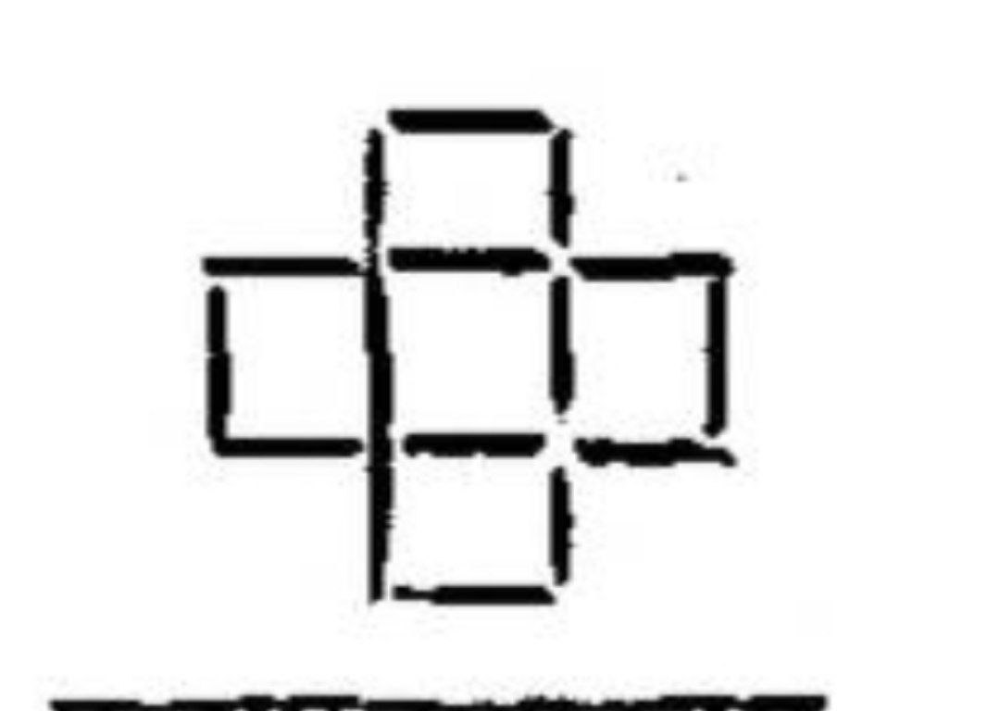

अथ सर्वदेवसामान्यपूजा।
तत्र विधिः -
शिवं विष्णुं गणपतिं दुर्गां रविमतः परम् ।
पञ्चैतान्पूजयेन्नित्यं नात्र कार्या विचारणा॥
इति गार्ग्यः ।
सम्पुटे पञ्चमूर्तीनां पूजा नित्यं शुभावहा ।
व्यतिरेकं प्रकुरुते दौर्भाग्यं लभते नरः॥
इति कश्यपः ॥
अथ कर्ता पूजास्थानं गत्वा देवं नमस्कृत्य, 1 स्वस्तिकासनः पद्मासनो वा प्राङ्मुख उदङ्मुखो वोपविश्य, स्वपुरतः कुसुमानि, दक्षिणतो गन्धाक्षतादिपूजोपकरणपात्राणि, वामतो सुशुद्धपुण्यजलपूरितपात्रं च विन्यस्य, पवित्रपाणिर्द्विराचम्य प्राणानायम्य ॥
‘श्रीमन्महागणपतये नमः ॥ ॐ देवीं वाचमजनयन्त देवाः । तां विश्वरूपाः पशवो वदन्ति ॥ सा नौ मन्द्रेषमूर्जन्दुहाना । धेनुर्वागस्मानुपसुष्टुतैतु ॥ नमो महद्भ्यो नमो अर्भकेभ्यो नमो युवभ्यो नम आशिनेभ्यः । यजाम देवान्यदि शक्नवाम मा ज्यायसः शंस मा वृक्षि देवाः ॥’
इत्यादि पठित्वा ॥
सुमुखश्चैकदन्तश्च कपिलो गजकर्णकः ।
लम्बोदरश्च विकटो विघ्नराजो गणाधिपः ॥
धूम्रकेतुर्गणाध्यक्षो भालचन्द्रो गजाननः ।
द्वादशैतानि नामानि यः पठेच्छृणुयादपि ॥
विद्यारम्भे विवाहे च प्रवेशे निर्गमे तथा ।
सङ्ग्रामे सर्वकार्येषु विघ्नस्तस्य न जायते ॥
शुक्लाम्बरधरं विष्णुं शशिवर्णं चतुर्भुजम् ।
प्रसन्नवदनं ध्यायेत्सर्वविघ्नोपशान्तये ॥
विनायकं गुरुं भानुं ब्रह्मविष्णुमहेश्वरान् ।
सरस्वतीं प्रणम्यादौ सर्वकार्यार्थसिद्धये ॥
अभीप्सितार्थसिद्ध्यर्थं पूजितो यः सुरैरपि ।
सर्वविघ्नच्छिदे तस्मै गणाधिपतये नमः ॥
सर्वेषु कालेषु समास्तदेशेष्वशेषकार्येषु तथेश्वरेश्वरः ।
सर्वस्वरूपी भगवाननादिर्ममास्तु माङ्गल्याभिवृद्धये हरिः ॥
यत्र योगेश्वरः कृष्णो यत्र पार्थो धनुर्धरः ।
तत्र श्रीर्विजयो भूतिर्ध्रुवानीतिर्मतिर्मम ॥
अनन्याश्चिन्तयन्तो मां ये जनाः पर्युपासते ।
तेषां नित्याभियुक्तानां योगक्षेमं वहाम्यहम् ॥
सर्वेष्वारब्धकार्येषु त्रयस्त्रिभुवनेश्वराः ।
देवा दिशन्तु नः सिद्धिं ब्रह्मेशानजनार्दनाः ॥
स्मृते सकलकल्याणभाजनं यत्र जायते ।
पुरुषं तमजं नित्यं व्रजामि शरणं हरिम् ॥
सर्वदा सर्वकार्येषु नास्ति तेषाममङ्गलम् ।
येषां हदिस्थो भगवान्मङ्गलायतनं हरिः ॥
लाभस्तेषां जयस्तेषां कुतस्तेषां पराजयः ।
येषामिन्दीवरश्यामो हृदयस्थो जनार्दनः ॥
सर्वमङ्गलदातारौ पार्वतीपरमेश्वरौ ।
गणेशस्कन्दसंयुक्तौ वन्दे वाञ्छितसिद्धये ॥
यः शिवो नामरूपाभ्यां या देवी सर्वमङ्गला ।
तयोः संस्मरणात्पुंसां सर्वतो जयमङ्गलम् ॥
सर्वमङ्गलमाङ्गल्ये शिवे सर्वार्थसाधिके ।
शरण्ये त्र्यम्बके देवि नारायणि नमोऽस्तु ते ॥
तदेव लग्नं सुदिनं तदेव ताराबलं चन्द्रबलं तदेव ।
विद्याबलं दैवबलं तदेव लक्ष्मीपते तेऽङ्घ्रियुगं स्मरामि ॥
लक्ष्मीनारायणाभ्यां नमः । उमामहेश्वराभ्यां नमः । वाणीहिरण्यगर्भाभ्यां नमः । सीतारामाभ्यां नमः । शचीपुरन्दराभ्यां नमः । अरुन्धतीवसिष्ठाभ्यां नमः । मातृभ्यो नमः । पितृभ्यो नमः । गुरुभ्यो नमः । आचार्येभ्यो नमः । इष्टदेवताभ्यो नमः । कुलदेवताभ्यो नमः । ग्रामाधिदेवताभ्यो नमः । सर्वेभ्यो देवेभ्यो नमः । सर्वेभ्यो ब्राह्मणेभ्यो नमः । श्रीमद्भगवद्बोधायनाचार्येभ्यो नमः ॥ प्रारम्भकालः सुमुहूर्ताऽस्त्विति भवन्तो ब्रुवन्तु । सुमुहूर्तोऽस्तु ॥
॥ अथ देशकालौ सङ्कीर्त्य
‘अस्माकं सकुटुम्बानां (मम सकुटुम्बस्य) क्षेमस्थैर्यविजयशुभआभयानन्दायुरारोग्यैश्वर्याभिवृद्ध्यर्थं धर्मार्थकाममोक्षाख्यचतुर्विधपुरुषार्थसिख्यर्थ अमुकदेवताप्रीत्यर्थं यथाशक्तियथाज्ञानेन कल्पोक्तपूजाराधनं करिष्ये’
इति सङ्कल्प्य
‘ॐ गणानां त्वा गणपतिँहवामहे कविं कवीनामुपमश्रवस्तमम् । ज्येष्ठराजं ब्रह्मणां ब्रह्मणस्पत आ नः शृण्वन्नूतिभिः सीद सादनम् ॥’
वक्रतुण्ड महाकाय सूर्यकोटिसमप्रभ ।
निर्विघ्नं कुरु मे देव सर्वकार्येषु सर्वदा ॥
इति गणपतिं,
नमो गुरुभ्यो गुरुपादुकाभ्यो नमः परेभ्यः परपादुकाभ्यः ।
आचार्यसिद्धेश्वरपादुकाभ्यो नमोऽस्तु लक्ष्मीपतिपादुकाभ्यः ॥
इति सद्गुरुं च स्मृत्वा,
‘मम देवपूजायोग्यतासिध्यर्थं भूशुध्यादिकं करिष्ये’ इति सङ्कल्प्य, यागभूमिं गन्धादिभिरभ्यर्च्य-
वराह ऋषिः । गायत्री छन्दः । भूमिर्देवता । लां बीजम् । लीं शक्तिः । लूं कीलकम् । मम देवतार्चनाधिकारसिद्ध्यर्थे जपे विनियोगः ॥ लां हृदयाय नमः ।। लीं शिरसे स्वाहा । लूं शिखायै वषट् । लैं कवचाय हुं । लौं नेत्रत्रयाय वौषट् । लः अलाय फट् ॥
ॐ
विष्णुशक्तिसमुत्पन्ने शङ्खवर्णे महीतले ।
अनेकरत्नसम्पन्ने भूमिदेवि नमोऽस्तु ते ॥
इति जपित्वा ‘ॐ लं पृथिव्यै नमः’ इति भूमिं नमेत् ॥ इति भूशुद्धिः ॥
॥ ॐ फडि॑त्यस्त्रमन्त्रेण घण्टां सम्पूज्य वादयेत्-
ॐ
‘आगमार्थं तु देवानां गमनार्थं तु रक्षसाम् ।
कुर्वे घण्टारवं नित्यं देवतह्वानलक्षणम् ॥’
इति ॥
॥ अपसर्पन्त्वित्यस्य वामदेव ऋषिः । अनुष्टुप्छन्दः । भूतानि देवताः । भूतोत्सादने विनियोगः ॥ ॑
अपसर्पन्तु ते भूता ये भूता भूमिसंस्थिताः ।
ये भूता विघ्नकर्तारस्ते नश्यन्तु शिवाजया ॥
अपक्रामन्तु भूतानि पिशाचाः सर्वतो दिशम् ।
सर्वेषामविरोधेन पूजाकर्म समारभे ॥
वामपार्ष्णिघातत्रयेण भौमान्विघ्नानुत्सारयामि ।
ऊर्ध्वोर्ध्वलत्रयेणान्तरिक्षान् विघ्नानुत्सारयामि ॥
2 ‘नाराचमुद्रादर्शनेन दिव्यान्विघ्नानुत्सारयामि’ इति भूतोत्सादनम् ॥
पृथ्वीत्यस्य मेरुपृष्ठ ऋषिः । सुतलं छन्दः ॥
‘आदिकूर्मो देवता । आसने विनियोगः ॥’
ॐ
पृथ्वि त्वया धृता लोका देवि त्वं विष्णुना धृता ।
त्वं च धारय मां देवि पवित्रं कुरु चासनम् ॥
ॐ ‘आधारशक्तिकमलासनाय नमः’
इत्यासनमभिमन्त्र्य तत्रोपविश्य
ॐ
ऊर्ध्वकेशि विरूपाक्षि मांसशोणितभक्षिणि ।
तिष्ठ देवि शिखाबन्धे चामुण्डे ह्यपराजिते॥
इति शिखां बद्ध्वा करौ प्रक्षालयेत् ॥
॥ अथ बद्धाञ्जलिः स्ववामे ‘ॐ गुरुभ्यो नमः’, दक्षिणे ‘ॐ गं गणपतये नमः’, पुरतः ‘ॐ इष्टदेवतायै नमः’ इति गुर्वादीन्ननत्वा ॥ ‘अहिर्बुध्न्य ऋषिः । अनुष्टुप्छन्दः । श्रीसुदर्शनचक्रस्वरूपीविष्णुर्देवता । दिग्बन्धे विनियोगः ॥ ॐ नमो भगवते चक्राय चक्रमूर्तिधराय सेनाधिपतये सहस्रार हुं फट् स्वाहा’ इति जपन् नाराचमुद्रया दशदिक्षु विन्यस्य ‘ॐ फट्’ इति ऊर्ध्वोर्ध्वतालत्रयं कुर्यात् ॥
ॐ
तीक्ष्णदंष्ट्र महाकाय कल्पान्तदहनोपम ।
भैरवाय नमस्तुभ्यमनुज्ञां दातुमर्हसि ॥
इति भैरवाज्ञां गृहीत्वा
यदत्र संस्थितं भूतं स्थानमाश्रित्य सर्वतः ।
स्थानं त्यक्त्वा तु तत्सर्वं यत्रस्थं तत्र गच्छतु॥
इति गौरसर्षपान्विकीर्य,
‘देवा आयान्तु । यातुधाना अपयान्तु । विष्णो देवयजनं रक्षस्व’
इति भूमौ प्रादेशं कुर्यात् ॥
‘ॐ
शुची वो हव्या मरुतः शुचीनाम् ।
शुचिँहिनोम्यध्वरँशुचिभ्यः ॥
ऋतेन सत्यमृतसाप आयन् ।
शुचि जन्मानः शुचयः पावकाः ॥’
अपवित्रः पवित्रो वा सर्वावस्थां गतोऽपि वा ।
यः स्मरेत्पुण्डरीकाक्षं स बाह्याभ्यन्तरः शुचिः॥
इत्यद्भिः सर्वत्र प्रोक्षयेत् ॥
अथ भूतशुद्धिः ॥ ‘ॐ हुँ’ इति मूलाधारोत्थितकुण्डलिन्या सह हृदिस्थं जीवात्मानं ‘हंसः’ इति मन्त्रेण 3 सुषुम्ना वर्त्मना ब्रह्मरन्ध्रस्थपरमात्मनि संयोज्य, तत्र ‘लं वं रं यं हं’ इति पञ्चभूतबीजप्राणायामेन पृथिव्यप्तेजोवाय्वाकाशतत्त्वानि क्रमात् लीनानि विचिन्त्य, ‘यं’ इति वायुबीजोत्थयवायुना वामकुक्षिस्थपापपुरुषेण सह देहं संशोष्य, ‘रं‘ इत्यग्निबीजोत्थवह्निना तनुं सन्दह्य, ‘वं’ इत्यमृतबीजोत्थामृताम्भसा तद्देहभस्म सम्प्लाव्य, ‘लं’ इति भूबीजेन घनीकृत्य, ‘शुद्धचिन्मयोऽहं, ब्रह्माहमस्मि’ इति चिरं भावयेत् ॥
तस्मात्परमात्मनः सकाशात्सृष्टिक्रमेण ‘हं’ इत्याकाशबीजेन शुद्धदेहोत्पत्तिं विभावयेत्-
‘तस्मात्सर्वज्ञात्सर्वशक्तेः परब्रह्मणः सकाशात्प्रकृतिः । प्रकृतेर्महान् । महतोऽहङ्कारः । अहङ्कारादाकाशः । आकाशाद्वायुः । वायोरग्निः । अग्नेरापः । अद्भयः पृथिवी । पृथिव्या ओषधयः । ओषधीभ्योऽन्नम् । अन्नाद्रेतः । रेतसः पुरुषः । स वा एष पुरुषोऽन्नरसमयः ॥’
इति विभाव्य पुनर्जीवात्मानं ‘सोऽहं’ इति मन्त्रेण सुषुम्नानाडीमार्गेण ब्रह्मरन्ध्रादानीय हृत्कमले प्रतिष्ठाप्य कुण्डलिनीं मूलाधारगतां स्मरेत् ॥ इति भूतशुद्धिः ॥ ॥ येभ्यो माता इत्यस्य गयःप्लातो विश्वेदेवा जगती । एवा पित्र इत्यस्य वामदेवो बृहस्पतिर्विश्वेदेवास्त्रिष्टुप् । मनुष्यगन्धनिवारणे विनियोगः ॥
ॐ येभ्यो माता मधुमत्पिन्वते पयः पीयूषं द्यौरदितिरद्रिब्रह्माः। उक्थ शुष्मान्वृषभरान्स्वप्नसस्ताँ आदित्याँ अनुमदा स्वस्तये ॥ एवा पित्रे विश्वदेवाय वृष्णे यज्ञैर्विधेन नमसा हविर्भिः । बृहस्पते सुप्रजा वीरवन्तो वयँस्याम पतयो त रयीणाम् ॥ इति मनुष्यगन्धनिवारणम् ॥
॥ अथ प्राणप्रतिष्ठा ॥
‘अस्य श्रीप्राणप्रतिष्ठामन्त्रस्य ब्रह्मविष्णुमहेश्वरा ऋषयः ।
ऋग्यजुःसामाथर्वाणि छन्दांसि ।
सकलसुखकरी प्राणशक्तिर्देवता ।
आं बीजम् । ह्रीं शक्तिः । कों कीलकम् ।
मम अन्तःशरीरशुद्ध्यर्थे जपे विनियोगः ॥
अं कं खं गं घं ङं आकाशवायुतेजोजलपृथिव्यात्मने आं अङ्गुष्ठाभ्यां नमः हृदयाय नमः । ईं चं छं जं झं ञं शब्दस्पर्शरूपरसगन्धात्मने ईं तर्जनीभ्यां नमः शिरसे स्वाहा । उं टं ठं डं ढं णं श्रोत्रत्वक्चक्षुर्जिह्वाघ्राणात्मने ऊं मध्यमाभ्यां नमः शिखायै वषट् । एं तं थं दं धं नं वाक्पाणिपादपायूपस्थात्मने ऐं अनामिकाभ्यां नमः कवचाय हुं । ओं पं फं बं भं मं प्राणापानव्यानोदानसमानात्मने औं कनिष्ठिकाभ्यां नमः नेत्रत्रयाय वौषट् । अं यं रं लं वं शं षं सं हं ळं क्षं मनोबुद्ध्यहङ्कारचित्तविज्ञानात्मने अः करतलकरपृष्ठाभ्यां नमः अस्त्राय फट् ॥ रक्ताम्भोधिस्थपोतोल्लसदरुणसरोजाधिरूढा कराब्जैः पाशं कोदण्डमिक्षुं त्वभयवरगुणानङ्कुशं पञ्च बाणान् । बिभ्राणासृक्कपालं त्रिनयनलसिता पीनवक्षोरुहाढ्या देवी बालार्कवर्णा भवतु सुखकरी प्राणशक्तिः परा नः ॥ॐ आं ह्रीं क्रों यरलवशषसहों सं हं सः । मम प्राणा इह प्राणा मम जीव इह स्थितः। मम सर्वेन्द्रियाणि वाङ्मनश्चक्षुश्रोत्र [जिह्वा] घ्राणप्राणा इहागत्य सुखं जिरं तिष्ठन्तुस्वाहा’ इति हृदयं स्पृष्ठा त्रिः सकृद्वा जपेत् ॥ ॐ असुनीते पुनरस्मासु चक्षुः पुनः प्राणमिह नो धेहि भोगम् । ज्योक्पश्येम सूर्यमुच्चरन्तमनुमते मृडया नः स्वस्ति ॥ ‘गर्भाधानादिपञ्चदशसंस्कारसिद्ध्यर्थे पञ्चदश प्रणवावृत्तीः करिष्ये’ इत्युक्त्वा ‘ॐ कारं पञ्चदशवारं जपेत् ॥ इति प्राणप्रतिष्ठा 4॥
अन्तर्मातृकान्यासः
अथान्तर्मातृकान्यासः ॥
अस्य श्री+अन्तर्मातृकासरस्वतीमन्त्रस्य । ब्रह्मा ऋषिः । गायत्री छन्दः । अन्तर्मातृका सरस्वती देवता । हलो बीजानि । स्वराः शक्तयः । बिन्दवः कीलकम् । अन्तर्मातृकान्यासे विनियोगः ॥ ब्रह्मर्षये नमः शिरसि ।
गायत्रीछन्दसे नमः मुखे ।
अन्तर्मातृकासरस्वतीदेवतायै नमः हृदये ।
हल बीजेभ्यो नमः गुह्ये ।
स्वरशक्तिभ्यो नमः पादयोः ।
बिन्दुकीलकाय नमः सर्वाङ्गे ॥
ॐ अं कं खं गं घं ङं आं अङ्गुष्ठाभ्यां नमः ।
ॐ इं चं छं जं झं ञं ईं तर्जनीभ्यां नमः ।
ॐ उं टं ठं डं ढं णं ऊं मध्यमाभ्यां नमः ।
ॐ एं तं थं दं धं नं ऐं अनामिकाभ्यां नमः ।
ॐ ओं पं फं भं मं औं कनिष्ठिकाभ्यां नमः ।
ॐ अं यं रं लं वं शं षं सं हं ळं क्षं अः करतलकरपृष्ठाभ्यां नमः ।
एवं हृदयादि न्यासः ॥ ॐ अं नमः । ॐ आं नमः । एवमेव-इं ईं उं ऊं ऋं एं ऐं ओं ओं अं अः नमः षोडशवर्णन् प्रत्येकं नमोऽन्तान् ‘कण्ठस्थाने’ षोडशदलपद्मे न्यसामि ॥
ॐ कं खं गं घं ङं चं छं जं झं ञं टं ठं एतान् द्वादशवर्णान् प्रत्येकं नमोऽन्तान् ‘हृदयस्थाने’ द्वादशदलपद्मे न्यसामि ॥
ॐ डं ढं णं तं थं दं धं नं पं फं एतान् दशवर्णान् प्रत्येकं नमोऽन्तान् ‘नाभिस्थाने’ दशदलपद्मे न्यसामि ॥
ॐ बं भं मं यं रं लं एतान् षड्वर्णान् प्रत्येकं नमोऽन्तान् ‘लिङ्गस्थाने षड्दलपद्मे न्यसामि ॥ ॐ वं शं षं सं एतान् चतुर्वर्णान् प्रत्येकं नमोऽन्तान् ‘आधारस्थाने’ चतुर्दलपद्मे न्यसामि ॥
ॐ हं क्षं एतौ वर्णौ प्रत्येकं नमोऽन्तौ ‘भ्रूमध्यगते’ द्विदलपद्मे न्यसामि ॥
आधारे लिङ्गनाभौ हृदयसरसिजे तालुमूले ललाटे द्वे पत्रे षोडशारे द्विदशदशदले द्वादशार्धे चतुष्के ।
वासान्ते बालमध्ये डफकठसहिते कण्ठदेशे स्वराणां हं क्षं तत्त्वार्थयुक्तं सकलदलगतं वर्णरूपं नमामि ॥
बन्धूकाभां त्रिनेत्रां पृथुजघनलसत्कुक्षिमारक्तवस्त्रां पीनोत्तुङ्गप्रवृद्धस्तनजघनभरां यौवनारम्भरूढाम् ।
सर्वालङ्कारयुक्तां सरसिजवदनामिन्दुसङ्क्रान्तमौलिमम्बां पाशाङ्कुशेष्टाभयवरदकरामम्बिकां तां नमामि ॥
इति अन्तर्मातृकान्यासः ॥’
बहिर्मातृकान्यासः
अथ बहिर्मातृकान्यासः ॥
अस्य श्री बहिर्मातृकासरस्वतीमन्त्रस्य । ब्रह्मा ऋषिः । गायत्री छन्दः । बहिर्मातृका सरस्वती देवता । हलो बीजानि । स्वराः शक्तयः । बिन्दवः कीलकम् । बहिर्मातृकान्यासे विनियोगः ॥ ब्रह्मर्षये नमः शिरसि ।
गायत्रीछन्दसे नमः मुखे ।
बहिर्मातृकासरस्वतीदेवतायै नमः हृदये ।
हल बीजेभ्यो नमः गुह्ये ।
स्वरशक्तिभ्यो नमः पादयोः ।
बिन्दुकीलकाय नमः सर्वाङ्गे ॥
ॐ अं नमः ललाटे न्यसामि ।
ॐ आं नमः मुखवृत्ते॰ ।
ॐ इं नमः दक्षनेत्रे॰ ।
ॐ ईं नमः वामनेत्रे ।
ॐ उं नमः दक्षिणकर्णे॰ ।
ॐ ऊं नमः वामकर्णे॰ ।
ॐ ऋं नमः दक्षिणनासापुटे॰ ।
ॐ ॠं नमः वामनासापुटे॰ ।
ॐ ऌं नमः दक्षिणगण्डे॰ ।
ॐ ॡं नमः वामगण्डे॰ ।
ॐ एं नमः ऊर्ध्वोष्ठे॰ ।
ॐ ऐं नमः अधरोष्ठे॰ ।
ॐ ओं नमः ऊर्ध्वदन्तपतौ॰ ।
ॐ ओं नमः अधरदन्तपतौ॰ ।
ॐ अं नमः शिरसि॰ ।
ॐ अः नमः मुखे॰ ।
ॐ के नमः दक्षबाहुमूले॰ ।
ॐ खं नमः दक्षकूर्परे॰ ।
ॐ गं नमः दक्षमणिबन्धे॰ ।
ॐ घं नमः दक्षाङ्गुलि मूले॰ ।
ॐ ङं नमः दक्षाङ्गुल्यप्रे॰ ।
ॐ चं नमः वामबाहुमूले॰ ।
ॐ छं नमः वामकूर्परे॰ ।
ॐ जं नमः वाममणिबन्धे॰ ।
ॐ झं नमः वामाङ्गुलिमूले॰ ।
ॐ अं नमः वामाङ्गुल्यग्रे॰ ।
ॐ नमः दक्षपादमूले॰ ।
ॐ नमः दक्षजानुनि॰ ।
ॐ हुं नमः दक्षगुल्फे॰ ।
ॐ ढं नमः दक्षपादाङ्गुलिमूले॰ ।
ॐ गं नमः दक्षपादाङ्गुल्यग्रे॰ ।
ॐ तं नमः वामपादमूले॰ ।
ॐ यं नमः वामजानुनि॰ ।
ॐ दं नमः वामगुल्फे॰ ।
ॐ धं नमः वामपादाङ्गुलिमूले॰ ।
ॐ नं नमः वामपादाङ्गुल्यग्रे॰ ।
ॐ पं नमः दक्षपार्श्वे॰ ।
ॐ फं नमः वामपार्श्वे॰ ।
ॐ बं नमः पृष्ठे॰ ।
ॐ भं नमः नाभौ॰ ।
ॐ मं नमः जठरे॰ ।
ॐ यं नमः हृदये॰ ।
ॐ रं नमः दक्षांसे॰ ।
ॐ लं नमः ककुदि॰ ।
ॐ वं नमः वामांसे॰ ।
ॐ शं नमः हृदादिदक्षहस्तान्ते॰ ।
ॐ षं नमः हृदादिवामहस्तान्ते॰ ।
ॐ सं नमः हृदादिदक्षपादान्ते॰ ।
ॐ हं नमः हृदादिवामपादान्ते॰ ।
ॐ ळं नमः जठरे॰ ।
ॐ क्षं नमः मुखे न्यसामि ॥
अथ ध्यानम्-
पञ्चाशद्वर्णभेदैर्विहितपदनदोः पादहृत्कुक्षिवक्षोदेशां भास्वत्कपर्दाकलितशशिकलामिन्दुकुन्दावदाताम् ।
अक्षत्रकुम्भचिन्तालिखितवरकरां त्रीक्षणां पद्मसंस्थां अच्छाकल्पामतुच्छस्तनजघनभरां भारतीं तां नमामि ॥
“ॐ चत्वारि वाक्परिमिता पदानि । तानि विदुर्ब्राह्मणा ये मनीषिणः । गुहा त्रीणि निहिता नेङ्गयन्ति । तुरीयं वाचो मनुष्या वदन्ति ॥” इति बहिर्मातृकान्यसः ॥
पुरुषसूक्तन्यासः
अथ पुरुषसूक्तन्यासः ॥
ॐ सहस्रशीर्षा पुरुषः । सहस्राक्षः सहस्रपात् । स भूमिं विश्वतो वृत्वा । अत्ययतिष्ठद्दशाङ्गुलम् ॥ वामकराय नमः ॥ ॐ पुरुष एवेदं सर्वम् । यद्भूतं यच्च भव्यम् । उतामृतत्वस्येशानः । यदन्नेनातिरोहति ॥ दक्षिणकराय॰ ॥ ॐ एतावानस्य महिमा । अतो ज्यायांश्च पूरुषः । पादोस्य विश्वा भूतानि । त्रिपादस्यामृतं दिवि ॥ वामपादाय॰ ॥ ॐ त्रिपादूर्ध्व उदैत्पुरुषः । पादोस्येहाभवात्पुनः । ततो विश्वङ्व्यक्रामत् । साशनानशने अभि ॥ दक्षिणपादाय॰ ॥ ॐ तस्माद्विराडजायत । विराजो अधि पूरुषः । स जातो अत्यरिच्यत । पश्चाभूमिमथो पुरः ॥ वामजङ्घाय॰ ॥ ॐ यत्पुरुषेण हविषा । देवा यज्ञमतन्वत । वसन्तो अस्यासीदाज्यम् । ग्रीष्म इध्मः शरद्धविः ।। दक्षिणजङ्घाय॰ ॥ ॐ सप्तास्यासन्परिधयः । त्रिः सप्त समिधः कृताः । देवा यद्यज्ञं तन्वानाः । अबध्नन्पुरुषं पशुम् ॥ वामकट्यै ॰॥ ॐ तं यज्ञं बर्हिषि प्रौक्षन् । पुरुषं जातमग्रतः । तेन देवा अयजन्त । साध्या ऋषयश्च ये ॥ दक्षिणकट्यै॰॥ ॐ तस्माद्यज्ञात्सर्वहुतः । सम्भृतं पृषदाज्यम् । पशूंस्तांश्चक्रे वायव्यान् । आरण्यान्ग्राम्याश्च ये । नाभ्यै॰ ॥ ॐ तस्माद्यज्ञात्सर्वहुतः । ऋचःसामानि जज्ञिरे । छन्दांसि जज्ञिरे तस्मात् । यजुस्तस्मादजायत ॥ हृदयाय॰ ॥ ॐ तस्मादश्वो अजायन्त । ये के चोभयादतः । गावो ह जज्ञिरे तस्मात् । तस्माज्जाता अजावयः ॥ कण्ठाय॰ ॥ ॐ यत्पुरुषं व्यदधुः । कतिधाव्यकल्पयन् । मुखं किमस्य कौ बाहू । कावूरूपादावुच्यते ॥ वामबाहवे॰ ॥ ॐ ब्राह्मणोस्य मुखमासीत् । बाहू राजन्यः कुतः । ऊरू तदस्य यद्वैश्यः । पद्भ्यां शुद्रो अजायत । दक्षिणबाहवे ॰ ॥ ॐ चन्द्रमा मनसो जातः । चक्षोः सूर्यो अजायत । मुखादिन्द्रश्चाग्निश्च । प्राणाद्वायुरजायत ॥ वामनेत्रा ॰ ॥ ॐ नाभ्या आसीदन्तरिक्षम् । शीर्णोद्यौः समवर्तत । पद्यां भूमिर्दिशः श्रोत्रात् । तथा लोकां अकल्पयन् ॥ दक्षिणनेत्राय ॰ ॥ ॐ वेदाहमेतं पुरुषं महान्तम् । आदित्यवर्णं तमसस्तु पारे । सर्वाणि रूपाणि विचित्य धीरः । नामानि कृत्वाभिवदन्यदास्तै ॥ । वामकर्णाय ॰ ॥ ॐ धाता पुरस्ताद्यमुदाजहार । शक्रः प्रविद्वान्प्रदिशश्चतस्रः । तमेवं विद्वानमृत इह भवति । नान्यः पन्था अयनाय विद्यते ॥ दक्षिणकर्णाय॰ ॥ ॐ यज्ञेन यज्ञमयजन्त देवाः । तानि धर्माणि प्रथमान्यासन् । ते ह नाके महिमानः सचन्ते । यत्र पूर्वे साध्याः सन्ति देवाः ॥ शिरसे नमः ॥
इति पुरुषसूक्तन्यासः ॥
कलशार्चनम्
अथ कलशार्चनम् ॥ स्ववामे जलकुम्भं निधाय
ॐ कलशस्य मुखे विष्णुः कण्ठे रुद्रः समाश्रितः ।
मूले तत्र स्थितो ब्रह्मा मध्ये मातृगणाः स्मृताः ॥
कुक्षौ तु सागराः सर्वे सप्तद्वीपा वसुन्धरा ।
ऋग्वेदोऽथ यजुर्वेदः सामवेदोह्यथर्वणः ॥
अङ्गैश्च सहिताः सर्वे कलशं तु समाश्रिताः ।
अत्र गायत्री सावित्री शान्तिःपुष्टिकरी तथा ॥
सर्वे समुद्राः सरितस्तीर्थानि जलदा नदाः ।
आयान्तु देवपूजार्थं दुरितक्षयकारकाः ॥
गङ्गे च यमुने चैव गोदावरि सरस्वति ।
नर्मदे सिन्धु कावेरि जलेऽस्मिन्सन्निधिं कुरु ॥
‘ॐ कलशदेवताभ्यो नमः जलगन्धाधुपचारान्समर्पयामि’ इति सम्पूज्य 5 धेनुमुद्रां प्रदर्श्य
‘सितमकरनिषण्णां शुभ्रवर्णां त्रिणेत्रां करधृतकलशोद्यत्सोत्पलाभीत्यभीष्टाम् ।
विधिहरिहररूपां सेन्दुकोटीरचूडां
भसितसितदुकूलां जाह्नवीं तां नमामि’
इति प्रणमेत् ॥
शङ्खार्चनम्
॥ अथ 6 शङ्खार्चनम् ॥ ॐ ‘अस्त्राय फट्’ इति साधारं ।
शङ्खं प्रक्षाळ्य देवस्य पुरतः स्ववामे चतुरस्रं त्रिकोणं वा मण्डलं कृत्वा ‘ॐ व्यापकमण्डलाय नमः’ इति सम्पूज्य तत्राधारं निधाय ‘मं वह्निमण्डलाय धर्मप्रददशकलात्मने नमः’ इति सम्पूज्य तदुपरि शङ्खं निधाय ‘अं अर्कमण्डलायार्थप्रदद्वादशकलात्मने नमः’ इति सम्पूज्य ‘ॐ’ इति जलमापूर्य ‘उं सोममण्डलाय कामप्रदषोडशकलात्मने नमः’ इति गन्धपुष्पादिभिः अभ्यर्च्य, 7 शङ्खमुद्रां प्रदर्श्य
शङ्खादौ चन्द्रदैवत्यं मध्ये वरुणदेवता ।
पृष्ठे प्रजापतिस्तत्र अग्ने गङ्गासरस्वती
इति स्मृत्वा,
‘ॐ पाञ्चजन्याय विद्महे पद्मगर्भाय धीमहि । तन्नः शङ्गः प्रचोदयात्’ इति त्रिवारमभिमन्त्र्य ‘ॐ’
त्वं पुरा सागरोत्पन्नो विष्णुना विधृतः करे ।
रक्षार्थं सर्वदेवानां पाञ्चजन्य नमोऽस्तु ते ॥
गर्भा देवारिनारीणां व्यशीर्यन्ते सहस्रधा ।
तव नादेन पाताले पाञ्चजन्य नमोऽस्तु ते ॥
विलयं यान्ति पापानि हिमवद्भास्करोदये ।
दर्शनादेव शङ्खस्य किं पुनः 8 स्पर्शनेन तु॥
इति स्तुत्वा, किश्चिच्छङ्खोदकं कलशे निक्षिप्य, पुष्पपाणिर्देवं यागभूमिं पूजाद्रव्याण्यात्मानं च प्रोक्ष्य, पुनः शङ्खं जलेन पूरयित्वा देवस्य दक्षिणभागे स्थापयेत् 9 ॥
आत्मार्चनम्
॥ अथात्मार्चनम् ॥ गन्धपुष्पादीन्स्वमूर्ध्नि निक्षिप्य ‘अच्युतोऽहमनन्तोऽहं ब्रह्मा’ इत्यात्मानं ध्यायेत्-
ॐ यो वेदादौ स्वरः प्रोक्तो वेदान्ते च प्रतिष्ठितः । तस्य प्रकृतिलीनस्य यः परः स महेश्वरः
इति ध्यात्या, ‘ॐ आत्मने नमः । ॐ अन्तरात्मने नमः । ॐ परमात्मने नमः । ॐ शानात्मने नमः’ इति सम्पूज्य, शिरस्थपुष्पमाघ्राय स्वदक्षिणे विसृजेत् ॥
पञ्चामृतविधिः
॥ अथ पञ्चामृतविधिः ॥ आदौ 10 पात्रासादनम् ॥ देवाग्रे 11 स्वदक्षिणे चतुर्दिक्षु मध्ये च चतुरस्रं विलिख्य, तत्पश्चकोष्ठेषु प्रस्थमितशालीतण्डुलान्निक्षिप्य, तन्मध्ये क्षीरं, पूर्वे दधि, दक्षिणे घृतं, पश्चिमे मधु, उत्तरे शर्करामिति पञ्च द्रव्याणि संस्थाप्य, तेषु क्रमेण सोमादिपञ्च देवता आवाह्य पूजयेत्-
अस्य श्रीपञ्चद्रव्यदेवतामन्त्रस्य ॥ गौतमवामदेवपरमेष्ठीप्रजापतिविश्वामित्रा ऋषयः । गायत्र्यनुष्टुब्बृहतीगायत्रीगायत्र्यश्च्छन्दांसि । सोमवायुरविविश्वेदेवसवितारो देवताः । पञ्चद्रव्यदेवतापूजने विनियोगः ॥
ॐ आप्यायस्व समेतु ते विश्वतः सोमवृष्णियम् । भवा वाजस्य सङ्गथे ॥ ॐ भूर्भुवःसुवः सोमाय नमः सोममावाहयामि ॥
ॐ दधिक्राव्णो अकारिषं जिष्णोरश्व॑स्य वाजिनः । सुरमिनो मुखा करत्प्रण आयुषितारिषत् ॥ ॐ भूर्भुवःसुवः वायवे नमः वायुमावाहयामि ॥
ॐ शुक्रमसि ज्योतिरसि तेजोऽसि देवो वः सवितोत्पुनात्वच्छिद्रेण पवित्रेण वसोः सूर्यस्य रश्मिभिः ॥ ॐ भूर्भुवःसुवः रवये नमः रविमावाहयामि ॥
ॐ मधुवाता ऋतायते मधुक्षरन्ति सिन्धवः । माध्वीर्नः सन्त्वोषधीः । मधु नक्तमुतोषसि मधुमत्पार्थिवंरजः । मधु द्यौरस्तु नः पिता । मधुमान्नो वनस्पतिर्मधुमा ं अस्तु सूर्यः । माध्वीर्गावो भवन्तु नः ॥ ॐ भूर्भुवःसुवः विश्वेभ्यो देवेभ्यो नमः विश्वान्देवान् आवाहयामि ॥
ॐ तत्सवितुर्वरेण्यं … प्रचोदयात् ॥ ॐ भूर्भुवःसुवः सवित्रे नमः सवितारमावाहयामि
इत्यावाह्य, ‘पञ्चद्रव्यदेवताभ्यो नमः आसनं समर्पयामि’ इत्यादिषोडशोपचारैः सम्पूज्य समर्पयेत् ॥
मण्डपार्चनम्
॥ अथ मण्डपार्चनम् ॥
उद्यत्पत्रफलातिनम्रविलसद्रम्भाभिरालिङ्गितस्तम्भं
चारुदलै रसालविटपैः सर्वत्र संवेष्टितम् ।
राजच्चामरसम्प्रबद्धमुकुरोदञ्चद्वितानान्वितं
युक्तं पुष्पफलैरलङ्कृतमिदं ध्यायेन्महामण्डपम् ॥
इति ध्यात्वा ‘ॐ मण्डपदेवताभ्यो नमः’ इति मण्डपं, ‘ॐ 12 द्वारदेवताभ्यो नमः’ इति द्वारं च समर्चयेत् ॥
द्वारपालपूजा
॥ अथ द्वारपालपूजा ॥
ॐ धात्रे नमः विधात्रे नमः । पूर्वद्वारलक्ष्म्यै नमः ॥ ॐ चण्डाय प्रचण्डाय॰ । दक्षिणद्वारलक्ष्म्यै नमः ॥ ॐ बलाय॰ प्रबलाय॰ । पश्चिमद्वारलक्ष्म्यै नमः ॥ ॐ शङ्खनिधये॰ पद्मनिधये॰ । उत्तरद्वारलक्ष्म्यै नमः ॥
पीठपूजा
॥ अथ पीठपूजा ॥ पीठस्योत्तरे- ‘ॐ गुं गुरुभ्यो नमः’ ॥ पीठस्य दक्षिणे- ‘ॐ गं गणपतये नमः’ ॥ ततः पीठं पूजयेत्-
ॐ आधारशक्त्यै नमः । मूलप्रकृत्यैः॰ । आदिकूर्माय॰ । अनन्ताय॰ । वराहाय॰ । पृथिव्यैः॰ । क्षीरसमुद्राय॰ । श्वेतद्वीपाय॰ । मणिमण्डपाय॰ । कल्पवृक्षाय॰ । हेमवेदिकायै॰ । रत्नसिंहासनाय॰ । धर्माय॰ । ज्ञानाय॰ । वैराग्याय॰ । ऐश्वर्याय॰ । अधर्माय॰ । अज्ञानाय॰ । अवैराग्याय॰ । अनैश्वर्याय॰ । सर्वतत्त्वपद्माय॰ । आनन्दकन्दाय॰ । संविनाळाय॰ । विकारमयकेसरेभ्यो॰ । प्रकृतिमयपत्रेभ्यो॰ । पञ्चाशद्वर्णकर्णिकायै॰ । अं अर्कमण्डलाय द्वादशकलात्मने॰ । उं सोममण्डलाय षोडशकलात्मने॰ । मं वह्निमण्डलाय दशकलात्मने॰ । सं सत्त्वाय॰ । रं रजसे॰ । तं तमसे॰ । आं आत्मने॰ । अं अन्तरात्मने॰ । पं परमात्मने॰ । ह्रीं ज्ञानात्मने नमः
इति पीठदेवताः पूजयेत् ॥ 13 [‘ॐ आधारशक्त्यादिपीठदेवताभ्यो नमः’ इति वा पूजयेत् ॥]
पञ्चमूर्तिपूजा
॥ अथ 14 पञ्चमूर्तिपूजा ॥
15 रविर्विनायकश्चण्डी ईशो विष्णुस्तु पञ्चमः ।
अनुक्रमेण पूज्यन्ते व्युत्क्रमे तु महद्भयम् ॥
सूर्यपूजा
अथ सूर्यपूजा ॥ पीठस्याष्टदिक्षु मध्ये च नवशक्तीः पूजयेत् ॥ आदौ नवशक्तिपूजा-
ॐ
दीप्तायै नमः ।
सूक्ष्मायै॰ ।
जयायै॰ ।
भद्रायै॰ ।
विभूत्यै॰ ।
विमलायै॰ ।
अमोघायै॰ ।
विद्युतायै॰ ।
सर्वतोमुख्यै नमः ।
इति नवशक्तिपूजा ॥
ॐ ब्रह्मविष्णुशिवात्मकाय सौराय योगपीठाय नमः सुवर्णपीठं कल्पयामि
इति पीठं प्रकल्प्य तत्र देवं ध्यात्वाऽऽवाहयेत्-
स्वात्मसंस्थमजं शुद्धं त्वामद्य सुदिवाकर । अरण्यामिव हव्याशं मूर्तावावाहयाम्यहम् ॥ ॐ भूर्भुवः सुवरों सशक्तिसागसायुधसवाहनसपरिवारश्रीसूर्यभगवन्नागच्छागच्छों आवाहयामि
इत्यावाह्य 16
आवाहितो भव । संस्थापितो भव । सन्निहितो भव । सन्निरुद्धो भव । सम्मुखीकरणो भव । सुप्रसन्नो भव
इति षण्मुद्राः प्रदर्शयेत् 17॥
ॐ
भास्कराय विद्महे महद्द्युतिकराय धीमहि ।
तन्नो आदित्यः प्रचोदयात्
इति सूर्यगायत्रीं जपेत् ॥
अस्य श्रीसूर्याष्टाक्षरमन्त्रस्य देवभाग ऋषिः । गायत्री छन्दः । सूर्यो देवता । ॐ बीजं । ह्रीं शक्तिः । न्यासे विनियोगः ॥
ॐ सत्यतेजोज्वालामणे हुं फट् स्वाहा हृदयाय नमः ।
ॐ ब्रह्मतेजोज्वालामणे हुं फट् स्वाहा शिरसे स्वाहा ।
ॐ विष्णुतेजोज्वालामणे हुं फट् स्वाहा शिखायै वषट् ।
ॐ रुद्रतेजोज्वालामणे हुं फट् स्वाहा कवचाय हुम् ।
ॐ अग्नितेजोज्वालामणे हुं फट् स्वाहा नेत्रत्रयाय वौषट् ।
ॐ सर्वतेजोज्वालामणे हुं फट् स्वाहा अस्त्राय फट् ॥
इत्यङ्गन्यासः ॥
अरुणोऽरुणपङ्कजे निषण्णः कमलेऽभीतिवरौ करैर्दधानः ।
स्वरुचाहितमण्डलस्त्रिनेत्रो रविराकल्पशताकुलोऽवतान्नः ॥
इति ध्यानम् ॥
‘ॐ घृणिः ।। सूर्य आदित्यः ॥’ इति जपम् ॥
॥ अथ 18 पञ्चोपचारपूजा-
लं पृथिव्यात्मने नमः गन्धं समर्पयामि ।
हं आकाशात्मनेनमः पुष्पं॰ ।
यं वाय्वात्मने नमः धूपं॰ ।
रं तेजोमयात्मने नमः दीपं॰ ।
वं अमृतात्मने नमः नैवेद्यं समर्पयामि ॥
इति पञ्चोपचारपूजा ॥ ॥
अथ द्वादशनामपूजा-
ॐ सहस्त्रकिरणाय नमः । सूर्याय॰ । तपनाय॰ । सवित्रे॰ । रवये॰ । विकर्तनाय॰ । जगच्चक्षुषे॰ । द्युमणये॰ । तिग्मदीधितये॰ । द्वादशात्मने॰ । त्रयीमूर्तये॰ । ब्रह्मविष्णु शिवात्मकाय नमः ॥
इति द्वादशनामपूजां कृत्वा धूपदीपादिसमर्पणान्तं कुर्यात् ॥ इति सूर्यपूजा ॥
गणपतिपूजा
अथ गणपतिपूजा ॥ पीठस्याष्टदिक्षु मध्ये च नवशक्तीः पूजयेत् ॥
अथ नवशक्तिपूजा-
ॐ तीव्रायै नमः । ज्वालिन्यै॰ । नन्दायै॰ । भोगदायै॰ । कामरूपिण्यै॰ । उग्रायै॰ । तेजोवत्यै॰ । सत्यायै॰ । विघ्ननाशिन्यै नमः ।।
इति नवशक्तिपूजा ॥
‘ॐ गं सर्वशक्तिकमलासनाय नमः सुवर्णपीठं कल्पयामि’ इति पीठं प्रकल्प्य तत्र देवं ध्यात्वा आवाहयेत्- ‘ॐ स्वात्मसंस्थमजं शुद्धं त्वामद्य गणनायक ।
अरण्यामिव हव्याशं मूर्तावावाहयाम्यहम् ॥
ॐ भूर्भुवःसुवरों सशक्तिसाङ्गसायुधसवाहनसपरिवारश्रीगणेशभगवन्नागच्छागच्छों आवाहयामि इत्यावाह्य ‘आवाहितो भव’ इत्यादिषण्मुद्राः प्रदर्शयेत् ॥
ॐ
एकदन्ताय विद्महे वक्रतुण्डाय धीमहि ।
तन्नो दन्तिः प्रचोदयात्
इति गणेशगायत्रीं जपेत्
अस्य श्री गणपत्येकाक्षरमहामन्त्रस्य गणक ऋषिः । निचृद्गायत्री छन्दः । श्रीगणपतिर्देवता । गकारो बीजम् । बिन्दुः शक्तिः । न्यासे विनियोगः । ॐ गां हृदयाय नमः । ॐ गीं शिरसे स्वाहा । ॐ गूं शिखायै वषट् । ॐ गैं कवचाय हुम्। ॐ गौं नेत्रत्रयाय वौषट् । ॐ मः अस्माय फट् ॥
रक्तो रक्ताङ्गरागांशुककुसुमयुतस्तुन्दिलश्चन्द्रमौलिर्नॆत्रैर्युक्तस्त्रिभिर्वामनकरचरणो बीजपूरात्तनासः ।
हस्ताग्राक्लृप्तपाशाङ्कुशरदवरदो नागवक्त्रोsहिभूषो देवः पद्मासनो नो भवतु सुरनुतो भूतये विघ्नराजः॥
इति ध्यानम् ॥
‘ॐ गं’ इति जपम् ॥ ततः पूर्वोक्तप्रकारेण ‘लं पृथिव्यात्मने नमः’
इत्यादिपञ्चोपचारपूजां कुर्यात् ॥
अथ द्वादशनामपूजा-
ॐ सुमुखाय नमः । एकदन्ताय॰ । कपिलाय॰ । गजकर्णकाय॰ । लम्बोदराय॰ । विकटाय॰ । विघ्नराजाय॰ । गणाधिपाय॰ । धूम्रकेतवे॰ । गणाध्यक्षाय॰ । भालचन्द्राय॰ । गजाननाय नमः ॥
इति द्वादशनाम पूजा ॥ ॥ ततो धूपदीपादिसमर्पणान्तं कुर्यात् ॥ इति गणपतिपूजा ॥
दुर्गापूजा
अथ दुर्गापूजा ॥ आदौ पीठस्याष्टदिक्षु मध्ये च नवशक्तीः पूजयेत् ॥
ॐ प्रभायै नमः । मायायै॰ । जयायै॰ । सूक्ष्मायै॰ । विशुद्धायै॰ । नन्दिन्यैः॰ । सुप्रभायै॰ । विजयायै॰ । सर्वसिद्धिदायै नमः ॥
इति नवशक्तिपूजा ॥
ॐ वज्रनखदंष्ट्रायुधाय महासिंहाय हुं नमः सुवर्णपीठं कल्पयामि ॥
ॐ स्वात्मसंस्थामजां शुद्धां त्वामद्य परमेश्वरि ।
अरण्यामिव हव्याशं मूर्तावावाहयाम्यम् ॥
ॐ भूर्भुवःसुवरों सशकिसासाङ्गयुधसवाहनसपरिवारश्रीदुर्गे भगवत्यागच्छामच्छों आवाहमामि ॥
इत्यावाह्य ॥ ‘आवाहिता भव’ इत्यादिषण्मुद्राः प्रदर्शयेत् ॥
ॐ कात्यायनाय विद्महे कन्यकुमारि धीमहि । तन्नो दुर्गिः प्रचोदयात् ॥
इति दुर्गागायत्रीं जपेत् ॥
अस्य श्रीदुर्गाष्टाक्षरमन्त्रस्य । नारद ऋषिः । गायत्री छन्दः। श्रीदुर्गा देवता । दुं बीजम् । ह्रीं शक्तिः । ॐ कीलकम् । न्यासे विनियोगः ॥ ॐ ह्रां हदयाय नमः ।। ॐ ह्रीं शिरसे स्वाहा । ॐ ह्रूं शिखायै वषट् । ॐ ह्रैं कवचाय हुम् । ॐ ह्रौं नेत्रत्रयाय वौषट् । ॐ ह्रः अस्त्रायफट् ।।
इत्यङ्गन्यासः ॥
शङ्खारिचापशरभिन्नकरां त्रिणेत्रां तिग्मेतरांशुकलया विलसत्किरीटाम् ।
सिंहस्थितां ससुरसिद्धनतां च दुर्गां दूर्वानिमां दुरितदुर्गहरां नमामि ॥
इति ध्यानम् ॥
‘ॐ ह्रीं दुं दुर्गायै नमः ॥’ इति जपम् ॥
लं पृथिव्यात्मिकायै नमः गन्धं समर्पयामि ।
हं आकाशत्मिकायै॰ पुष्पं॰ ।
यं वाय्वात्मिकायै॰ धूपं॰ ।
रं तेजोमयात्मिकायै॰ दीपं॰ ।
वं अमृतात्मिकायै॰ नैवेद्यं॰ ।
इति पञ्चोपचारपूजां कुर्यात् ॥
अथ द्वादशनामपूजा-
ॐ दुर्गायै नमः । शान्त्यै॰ । चण्डिकायै॰ । शाकम्भर्यै॰ । भूतिदायिन्यै॰ । शङ्करप्रियायै॰ । नारायण्यै॰ । भद्रकाल्यै॰ । शिवदूत्यै॰ । महालक्ष्म्यै॰ । महामायायै॰ । योगनिद्रायै नमः ।
इति द्वादशनामपूजां कृत्वा धूपदीपादिसमर्पणान्तं कुर्यात् ॥ इति दुर्गापूजा ॥
शिवपूजा
अथ शिवपूजा ॥ पीठस्याष्टदिक्षु मध्ये च नवशक्तीः पूजयेत् ॥ अथ नवशक्तिपूजा-
ॐ वामायै नमः । ज्येष्ठायै॰ । रौद्र्यै॰ । काल्यै॰ । कलविकलिन्यै॰ । बलविकलिन्यै॰ । बलप्रमथिन्यै॰ । सर्वभूतदमन्यै॰ । मनोन्मन्यै नमः ।
इति नवशक्तिपूजा ॥
ॐ नमो भगवते सकलगुणात्मशक्तियुक्तायानन्ताय योगपीठात्मने नमः सुवर्णपीठं कल्पयामि ।
इति पीठं प्रकल्प्य, तत्र देवं ध्यात्वाऽऽवाहयेत्-
ॐ
स्वात्मसंस्थमजं शुद्धं त्वामद्य परमेश्वर ।
अरण्यामिव हव्याशं मूर्तावावाहयाम्यहम् ॥
ॐ
भूर्भुवःसुवरों
सशक्तिसाङ्गसायुधसवाहनसपरिवार श्रीसदाशिव भगवन्नागच्छागच्छों आवाहयामि।
इत्यावाह्य, ‘आवाहितो भव’ इत्यादिषण्मुद्राः प्रदर्शयेत् ॥
ॐ तत्पुरुषाय विद्महे महादेवाय धीमहि । तन्नो रुद्रः प्रचोदयात् ॥
इति रुद्रगायत्रीं जपेत् ॥
अस्य श्री शिवपञ्चाक्षरमन्त्रस्य । वामदेव ऋषिः । पङ्क्तिश्छन्दः । सदाशिवो देवता । यं बीजम् । नं शक्तिः । मं कीलकम् । न्यासे विनियोगः । ॐ ॐ हृदयाय नमः । ॐ नं शिरसे स्वाहा ।। ॐ मं शिखायै वषट् । ॐ शिं कवचाय हुम् । ॐ वां नेत्रत्रयाय वौषट् । ॐ यं अस्त्राय फट् ॥
इत्यङ्गन्यासः ॥
वन्दे हरं वरदशूलकपालहस्तं साभीतिमद्रिसुतयोज्ज्वलदेहकात्या ।
वामोरुपीठगतया निजवामहस्तन्यस्तारुणोत्पलयुजा परिरब्धदेहम् ॥
इति ध्यानम् ॥
‘ॐ नमः शिवाय’ इति जपम् ॥ ‘लं पृथिव्यात्मने नमः’ इत्यादिपञ्चोपचारपूजां कुर्यात् ॥
अथ द्वादश नामपूजा-
ॐ महादेवाय नमः । महेश्वराय नमः । शङ्कराय॰ । वृषभध्वजाय॰ । कृत्तिवाससे॰ । कामाङ्गनाशनाय॰ । देवदेवेशाय॰ । श्रीकण्ठाय॰ । हराय॰ । पार्वतीपतये॰ । रुद्राय॰ । शिवाय नमः ॥
इति द्वादशनामपूजा ॥ ततो धूपदीपादिसमर्पणान्तं कुर्यात् ॥ इति शिवपूजा ॥
विष्णुपूजा
अथ विष्णुपूजा ॥ पीठस्याष्टदिक्षु मध्ये च नवशक्तीः पूजयेत् ॥
ॐ विमलायै नमः। उत्कर्षिण्यै॰ । ज्ञानायै॰ । क्रियायै॰ । योगायै॰ । प्रहत्यै॰। सत्यायै॰ । ईशानायै॰ । अनुग्रहायै नमः ॥
इति नवशक्तिपूजा ॥
ॐ नमो भगवते विष्णवे सर्वभूतात्मने वासुदेवाय सर्वात्मसंयोगयोगपीठात्मने नमः । सुवर्णपीठं कल्पयामि ॥
इति पीठं प्रकल्प्य, तत्र देवं ध्यात्वाऽऽवाहयेत्-
ॐ स्वात्मसंस्थमजं शुद्धं त्वामद्य पुरुषोत्तम ।
अरण्यामिव हव्याशं मूर्तावावाहयाम्यहम् ॥
ॐ भूर्भुवःसुवरोंसशक्तिसाङ्गसायुधसवाहनसपरिवार श्रीविष्णो भगवन्नागच्छागच्छों आवाहयामि ॥
इत्यावाह्य ‘आवाहितो भव’ इत्यादिषण्मुद्राः प्रदर्शयेत् ॥
ॐ नारायणाय विद्महे वासुदेवाय धीमहि । तन्नो विष्णुः प्रचोदयात् ॥
इति गायत्रीं जपेत् ॥
अस्य श्री नारायणाष्टाक्षरमन्त्रस्य साध्यानारायण ऋषिः । देवीगायत्रीछन्दः । श्रीपरमात्मा देवता । हं बीजम् । ह्रीं शक्तिः । क्लीं कीलकम् । न्यासे विनियोगः ॥ ॐ क्रुद्धोल्काय स्वाहा हृदयाय नमः । ॐ महोल्काय स्वाहा शिरसे स्वाहा । ॐ वीरोल्काय स्वाहा शिखायै वषट् । द्युल्काय स्वाहा कवचाय हुम् । ज्ञानोल्काय स्वाहा नेत्रद्वयाय [^19] वौषट् । ॥ ॐ सहस्रोल्काय स्वाहा अस्त्राय फट् ॥
इत्यङ्गन्यासः ॥
अर्कौघाभं किरीटान्वितमकरलसत्कुण्डलं दीप्तिराजत्केयूरं कौस्तुभाभं शबलरुचिरहारं सपीताम्बरं च ।
नानारत्नांशुभिन्नाभरणशतयुजं श्रीधराऽऽश्लिष्टपार्श्वं वन्दे दोःसक्तचक्राम्बुरुहदरगदं विश्ववन्द्यं मुकुन्दम् ॥
इति ध्यानम् ॥
‘ॐ नमो नारायणाय’ इति जपम् ॥ ‘लं पृथिव्यात्मने नमः’ इत्यादिपञ्चोपचारपूजां कुर्यात् ॥
अथ द्वादशनामपूजा-
ॐ केशवाय नमः । नारायणाय॰ । माधवाय॰ । गोविन्दाय॰ । विष्णवे॰ । मधुसूदनाय॰ । त्रिविक्रमाय॰ । वामनाय॰ । श्रीधराय॰ । हृषीकेशाय॰ । पद्मनाभाय॰ । दामोदराय नमः ॥
इति द्वादशनामपूजा ॥ ततो धूपदीपादिसमर्पणान्तं कुर्यात् ॥ इति विष्णुपूजा ॥
षोडशोपचारपूजा
- अथ षोडशोपचारपूजा ॥ आदौ भूशुद्ध्यादिषण्मुद्रादर्शनान्तं कृत्वा आसनाद्युपचारैः पूजयेत् ॥
सुवर्णरत्न संयुक्तं शतसूर्यसमप्रभम् ।
रचितं मौक्तिकैर्दिव्यैर्गृह्यतामुत्तमासनम् ॥
ॐ ध्रुवं ते राजा वरुणो ध्रुवं देवो बृहस्पतिः । ध्रुवं त इन्द्रश्चाग्निश्च राष्ट्रं धारयतां ध्रुवम् ॥ इत्यासनं समर्पयामि ॥ गङ्गादिसर्वतीर्थेभ्यो मया प्रार्थनयाऽऽहृतम् । तोयमेतत्सुखस्पर्शं पाद्यार्थं 19 प्रतिगृह्यताम् ॥ ॐ हिरण्यवर्णाः शुचयः … भवन्तु ॥ पाद्यं॰ ॥’
गन्धपुष्पाक्षतोपेतं फलेन च समन्वितम् ।
हेमपात्रे स्थितं तोयं गृहाणायं नमोऽस्तु ते ॥
ॐ यासारराजा … भवन्तु ॥ अर्घ्यं॰ ॥
कर्पूरोशीरसुरभिशीतलं त्वतिनिर्मलम् ।
गङ्गायास्तु समानीतं गृहाणाचमनीयकम् ॥
ॐ यासो देवा … भवन्तु ॥ आचमनीयम् 20 ॥
(ततो देवं पृथगभिषेकपात्रेऽवतारयित्वाऽभिषेकं कुर्यात्)
पञ्चामृताभिषेकः
अथ पञ्चामृताभिषेकः 21 ॥
आदौ मलापकर्षणस्नानं करिष्ये ॥
जाह्नवीजलमत्यन्तं पवित्रकरणं परम् ।
दत्तं मलापकर्षार्थं स्मानं कुरु जगत्पते ॥
ॐ आपोहिष्ठा … (इति तिसृभिः) । मलापकर्षणस्मानं समर्पयामि ॥
क्षीरेण स्नापयिष्ये-
कामधेनुसमुद्भूतं सर्वेषां जीवनं पयः ।
पावनं यज्ञहेतुश्च स्नानार्थं प्रतिगृह्यताम् ॥
ॐ आप्यायस्व समेतु ते विश्वतः सोम वृष्णियम् । भवा वाजस्य सङ्गथे ॥ क्षीरस्नानं समर्पयामि ॥
शुद्धोदकेन स्नापयिष्ये-
ॐ यदापो अनिया वरुणेति शपामहे । ततो वरुण नो मुञ्च ॥ शुद्धोदकस्नानं स॰ ॥
दध्ना स्ना॰-
पयसस्तु समुद्भूतं मधुराम्लं शशिप्रभम् ।
दध्यानीतं मया देव स्नानार्थं प्रतिगृह्यताम् ॥
ॐ दधिक्राव्णो … आयू षितारिषत् । दधिस्नानं स॰ ॥
शुद्धोदकेन॰-
ॐ निषसाद धृतवतो वरुणः पस्त्यास्वा । साम्राज्याय सुक्रतुः ॥ शुद्धोदकस्नानं स॰ ॥
घृतेन स्ना॰-
नवनीतसमुत्पन्नं सर्वसन्तोषकारकम् ।
घृतं तुभ्यं प्रदास्यामि स्नानार्थं॰ ॥
ॐ शुक्रमसि ज्योतिरसि … सूर्यस्य रश्मिभिः ॥ घृतस्नानं स॰ ॥
शुद्धोदकेन ॰ -
ॐ इमं में वरुण श्रुधी हवमद्या च मृडय । त्वामवस्युराचके ॥ शुद्धोदकस्नानं स॰ ॥
मधुना स्ना॰-
तरुपुष्पसमुद्भूतं सुस्वादु मधुरं मधु ।
तेजःपुष्टिकरं दिव्यं स्नानार्थं प्रतिगृह्यताम् ॥
ॐ मधु वाता … भवन्तु नः (इति त्रिभिः) मधुरस्नान स॰ ॥
शुद्धोदकेन स्ना॰-
यच्चिद्धि ते विशो यथा प्रदेव वरुण व्रतम् । मिनीमसि द्यवि द्यवि ॥ शुद्धोदकस्नानं स॰ ॥
शर्करया स्ना॰-
इक्षुसारसमुद्भूता शर्करा पुष्टिकारिका ।
मलापहारिका दिव्या स्नानार्थं॰ ॥
ॐ तत्सवितुर्वरेण्यं … यात् ॥ शर्करास्नानं स॰ ॥
शुद्धोदकेन स्ना॰ -
ॐ उदुत्तमं मुमुग्धि नो विपाशं मध्यमं चृत । अवाधमानि जीवसे ॥ शुद्धोदकस्नानं स॰ ॥
क्षीरं दधि घृतं चैव मधु शर्करयाऽन्वितम् ।
पञ्चामृतं गृहाणेदं जगन्नाथ नमोऽस्तु ते ॥
पञ्चामृत स्नानं समर्पयामि ॥
पञ्चोदकस्नानम्
अथ पञ्चोदकस्नानम् ॥
गन्धोदकेन स्नापयिष्ये-
कर्पूरैलासमायुक्तं सुगन्धद्रव्यसंयुतम् ।
गन्धोदकं मया दत्तं स्मानार्थं॰ ॥
ॐ गन्धद्वारां दुराधर्षां नित्यपुष्टां करीषिणीम् ।
ईश्वरीं सर्वभूतानां तामिहोपह्वये श्रियम् ॥ गन्धोदकस्नानं॰ ॥
कुशोदकेन स्ना॰-
सुगन्धद्रव्यसम्मिश्रं कुशाग्रेण समन्वितम् ।
कुशोदकं मया दत्तं स्नानार्थं॰ ॥
ॐ पवित्रमर्को रजसो विमानः ।
पुनाति देवानां भुवनानि विश्वा ।
सुवर्ज्योतिर्यशो महत् ।
अशीमहि गाधमुत प्रतिष्ठाम् ॥ कुशोदकस्मानं॰ ॥
पुष्पोदकेन स्ना॰-
नानापरिमळद्रव्यैः सुपुष्पैश्च समन्वितम् ।
पुष्पोदकं मया दत्तं स्नानार्थं॰ ॥
ॐ पुष्पावतीः प्रसूवतीः फलिनीरफला उत ।
अश्वा इव सजित्वरीः वीरुधः पारयिष्णवः ॥ पुष्पोदकस्नानं॰ ॥
फलोदकेन स्ना॰-
सुफलैश्च फलोदैश्च फलानां च रसैर्युतम् ।
फलोदकं मया दत्तं स्नानार्थं॰ ॥
ॐ याः फलिनीर्या अफला अपुष्पा याश्च पुष्पिणीः ।
बृहस्पतिप्रसूतास्तानौ मुञ्चन्त्व हंसः ॥ फलोदकस्नानं स॰ ॥
रत्नोदकेन स्ना-
स्वर्णैर्मुक्ताफलर्नानारत्नैश्चैव समन्वितम् ।
रत्नोदकं मया दत्तं स्नानार्थं प्रतिगृह्यताम् ॥
ॐ बृहस्पते जुषस्व नो हव्यानि विश्वदेव्या ।
रास्व रत्नानि दाशुषे ॥ रत्नोदकस्नानं॰ ॥
इति पञ्चोदकस्नानम् ॥ ततः पञ्चोपचारपूजां कुर्यात् ॥ ॥ इति पञ्चामृतामिषेकः ॥
महाभिषेकः
अथ महाभिषेकः-22
गङ्गा गोदावरी रेवा पयोष्णी यमुना तथा ।
सरस्वत्यादितीर्थानि स्नानार्थं॰ ॥ ॐ शिवेन मा … बलमोजो निधत्त ॥
स्नानं23 समर्पयामि ॥ ततस्तत्तद्देवतासूक्तादिभिरभिषिश्चेत् ॥
सूर्यसूक्तम्
अथ सूर्यसूक्तम्-
सूर्यो देवीमुषस रोचमानामर्यः । न योमभ्येति पश्चात् ॥ यत्रा नरौ देवयन्तौ युगानि । वितन्वते प्रतिभद्राय भद्रम् ॥ भद्रा अश्वा हुरितः सूर्यस्य । चित्रा एदग्वा अनुमाद्यासः ॥ नमस्यन्तो दिध आपृष्ठमस्थुः परिद्यावापृथिवी यन्ति सद्यः ॥ तत्सूर्यस्य देवत्वं तन्महित्वम् । मध्याकर्तोर्वितत सञ्चभार । यदेदयुक्तहरितः सधस्थात् । आद्रात्री वासस्तनुते सिमस्मै ॥ तन्मित्रस्य वरुणस्याभिचक्षे । सूर्यो रूपं कृणुते द्यौरुपस्थे । अनन्तमन्यद्रुशदस्य पाजः । कृष्णमन्यद्धरितः सम्भरन्ति ॥ अद्या देवा उदिता सूर्यस्य । निरंहसः पिपृता निरवद्यात् । तन्नो मित्रो वरुणो माम हन्ताम् । अदितिः सिन्धुः पृथिवी उत द्यौः ॥ दिवो रुक्म उरुचक्षा उदेति । दूरे अर्थस्तरणिर्भ्राजमानः । नूनं जनाः सूर्येण प्रसूताः । आयन्नर्थानि कृणवन्नपांसि ॥ शं नो भव चक्षसा शं नो अह्ना । शं भानुना शहिमा शं घृणेन । यथाशमस्मै शर्मसद्दुरोणे । तत्सूर्य द्रविणं धेहि चित्रम् ॥ चित्रं देवानामुदगादनीकम् । चक्षुर्मित्रस्य वरुणस्याग्नेः । आप्राद्यावापृथिवी अन्तरिक्षम् । सूर्य आत्मा जगतस्तस्थुषश्च ॥
इति सूर्यसूक्तम् ॥
वैनायकं सूक्तम्
अथ वैनायकं सूक्तम् 24-
सोमानं स्वरणं कृणुहि ब्रह्मणस्पते । कक्षीवन्तं य औशिजम् ॥ गणानां त्वा गणपतिं हवामहे कविं कवीनामुपमश्रवस्तमम् । ज्येष्ठराजं ब्रह्मणां ब्रह्मणस्पत आनः शृण्वन्नूतिभिः सीद सादनम् ॥ स इजनेन स विशा स जन्मना स पुत्रैर्वाजं भरते धना नृभिः । देवानां यः पितरमाविवासति श्रद्धामना हविषा ब्रह्मणस्पतिम् ॥ इन्द्र एणमदीधरत् । ध्रुवं ध्रुवेण हविषा । तस्मै देवा अधिब्रुवन् । अयं च ब्रह्मणस्पतिः ॥ प्रातरनिं प्रातरिदर… रुद्रहुवेम ॥ पवित्रं ते विततं ब्रह्मणस्पते । प्रभुर्गात्राणि पर्येषि विश्वतः ॥ अतप्ततनूर्न तदामो अश्नुते । श्रुतास इद्वहन्त स्तत्समाशत ॥
इति वैनायकं सूक्तम् ॥
ब्रह्मणस्पतिसूक्तम्
अथ ब्रह्मणस्पतिसूक्तम्-
ब्रह्मणस्पते त्वम॒स्य यन्ता । सूक्तस्य बोधि तनयं च जिन्व । विश्वं तद्भद्रं यदवन्ति देवाः । बृहद्धदेम विदथे सुवीराः ॥ सई सत्येभिः सखिभिः शुचद्भिः । गोधाय संविधनसैरतईत् । ब्रह्मणस्पतिर्वृषभि वराहैः । घर्मस्वेदेभिर्द्रविणं व्यानट् ॥ ब्रह्मणस्पतेरभवद्यथावशम् । सत्यो मन्युर्महिकर्मा करिष्यतः । योगा उदाज़त्सदिवे विचाभजत् । महीवरीतिः शवसासरत्पृथक् ॥ इन्धानो अग्निं वनवद्वनुष्यतः । कृतब्रह्मा शूशुवद्रातहव्य इत् । जातेन जातमतिसृत्प्रसृंसते । यं यं युजं कृणुते ब्रह्मणस्पतिः ॥ ब्रह्मणस्पते सुयमस्य विश्वहा । रायस्यामरथ्यो विवस्वतः । वीरेषु वीरां उपपृङ्ग्धिनस्त्वम् । यदीशानो ब्रह्मणा वेर्षि मे हवम् ॥ साइजनैन…ब्रह्मणस्पतिम् ॥
इति ब्रह्मणस्पतिसूक्तम् ॥
गणेशाथर्वशीर्षम्
अथ गणेशाथर्वशीर्षम्-
श्रीगणेशाय नमः ॥ श्रीसरस्वत्यै नमः ॥ श्रीगुरुभ्यो नमः ॥ हरिः ॐ ॥ भद्रं कर्णेभिः शृणुयाम देवाः । भद्रं पश्येमाक्षभिर्यजत्राः । स्थिरैरङ्गैस्तुष्टुवांसस्तनूभिः । व्यशेम देवहितं यदायुः ॥ स्वस्ति न इन्द्रो वृद्धश्रवाः । स्वस्ति नः पूषा विश्ववेदाः । स्वस्ति नस्तार्क्ष्यो अरिष्टनेमिः । स्वस्ति नो बृहस्पतिर्दधातु ॥ ॐ शान्तिः शान्तिः शान्तिः ॥ सह नाववतु । सह नौ भुनक्तु । सह वीर्यं करवावहै । तेजस्विनावधीतमस्तु मा विद्विषावहै ॥ ॐ शान्तिः शान्तिः शान्तिः ॥ तन्माम॑वतु । तद्वक्तारमवतु । अवतु माम् । अवतु वक्तारम् ॥ ॐ शान्तिः शान्तिः शान्तिः ॥ ॐ नमस्ते गणपतये त्वमेव प्रत्यक्षं तत्त्वमसि । त्वमेव केवलं कर्ताऽसि । त्वमेव केवलं धर्ताऽसि । त्वमेव केवलं हर्ताऽसि । त्वमेव सर्वं खल्विदं ब्रह्माऽसि । त्वं साक्षादात्माऽसि नित्यम् ॥ ऋतं वच्मि । सत्यं वच्मि ॥ अव त्वं माम् । अव वक्तारम् । अव श्रोतारम् । अव दातारम् । अव धातारम् । अवानूचानमव शिष्यम् । अव पश्चात्तात् । अव पुरस्तात् । अवोत्तरात्तात् । अव दक्षिणात्तात् । अव चोर्ध्वात्तात् । अवाधरात्तात् । सर्वतो मां पाहि पाहि समन्तात् ॥ त्वं वाङ्मयस्त्वं चिन्मयः । त्वमानन्दमयस्त्वं ब्रह्ममयः । त्वं सच्चिदानन्दाद्वितीयोऽसि । त्वं प्रत्यक्षं ब्रह्माऽसि त्वं ज्ञानमयो विज्ञानमयोऽसि ॥ सर्व जगदिदं त्वत्तो जायते । सर्वं जगदिदं त्वत्तस्तिष्ठति । सर्वं जगदिदं त्वयि लयमेष्यति । सर्वं जगदिदं त्वयि प्रत्येति । त्वं भूमिरापोऽनलोऽनिलो नभः त्वं चत्वारि वाक्पदानि ॥ त्वं गुणत्रयातीतः त्वमवस्थात्रयातीतः । त्वं देहत्रयातीतः । त्वं कालत्रयातीतः । त्वं मूलाधारस्थितोऽसि नित्यम् । त्वं शक्ति त्रयात्मकः । त्वां योगिनो ध्यायन्ति नित्यम् । त्वं ब्रह्मा त्वं विष्णुस्त्वं रुद्रस्त्वमिन्द्रस्त्वमग्निस्त्वं वायुस्त्वं सूर्यस्त्वं चन्द्रमास्त्वं ब्रह्म भूर्भुवःसुवरोम् ॥ गणादिं पूर्वमुच्चार्य वर्णादिं तदनन्तरम् । अनुस्वारः परतरः । अर्धेन्दुलसितम् । तारेण रुद्धम् ।। एतत्तव मनुस्वरूपम् । गकारः पूर्वरूपम् । अकारो मध्यमरूपम् । अनुस्वारश्चान्त्यरूपम् । बिन्दुरुत्तररूपम् नादः सन्धनम् । संहिता सन्धिः । सैषा गणेशविद्या । गणक ऋषिः । निचृद्गायत्री छन्दः । गणपतिर्देवता ॥ ॐ गं गणपतये नमः ॥ एकदन्ताय विद्महे वक्रतुण्डाय धीमहि । तन्नो दन्तिः प्रचोदयात् ॥ एकदन्तं चतुर्हस्तं पाशमङ्कुशधारिणम् । रदं च वरदं हस्तैर्बिभ्राणं मूषकध्वजम् ॥ रक्तं लम्बोदरं शूर्पकर्णकं रक्तवाससम् । रक्तगन्धानुलिप्ताङ्गं रक्तपुष्पैः सुपूजितम् ॥ भक्तानुकम्पिनं देवं जगत्कारणमच्युतम् । आविर्भूतं च सृष्ट्यादौ प्रकृतेः पुरुषात्परम् ॥ एवं ध्यायति यो नित्यं स योगी योगिनां वरः ॥ ॐ नमो व्रातपतये नमो गणपतये नमः प्रमथपतये नमस्तेऽस्तु लम्बोदरायैकदन्ताय विघ्ननाशिने शिवसुताय वरदमूर्तये नमः ॥ एतदथर्वशीर्षं योऽधीते स ब्रह्मभूयाय कल्पते । स सर्वविघ्नैर्न बाध्यते । स सर्वतः सुखमेधते । स पञ्चमहापापात्प्रमुच्यते । सायमधीयानो दिवसकृतं पापं नाशयति । प्रातरधीयानो रात्रिकृतं पापं नाशयति । सायं प्रातः प्रयुञ्जानोऽपापो भवति । सर्वत्राधीयानोऽपविघ्नो भवति । धर्मार्थकाममोक्षं च विन्दति । इदमथर्वशीर्षमशिष्याय न देयम् । यो यदि मोहाद्दास्यति स पापीयान्भवति । सहस्रावर्तनाद्यं यं काममधीते तं तमनेन साधयेत् । अनेन गणपतिमभिषिञ्चति स वाग्मी भवति । चतुर्थ्यामनश्नञ्जपति स विद्यावान्भवति । इत्यथर्वणवाक्यम् । ब्रह्माद्यावरणं विद्यान्न बिभेति कदाचनेति । यो दूर्वाङ्कुरैर्यजति स वैश्रवणोपमो भवति । यो लाजैर्यजति स यशोवान्भवति स मेधावान्भवति । यो मोदकसहस्त्रेण यजति स वान्छितमवाप्नोति । यः साज्यसमिद्भिर्यजति स सर्वं लभते स सर्वं लभते । अष्टौ ब्राह्मणान्सम्यक् ग्राहयित्वा सूर्यवर्चस्वी भवति । सूर्यग्रहे महानद्यां प्रतिमासन्निधौ वा जप्त्वा सिद्धमन्त्रो भवति । महाविघ्नात्प्रमुच्यते। महादोषात्प्रमुच्यते । महापापात्प्रमुच्यते । महाप्रत्यवायात्प्रमुच्यते । स सर्वविद्भवति । स सर्वविद्भवति । य एवं वेद । इत्युपनिषत् ॥ सह नाववतु । सह नौ भुनक्तु । सह वीर्यं करवावहै । तेजस्विनावधीतमस्तु । मा विद्विषावहै । । ॐ शान्तिः शान्तिः शान्तिः ॥
इति गणेशाथर्वशीर्षम् ॥
गणसूक्तम्
अथ गणसूक्तम्-
श्री गणेशाय नमः ॥ ॐ गणानां त्वा गणपतिं हवामहे कविं कवीनामुपमश्रवस्तमम् । ज्येष्ठराजं ब्रह्मणां ब्रह्मणस्पत आ नः शृणन्नूतिभिः सीद सादनम् ॥ नि षु सीद गणपते गणेषु त्वामाहुर्विप्रतमं कवीनाम् । न ऋते त्वत्क्रियते किंचनारे महामर्कं मघवं चित्रमर्च ॥ अभिख्यानो मघवन्नाधमानान्त्सखै बोधि वसुपते सखीनाम् । रणंकृधि रणकृत्सत्यशुष्माभक्ते चिदाभजा राये अस्मान् ॥ आ तू न इन्द्र क्षुमन्तं चित्रं ग्राभं सङ्ग्रभाय । महाहस्ती दक्षिणेन विद्मा हि त्वा तुविकूर्मं तुविदेष्णं तुवीमघम् । तुविमात्रमवोभिः ॥ नहित्वा शूरदेवा न मर्तासो दिसन्तम् । भीमन्नगां वारयन्ते ॥ एतोन्विन्द्वं स्तवामीशानं वस्वस्व राजम् । नराधसामविषन्नः ॥ प्रस्तोषदुप गासिषच्छ्रवत्साम गीयमानम् । । अभिराधसा जुगुरत् ॥ आनौ भर दक्षिणेनाभिसव्येन प्रमृश । इन्द्रमानो वसोर्निर्भाक् ॥ उपक्रमस्वाभर धृषता धृष्णो जनानाम् । अदाशुष्टरस्य वेदः ॥ इन्द्रय उनुते अस्ति वाजो विप्रेभिः सनित्वः । अस्माभिः सुतं सनुहि ॥ सद्यो जुवस्ते वाजा अस्मभ्यं विश्वश्चन्द्राः वशैश्च मक्षू जरन्ते॥
इति गणसूक्तम्॥
दूर्गासूक्तम्
अथ दुर्गासूक्तम्-
श्रीगणेशाय नमः ॥ जातवेदसे सुनवाम सोममरातीयतो निदहाति वेदः । स नः पर्षदति दुर्गाणि विश्वा नावेव सिन्धुं दुरितात्यग्निः ॥ तामग्निवर्णां तपसा ज्वलन्तीं वैरोचनी कर्मफलेषु जुष्टाम् । दुर्गां देवीं शरणमहं प्रपद्ये सुतरसि तरसे नमः ॥ अग्ने त्वं पारया नव्यो अस्मान्स्वस्तिभिरति दुर्गाणि विश्वा । पूश्च पृथ्वी बहुला न उर्वी भवा तोकाय तनयाय शंयोः ॥ विश्वानि नो दुर्गहा जातवेदः सिन्धुं न नावा दुरिताऽतिपर्षि । अग्ने अत्रिवन्मनसा । गृणानोऽस्माकं बोध्यविता तनूनाम् ॥ पृतनाजितं सहमानमुग्रमग्निंहुवेम परमात्सधस्ता । स नः पर्षदति दुर्गाणि विश्वाक्षामद्देवो अतिदुरितात्य॒ग्निः ॥ प्रत्नोर्षि कमीड्यो अध्वरेषु सनाच्च होता नव्यश्च सत्सि । स्वां चाग्ने तनुवं पप्रियस्वास्मभ्यं च सौभगमायजस्व ॥ गोभिर्जुष्टमयुजो निषिक्तं तवेन्द्र विष्णोरनु सञ्चरेम । नाकस्य पृष्ठमभिसंवसानो वैष्णवीं लोक हह मादयन्ताम् ॥
इति दुर्गासूक्तम् ॥
देवीसूक्तम्
अथ देवीसूक्तम्-
श्रीगणेशाय नमः ॥ देवीं वाचमजनयन्त देवाः । तां विश्वरूपाः पशवो वदन्ति ॥ सा नो मन्द्रेषमूर्जं दुहाना । धेनुर्वागस्मानुपसुष्टुतैतु ॥ यद्वाग्वदन्त्यविचेतनानि । राष्ट्री देवानां निषसादमन्द्रा ॥ चतस्र ऊर्जे | दुदुहे पयांसि । क्कस्विदस्याः परमं जगाम ॥ अनतामन्तादधिनिर्मितां महीम् । यस्यां देवा अदधुर्भोजनानि ॥ एकाक्षरां द्विपदां षट्पदां च । वाचं देवा उपजीवन्ति विश्वे ॥ वाचं देवा उपजीवन्ति विश्वे । वाचं गन्धर्वाः पशवो मनुष्याः ॥ वाचीमा विश्वा भुवनान्यर्पिता । सा नो हवं जुषतामिन्द्रपत्नी ॥ वागक्षरं प्रथमजा ऋत्तस्य । वेदानां माताऽमृतस्य नाभिः ॥ सा नौ जुषाणोपयज्ञमागात् । अवन्ती देवी सुहवा मे अस्तु ॥ यामृषयो मतो मनीषिणः । अन्वैच्छन्देवाः तपसा श्रमेण ॥ तां देवीं वाचं हविषा यजामहे । सा नौ दधातु सुकृतस्य लोके ॥ चत्वारि वाक्परिमिता पदानि तानि विदुर्ब्राह्मणा ये मनीषिणः ॥ गुहा त्रीणि निहिता नेंगयन्ति । तुरीयं वाचो मनुष्या वदन्ति ॥
इति देवीसूक्तम् ॥
श्रीसूक्तम्
अथ श्रीसूक्तम्-
श्रीगणेशाय नमः ॥ हरिः ॐ ॥ हिरण्यवर्णां हरिणीं सुवर्णरजतस्रजाम् । चन्द्रा हिरण्मयीं लक्ष्मीं जातवेदो म आवह ॥ तां म आवह जातवेदो लक्ष्मीमनपगामिनीम् । यस्यां हिरण्यं विन्देयं गामश्वं पुरुषानहम् ॥ | अश्वपूर्वारथमध्या हस्तिनादप्रबोधिनीम् । श्रियं देवीमुपह्वये श्रीर्मा देवी जुषताम् ॥ कांसोस्मितां हिरण्यप्राकारामार्द्रां ज्वलन्तीं तृप्तां तर्पयन्तीम् । पद्मे स्थितां पद्मवर्णां तामिहोपह्वये श्रियम् ॥ चन्द्रां प्रभासां यशसा ज्वलन्तीं श्रियं लोके देवजुष्टामुदाराम् । तां पद्मिनीमीं शरणमहं प्रपद्येऽलक्ष्मीर्मे नश्यतां त्वां वृणे ॥ आदित्यवर्णे तपसोधिजातो वनस्पतिस्तव वृक्षोऽथबिल्वः । तस्य फलानि तपसा नुदन्तु मायान्तरायाच बाह्या अलक्ष्मीः ॥ उपैतु मां देवसखः कीर्तिश्च मणिना सह । प्रादुर्भुतोऽस्मि राष्ट्रेऽस्मिन्कीर्तिमृद्धिं ददातु मे ॥ क्षुत्पिपासामलां ज्येष्ठामलक्ष्मीं नाशयाम्यहम् । अभूतिमसमृद्धिं च सर्वां निर्णुद मे गृहात् ॥ गन्धद्वारां दुराधर्षां नित्यपुष्टां करीषिणीम् । ईश्वरीं सर्वभूतानां तामिहोपह्वये श्रियम् ॥ मनसः काम माकूतिं वाचः सत्यमशीमहि । पशना रूपमन्नस्य मयि श्रीः श्रूयतां यशः ॥ कर्दमेन प्रजा भूता मयि संभव कर्दम ।। श्रियं वासय मे कुले मातरं पद्ममालिनीम् ॥ आपः स्रजन्तु स्निग्धानि चक्लीतवस मे गृहे । निच देवीं मातरं श्रियं वासय मे कुले ॥ आर्द्रां पुष्करिणीं पुष्टिं पिङ्गलां पद्ममालनीम् । चन्द्रां हिरण्मयीं लक्ष्मीं जातवेदो म आवह ॥ आर्द्रां यः करिणीं यष्टिं सुवर्णां हेममालिनीम् । सूर्यां हिरण्मयीं लक्ष्मीं जातवेदो म आवह ॥ तां म आवह जातवेदो लक्ष्मीमनपगामिनीम् । यस्यां हिरण्यं प्रभूतं गावो दास्योऽश्वान्विन्देयं पुरुषानहम् ॥ ॥ यः शुचिः प्रयतो भूत्वा जुहुयादाज्य मन्वहम् । सूक्तं पञ्चदशर्चं च श्रीकामः सततं जपेत् ॥ पद्मानने पद्मऊरू पद्माक्षी पद्मसम्भवे । तन्मे भजसि पद्माक्षी येन सौख्यं लभाम्यहम् ॥ अश्वदायै गोदायै धनदायै महाधने । धनं मे जुषतां देवि सर्वकामांश्च देहि मे ॥ पुत्रपौत्रधनं धान्यं हस्त्यश्वादिगवेरथम् । प्रजानां भवसी माता आयुष्मन्तं करोतु मे ॥ धनमग्निर्धनं वायुर्धनं सूर्यो धनं वसुः । धनमिन्द्रो बृहस्पतिर्वरुणं धनमस्तु ते ॥ वैनतेय सोमं पिब सोमं पिबतु वृत्रहा । सोमं धनस्य सोमिनो मह्यं ददातु सोमिनः । न क्रोधो न च मात्सर्यं न लोभो नाशुभा मतिः । भवन्ति कृतपुण्यानां भक्तानां श्रीसूक्तं जपेत् ॥ सरसिज निलये सरोजहस्ते धवलतरांशुकगन्धमाल्यशोभे । भगवति हरिवल्लभे मनोज्ञे त्रिभुवनभूतिकरि प्रसीद मह्यम् ॥ विष्णुपत्नीं क्षमां देवीं माधवीं माधवप्रियाम् । लक्ष्मीं प्रियसखीं देवीं नमाम्यच्युतवल्लभाम् ॥ महालक्ष्मी च विद्महे विष्णुपत्नी च धीमहि । तनो लक्ष्मीः प्रचोदयात् ॥ सर्वमङ्गलमाङ्गल्ये शिवे सर्वार्थसाधिके । शरण्ये त्र्यम्बके गौरि नारायणि नमोऽस्तु ते ॥ ॐ शान्तिः शान्तिः शान्तिः ॥
इति श्रीसूक्तम् ॥
रुद्रसूक्तम्
अथ रुद्रसूक्तम् ॥
श्रीगणेशाय नमः ॥ ॥ परिणो रुद्रस्य हेतिर्व्रुणक्तु परित्वेषस्य दुर्मतिरघायोः । अवस्थिरा मघवद्भयस्तनुष्व मीढ्वस्तोकाय तनयाय मृडय ॥ स्तुहि श्रुतं गर्तसदं युवानं मृगं न भीममुपहत्नुमुग्रम् । मृडजारित्रे रुद्रं स्तवानो अन्यं ते अस्मन्निवपन्तु सेनाः ॥ मढुष्टम शिवतम शिवो नः सुमना भव । परमे वृक्ष आयुधं निधाय कृत्तिवसान आचर पिनाकं बिभ्रदगहि ॥ अर्हन्बिभर्षि सायकानि धन्व । अर्हन्निष्कं यजतं विश्वरूपम् । अर्हन्निदं दयसे । विश्वमन्भुवम् । न वा ओजीयो रुद्र त्वदस्ति ॥ त्वमग्ने रुद्रो असुरो महो दिवस्त्वंशर्गो मारुतं पृक्ष ईशिषे । त्वं वातैररुणैर्यासि शङ्गयस्त्वं पूषा विधतः पासि नुत्मना ॥ आवो राजानमध्वरस्य रुद्रं होतार सत्ययजं रोदस्योः । अग्निं पुरातनयित्नोरचित्ताद्धिरण्यरूपमवसे कृणुध्वम् ॥
इति रुद्रसूक्तम् ॥
लघुन्यासेन सहितो रुद्रस्नानार्चनविधिः
अथ लघुन्यासेन सहितो रुद्रस्नानार्चनविधिः ॥ (बो॰ गृ॰ शे॰ सू॰ १-१८) ॥ अथातो रुद्रमानार्जनविधिं व्याख्यास्यामः ॥ आदितः एव तीर्थे स्नात्वोदेत्याहतं वासः परिधाय शुचिः प्रयतो ब्रह्मचारी शुक्लवासा ईशानस्य प्रतिकृतिं कृत्वा तस्य दक्षिणाप्रत्यग्देशे तन्मुखः स्थित्वाऽऽत्मनि देवताः स्थापयेत्-
प्रजनने ब्रह्मा तिष्ठतु । पादयोर्विष्णुस्तिष्ठतु । हस्तयोर्हरस्तिष्ठतु । बाह्वोरिन्द्रस्तिष्ठतु । जठरेऽग्निस्तिष्ठतु । हृदये शिवस्तिष्ठतु । कण्ठे वसवस्तिष्ठन्तु । वक्त्रे सरस्वती तिष्ठतु । नासिकयोर्वायुस्तिष्ठतु । नयनयोश्चन्द्रादित्यौ तिष्ठेताम् । कर्णयोरश्विनौ तिष्ठेताम् । ललाटे रुद्रास्तिष्ठन्तु । मूर्ध्न्यादित्यास्तिष्ठन्तु । शिरसि महादेवस्तिष्ठतु । शिखायां वासुदेवस्तिष्ठतु । पृष्ठे पिनाकी तिष्ठतु । पुरतः शूली तिष्ठतु ।। पार्श्वयोः शिवाशङ्करौ तिष्ठेताम् । सर्वतो वायुस्तिष्ठतु । ततो बहिः सर्वतोऽग्निार्ज्वालामालापरिवृतस्तिष्ठतु । सर्वेष्वङ्गेषु सर्वा देवता यथास्थानं तिष्ठन्तु । मा रक्षन्तु । {मम यजमानं रक्षन्तु} ॥ {अग्निर्वायुः सूर्यश्चन्द्रमादिश आपः पृथिव्योषधिवनस्पतय इन्द्रः पर्जन्य ईशान आत्मा पुनर्मे त्रयोदश} ॥ ॐ अग्निर्मे वाचि श्रितः । वाग्घृदये । हृदयं मयि ।। अहममृते । अमृतं ब्रह्मणि ॥ वायुर्मे प्राणे श्रितः । प्राणो हृदये । हृदयं मयि । अहममृते । अमृतं ब्रह्मणि ॥ सूर्यो मे चक्षुषि श्रितः । चक्षुर्हृदये । हृदयं मयि | अहममृते । अमृतं ब्रह्मणि ॥ चन्द्रमा मे मनसि श्रितः । मनो हृदये । हृदयं मयि । अहममृते । अमृतं ब्रह्मणि ॥ दिशौ मे श्रोत्रे श्रिताः । श्रोत्रं हदये । हृदयं मयि । अहममृते । अमृतं ब्रह्मणि ॥ आपो मे रेतसि श्रिताः । रेतो हृदये । हृदयं मयि । अहममृते । अमृतं ब्रह्मणि ॥ पृथिवी मे शरीरे श्रिता । शरीरं हृदये । हृदयं मयि । अहममृते । अमृतं ब्रह्मणि ॥ ओषधिवनस्पतयो मे लोमसु श्रिताः । लोमानि हृदये । हृदयं मयि । अहममृते । अमृतं ब्रह्मणि ॥ इन्द्रो मे बले श्रितः । बलं हृदये । हृदयं मयि । अहममृते । अमृतं ब्रह्मणि ॥ पर्जन्यो मे मूर्ध्नि श्रितः । मूर्धा हृदये । हृदयं मयि । अहममृते । अमृतं ब्रह्मणि ॥ ईशानो मे मन्यौ श्रितः । मन्युर्हृदये । हृदयं मयि । अहममृते । अमृतं ब्रह्मणि ॥ आत्मा म आत्मनि श्रितः । आत्मा हृदये । हृदयं मयि । अहममृते । अमृतं ब्रह्मणि ॥ पुनर्म आत्मा पुनरायुरागात् । पुनः प्राणः पुनराकृतमागात् । वैश्वानरो रश्मिभिर्वा वृधानः । अन्तस्तिष्ठत्वमृतस्य गोपाः ॥
इति यथालिङ्गमङ्गानि सम्मृज्य ॥ अथैनं गन्धाक्षत पत्रपुष्पधूपदीपैराराधयेत् ॥
अथैनं प्रसादयति-
आराधितो मनुष्यैस्त्वं सिद्धैर्देवासुरादिभिः । आराधयामि 25 भक्त्या 26 त्वानुगृहाण महेश्वर ॥ त्र्यम्बकं यजामहे सुगन्धिं पुष्टिवर्धनम् । उर्वारुकमिव बन्धनान्मृत्योर्मुक्षीय मामृतात्
इति ॥
अथैनमावाहयति-
आत्मा वहन्तु हरयः सचेतसः श्वेतैरश्वैः सहकेतुमद्भिः । वाताजवैर्बलवद्भिर्मनौजवैरायाहि शीघ्रं मम हव्याय शर्वोम् ॥ ईशानमावाहयामि
इत्यावाह्य 27 ॥
स्वामिन्सर्वजगन्नाथ यावत्पूजावसानकम् । तावत्त्वं प्रीतिभावेन बिम्बेऽस्मिन्सन्निधिं कुरु ॥ आवाहितो भव । संस्थापितो भव । सन्निरुद्धो भव । अवकुण्ठितो भव । सुप्रसतन्नो भव । वरदो भव । क्षमस्व । सान्निध्यं कुरु ॥
अथास्मा आसनं ददाति- ‘सद्यो जातं प्रपद्यामि सद्यो जाताय वै नमो नमः’ इति ।
‘भवेभवे नातिभवे भवस्व माम्’ इति पाद्यम् ।
‘भवोद्भवाय नमः’ इत्यर्घ्यम् ।
‘रुद्राय नमः’ इत्याचमनीयम् ॥
अथैनं स्नापयति- ‘आपोहिष्ठा’ इति तिसृभिः ॥ ‘हिरण्यवर्णाः शुचयः पावकाः’ इति चतसृभिः ॥ ‘पवमानः सुवर्जनः’ इत्येतेनानुवाकेन ॥ ‘ब्रह्मजशाानं … विवः’ ॥
कद्रुद्राय प्रचेतसे मीढुष्टमाय तव्य॑से । वोचेम शन्तमं हृदे । सर्वोह्येष रुद्रस्तस्मै रुद्राय नमो अस्तु ॥ सर्वो वै रुद्रस्तस्मै रुद्राय नमो अस्तु । पुरुषो वै रुद्रः सन्महो नमो नमः ॥ कयानश्चित्र आभुवदूती सदा वृधः सखा । कया शचिष्ठया वृता ॥ आपो वा इदं संर्व विश्वाभूतान्यापः प्राणा वा आपः पशव आपोऽन्नमापोऽमृतमापः सम्राडापो विराडापः स्वराडापश्छन्दा स्यापो ज्योतींप्यापो यजूंप्यापः सत्यमापः सर्आआ देवता आपो भूर्भुवस्सुवराआ ओम्
इति च 28 ॥
‘वामदेवाय नमः’ इति वस्त्रं ददाति ।
‘ज्येष्ठाय नमः’ इत्युत्तरीयम् ।
‘श्रेष्ठाय नमः’ इत्युपवीतम् ।
‘रुद्राय नमः’ इत्याचमनीयम् ।
‘कालाय नमः’ इति गन्धम् ।
‘कलविकरणाय नमः’ इत्यक्षतम् ।
‘बलविकरणाय नमः’ इति पुष्पम् ।
‘बलाय नमः’ इति धूपम् ।
‘बलप्रमथनाय नमः’ इति दीपम् ।
‘सर्वभूतदमनाय नमः’ इति नैवेद्यम् ।
‘रुद्राय नमः’ इत्याचमनीयम् ।
‘मनोन्मनाय नमः’ इति ताम्बूलम् ॥
अथाष्टभिर्मन्त्रैरष्टौ 29 पुष्पाणि ददाति–
भवाय देवाय नमः अर्कपुष्पम् । शर्वाय देवाय नमः चम्पकपुष्पम् । ईशानाय देवाय नमः पुन्नागपुष्पम् । पशुपतये देवाय नमः नन्द्यावर्त पुष्पम् । रुद्राय देवाय नमः पाटलपुष्पम् । उग्राय देवाय नमः बृहतीपुष्पम् । भीमाय देवाय नमः करवीरपुष्पम् । महते देवाय नमः द्रोणपुष्पम् ।
इति ॥
अथाद्भिस्तर्पयति-
भवं देवं तर्पयामि । शर्वं देवं तर्पयामि । ईशानं देवं तर्पयामि । पशुपतिं देवं तर्पयामि । रुद्रं देवं तर्पयामि । उग्रं देवं तर्पयामि । भीमं देवं तर्पयामि । महान्तं देवं तर्पयामि
इति ॥
अथास्थाघोरतनूरुपतिष्ठते-
अघोरेभ्योऽथ घोरेभ्यो घोरघोरतरेभ्यः । सर्वेभ्यः सर्वशर्वेभ्यो नमस्ते अस्तु । रुद्ररूपेभ्यः
इति ॥
अथ रुद्रगायत्री जपेत्–
तत्पुरुषाय विद्महे महादेवाय धीमहि । तन्नो रुद्रः प्रचोदयात्
इति । सहस्रकृत्व आवर्तयेच्छतकृत्वोऽपरिमितकृत्वो वा दशावरम् ॥
अथैनमाशिषमाशास्ते-
ईशानः सर्वविद्यानामीश्वरः सर्वभूतानां ब्रह्माधिपतिब्रह्मणोधिपतिर्ब्रह्मा शिवो मे अस्तु सदाशिवोम् ॥
अथास्य मूर्ध्नि 30 कलशधारया सन्ततमभिषिञ्चन् जपेत्- ‘नमस्ते रुद्र मन्यव’ इत्येकादशानुवाकान् । सर्वो वै रुद्रः’ इति त्रीननुवाकान् । ‘सद्योजातम् ’ इति पञ्चानुवाकान् । ‘इमा रुद्राय’ इति द्वादशानन्यांश्च यथाशक्ति रौद्रमन्त्रान् ॥ एवमेकादशकृत्वो जपेत् । जपान्ते जपान्ते ‘अग्नाविष्णू सजोषसा’ इत्येकादशानुवाकानामेकैकमनुवाकं जपेत् ॥ सर्वेषामन्ते ‘अथास्मा आसनं ददाति- सद्योजातम्’ इत्यादिना पुनराराधयेत् ॥ पायसादिमहाहर्विनिवेदयेद्रौद्रीभिस्तुतिभिस्तुन्वन्ति ॥ ॥ तदेतद्रुद्रस्नानार्चनं पापक्षयार्थी व्याधि विमोचनार्थी श्रीकामः शान्तिकामः पुष्टिकामस्तुष्टिकाम आयुष्यकाम आरोग्यकामो मोक्षकामश्च कुर्यात् ॥
अथ यथाशक्ति दक्षिणां ददाति- दश गावः सुवर्णभूषिता ऋषभैकादशास्तदभाव एकां गां दद्यादित्याह भगवान्बोधायनः ॥
रुद्राध्यायश्चमकादिसहितः
अथ रुद्राध्यायश्चमकादिसहितः ॥
सकलस्य रुद्राध्यायस्य । अग्निः काण्ड ऋषिः । अनुष्टुबादिछन्दांसि । श्रीरुद्रो देवता । अघोराघोराश्च बीजशक्तयः । चकाराः कीलकम् । श्रीरुद्रप्रीत्यर्थे जपे (अभिषेकादौ वा) विनियोगः ॥ ॥ ॐ नमः शम्भवे च अङ्गुष्ठिकाभ्यां नमः । मयोभवे च तर्जनीभ्यां नमः । नमः शङ्कराय च मध्यमाभ्यां नमः । मयस्कराय च अनामिकाभ्यां नमः । नमः शिवाय च कनिष्ठिकाभ्यां नमः । शिवतराय च करतलकरपृष्ठाभ्यां नमः । नमः शम्भवे च हृदयाय नमः । मयोभवे च शिरसे स्वाहा । नमः शङ्कराय च शिखायै वषट् । मयस्कराय च कवचाय हुम् । नमः शिवाय च नेत्रत्रयाय वौषट् । शिवतराय च अस्त्राय फट् ॥
शान्तं पद्मासनस्थं शशधरमुकुटं पञ्चवक्त्रं त्रिनेत्रं।
शूलं वज्रं च खङ्गं परशुमभयमप्येकभागे वहन्तम् ॥
नागं पाशं च घण्टामथ वरदकरं साङ्कुशं वामभागे।
नानालङ्कार दीप्तं स्फटिकमणिनिभं नौमि सादाशिवाख्यम् ॥
ब्रह्माण्डव्याप्तदेहा भसितसितरुचो भासयन्तो भुजङ्गैः।
कण्ठे कालाः कपर्दाकलितशशिकलाश्चण्डकोदण्डहस्ताः ॥
त्र्यक्षा रुद्राक्षभूषाः प्रणतभयहराः शाम्भवा मूर्तिभेदा ।
रुद्राः श्रीरुद्रसूक्तप्रकटित विभवा नः प्रयच्छन्तु सौख्यम् ॥
अथ रुद्राध्यायस्य चमकस्य च महार्णवोक्तानि ऋषिदेवताछन्दांसि निरूप्यन्ते-
नमस्ते कश्यपो रुद्रोऽनुष्टुप । या त इषुरात्रेयः शम्भुरनुष्टुप् । या ते रुद्र कश्यपः स्कन्दात्मा रुद्रः स्वराडनुष्टुप् । यामिषुं गौतमो रुद्रो निच्रुदनुष्टुप् । शिवेन गौतमो रुद्रोऽनुष्टुप् । अध्यवोचत्कण्वः शम्भुरनुष्टुप् । असौ यस्ताम्रो मरुत्वानादित्यात्मा रुद्रः प्रस्तारपङ्क्तिः । असौ योऽवसर्पति मरुत्वानादित्यात्मा रुद्रः षट्पदा जगती । नमो अस्तु भगवाञ्छम्भुरनुष्टुप् । प्रमुञ्चेति तिसृणां नारदो रुद्रोऽनुष्टुप् । या ते हेतिरिति तिसृणां भगवान् भगवाननुष्टुप् । नमो हिरण्यबाहवे इत्यनुवाकस्य मण्डूको रुद्रो महागायत्री (यजुर्वा) । नमः सहमानायेत्यनुवाकस्य भगवावन्रुद्रो बृहती (यजुर्वा) । नम आव्याधिनीभ्य इत्यनुवाकस्य दुर्वासाः शम्भुरुष्णिक् (यजुर्वा) । नमो भवायेत्यनुवाकद्वयस्य भगवाञ्छम्भुमहाविराट् (यजुर्वा) । नमो दुन्दुभ्यायेत्यनुवाकस्य हेमकोशो रुद्रो महापङ्क्तिः (यजुर्वा) । नमः सोमायेत्यनुवाकस्य नम इरिण्यायेत्यनुवाके प्रक्खिदते चेत्यन्तस्य च भगवान्भगवान्महानुष्टुप् (यजुर्वा) । नमो व इत्याद्यनुवाकशेषस्य अग्नी रुद्रो महानुष्टुप् (यजुर्वा) । द्रापे पुलहो रुद्रः प्रस्तारपङ्क्तिः । या ते रुद्र स्कन्दो रुद्रोऽनुष्टुप् । इमामिति द्वयोर्माण्डव्यो रुद्रो जगती । मा नो महान्तं देवराट् नन्दीश्वरात्मा रुद्रो जगती । मा नस्तोके भगवान्भगवाञ्जगती । आरात्तेऽत्रिः शम्भुस्त्रिष्टुप् । स्तुहि श्रुतं वैय्याघ्नो रुद्रस्त्रिष्टुप् । परिणो भगवान्भगवांस्त्रिष्टुप् । मीदुष्टम वैराजः शम्भुः पञ्चपदा त्रिष्टुप् । विकिरिद पुलहः शम्भुरनुष्टुप् । सहस्राणि नारदो रुद्रोऽनुष्टुप् । सहस्राणीति चतसृणां दुर्वासा रुद्रोऽनुष्टुप् । ये वृक्षेष्विति सप्तानां देवलो रुद्रोऽनुष्टुप् । नमो रुद्रेभ्यो देवलो रुद्रो यजुः ॥ ॥ चमकानामग्निः काण्ड ऋषिः । आद्या आग्ना वैष्णवी गायत्री । शिष्टानां वाजादयोऽन्नादिविशेषा देवता यजुश्छन्दः ॥
ॐ इडादेवहूमनुर्यज्ञनीर्ब्रुहस्पतिरुक्थामुदानि शंसिषद्विश्वेदेवाः सूक्तवाचः पृथिविमातर्मा मा हिंसीमधुमनिष्ये मधुजनिष्ये मधुवक्ष्यामि मधुवदिष्यामि मधुमतीं देवेभ्यो वाचमुद्यासंशुश्रषेण्यां मनुष्येभ्यस्तं मां देवा अवन्तु शोभायै । । पितरोऽनुमदन्तु ॥ ॐ शान्तिः शान्तिः शान्तिः ॥ ॐ नमो भगवते रुद्राय ॥
[[१५८]]
॥ ॐ नमो भगवते॑ रुद्रा॒य ॥
ॐ नम॑स्ते रुद्र! म॒न्यव॑ उ॒तोत॒ इष॑वे॒ नमः॑। नम॑स्ते अस्तु॒ धन्व॑ने+++(=धनुषे)+++! बा॒हुभ्या॑मु॒त ते॒ नमः॑॥
या त॒ इषुः॑ शि॒वत॑मा, शि॒वम् ब॒भूव॑ ते॒ धनुः॑। शि॒वा श॑र॒व्या॑+++(=इषुधिः)+++ या तव॒ तया॑ नो रुद्र मृडय॥ +++(इत्थम् अस्मत्पक्षे रुद्रो विस्रस्तधनुर् भाव्यते।)+++
या ते॑ रुद्र शि॒वा त॒नूर् अघो॒रा ऽपा॑पकाशिनी । तया॑ नस् त॒नुवा॒ शन्त॑मया॒ गिरि॑शन्ता॒ऽभिचा॑कशीहि+++(=प्रकाशय)+++॥
यामिषुं॑ गिरिशन्त॒ हस्ते॒ बिभ॒र्ष्य् अस्त॑वे। शि॒वां गि॑रित्र॒ तां कु॑रु॒ मा हिँ॑सीः॒ पुरु॑षं॒ जग॑त् ॥
शि॒वेन॒ वच॑सा त्वा॒ गिरि॒शाच्छा॑वदामसि । यथा॑ नः॒ सर्व॒मिज्जग॑दय॒क्ष्मँ सु॒मना॒ अस॑त् ॥
अध्य॑वोचदधिव॒क्ता प्र॑थ॒मो दैव्यो॑ भि॒षक् । अहीँ॑श्च सर्वा॑ञ्ज॒म्भय॒न्त्सर्वा॑श्च यातुधा॒न्यः॑ ॥
अ॒सौ यस्ता॒म्रो अ॑रु॒ण उ॒त ब॒भ्रुः सु॑म॒ङ्गलः॑ । ये चे॒माँ रु॒द्रा अ॒भितो॑ दि॒क्षु श्रि॒ताः स॑हस्र॒शोऽवै॑षाँ॒ हेड॑ ईमहे ॥
अ॒सौ यो॑ऽव॒सर्प॑ति॒ नील॑ग्रीवो॒ विलो॑हितः । उ॒तैनं॑ गो॒पा अ॑दृश॒न्न॒दृ॑शन्नुदहा॒र्यः॑ ॥
उ॒तैनं॒ विश्वा॑ भू॒तानि॒ स दृ॒ष्टो मृ॑डयाति नः । नमो॑ अस्तु॒ नील॑ग्रीवाय सहस्रा॒क्षाय॑ मीढुषे॑ ॥
अथो॒ ये अ॑स्य॒ सत्वा॑नो॒ऽहं तेभ्यो॑ऽकर॒न् नमः॑ । प्रमु॑ञ्च॒ धन्व॑न॒स्त्व-मु॒भयो॒रार्त्नि॑यो॒र्ज्याम् ॥
याश्च॑ ते॒ हस्त॒ इष॑वः॒ परा॒ ता भ॑गवो वप । अ॒व॒तत्य॒ धनु॒स्तवँ सह॑स्राक्ष॒ शते॑षुधे ॥
नि॒शीर्य॑ श॒ल्यानां॒ मुखा॑ शि॒वो नः॑ सु॒मना॑ भव । विज्यं॒ धनुः॑ कप॒र्दिनो॒ विश॑ल्यो॒ बाण॑वाँ उ॒त ॥
अने॑शन्न॒स्येष॑व आ॒भुर॑स्य निष॒ङ्गथिः॑ । या ते॑ हे॒तिर्मी॑ढुष्टम॒ हस्ते॑ ब॒भूव॑ ते॒ धनुः॑ ॥
तया॒ऽस्मान् वि॒श्वत॒स्त्वम॑य॒क्ष्मया॒ परि॑ब्भुज । नम॑स्ते अ॒स्त्वायु॑धा॒याना॑तताय धृ॒ष्णवे॑ ॥
उ॒भाभ्या॑मु॒त ते॒ नमो॑ बा॒हुभ्या॒म् तव॒ धन्व॑ने । परि॑ ते॒ धन्व॑नो हे॒तिर॒स्मान्वृ॑णक्तु वि॒श्वतः॑ ॥
अथो॒ य इ॑षु॒धिस्तवा॒रे अ॒स्मन्निधे॑हि॒ तम् ।
नम॑स्ते अस्तु भगवन् विश्वेश्व॒राय॑ महादे॒वाय॑ त्र्यम्ब॒काय॑ त्रिपुरान्त॒काय॑ त्रिकाग्निका॒लाय॑ कालाग्निरु॒द्राय॑ (क्वचित् त्रिकालाग्नि) नीलक॒ण्ठाय॑ मृत्युंज॒याय॑ सर्वेश्व॒राय॑ सदाशि॒वाय॑ श्रीमन्महादे॒वाय॒ नमः॑ ॥१॥
नमो॒ हिर॑ण्यबाहवे सेना॒न्ये॑ दि॒शां च॒ पत॑ये॒ नमो॒ नमो॑ वृ॒क्षेभ्यो॒ हरि॑केशेभ्यः पशू॒नां पत॑ये॒ नमो॒ नमः॑ स॒स्पिञ्ज॑राय॒ त्विषी॑मते पथी॒नां पत॑ये॒ नमो॒ नमो॑ बभ्लु॒शाय॑ विव्या॒धिनेऽन्ना॑नां॒ पत॑ये नमो॒ नमो॒ हरि॑केशायोपवी॒तिने॑ पु॒ष्टानां॒ पत॑ये नमो॒ नमो॑ भ॒वस्य॑ हे॒त्यै जग॑तां॒ पत॑ये॒ नमो॒ नमो॑ रु॒द्राया॑तता॒यिने॒ क्षेत्रा॑णां॒ पत॑ये॒ नमो॒ नमस्सू॒तायाह॑न्त्याय॒ वना॑नां॒ पत॑ये॒ नमो॒ नमो॒ रोहि॑ताय स्थ॒पत॑ये वृ॒क्षाणां॒ पत॑ये॒ नमो॒ नमो॑ म॒न्त्रिणे॑ वाणि॒जाय॒ कक्षा॑णां॒ पत॑ये नमो॒ नमो॑ भुवं॒तये॑ वारिवस्कृ॒धायौष॑धीनां॒ पत॑ये॒ नमो॒ नम॑ उ॒च्चैर्घो॑षायाक्र॒न्दय॑ते पत्ती॒नाम् पत॑ये॒ नमो॒ नमः॑ कृत्स्नवी॒ताय॒ धाव॑ते॒ सत्व॑नां॒ पत॑ये॒ नमः॑ ॥२॥
नमः॒ सह॑मानाय निव्या॒दिन॑ आव्या॒धिनी॑नां॒ पत॑ये॒ नमो॒ नमः॑ ककु॒भाय॑ निष॒ङ्गिणे॑ स्ते॒नानां॒ पत॑ये॒ नमो॒ नमो॑ निष॒ङ्गिण॑ इषुधि॒मते॒ तस्क॑राणां॒ पत॑ये॒ नमो॒ नमो॒ वञ्च॑ते परि॒वञ्च॑ते स्तायू॒नां पत॑ये॒ नमो॒ नमो॑ निचे॒रवे॑ परिच॒रायार॑ण्यानां॒ पत॑ये॒ नमो॒ नमः॑ सृका॒विभ्यो॒ जिघाँ॑सद्भ्यो मुष्ण॒तां पत॑ये॒ नमो॒ नमो॑ऽसि॒मद्भ्यो॒ नक्तं॒चर॑द्भ्यः प्रकृ॒न्तानां॒ पत॑ये॒ नमो॒ नम॑ उष्णी॒षिने॑ गिरिच॒राय॑ कुलु॒ञ्चानां॒ पत॑ये॒ नमो॒ नम॒ इषु॑मद्भ्यो धन्वा॒विभ्य॑श्च वो॒ नमो॒ नम॑ आतन्वा॒नेभ्य॑ प्रति॒दधा॑नेभ्यश्च वो॒ नमो॒ नम॑ आ॒यच्छ॑द्भ्यो विसृ॒जद्भ्य॑श्च वो॒ नमो॒ नमोऽस्य॑द्भ्यो॒ विध्य॑द्भ्यश्च वो॒ नमो॒ नम॒ आसी॑नेभ्यः॒ शया॑नेभ्यश्च वो॒ नमो॒ नमः॑ स्व॒पद्भ्यो॒ जाग्र॑द्भ्यश्च वो॒ नमो॒ नम॒स्तिष्ठ॑द्भ्यो॒ धाव॑द्भ्यश्च वो॒ नमो॒ नमः॑ स॒भाभ्यः॑ स॒भाप॑तिभ्यश्च वो॒ नमो॒ नमो॒ अश्वे॒भ्योऽश्व॑पतिभ्यश्च वो॒ नमः॑ ॥३॥
नम॑ आव्य॒धिनी॑भ्यो वि॒विध्य॑न्तीभ्यश्च वो॒ नमो॒ नम॒ उग॑णाभ्यस्तृँह॒तीभ्य॑श्च वो॒ नमो॒ नमो॑ गृ॒त्सेभ्यो॑ गृ॒त्सप॑तिभ्यश्च वो॒ नमो॒ नमो॒ व्राते॑भ्यो॒ व्रात॑पतिभ्यश्च वो॒ नमो॒ नमो॑ ग॒णेभ्यो॑ ग॒णप॑तिभ्यश्च वो॒ नमो॒ नमो॒ विरू॑पेभ्यो वि॒श्वरु॑पेभ्यश्च वो॒ नमो॒ नमो॑ म॒हद्भ्यः॑ क्षुल्ल॒केभ्य॑श्च वो॒ नमो॒ नमो॑ र॒थिभ्यो॑ऽर॒थेभ्य॑श्च वो॒ नमो॒ नमो॒ रथे॑भ्यो॒ रथ॑पतिभ्यश्च वो॒ नमो॒ नमः॒ सेना॑भ्यः सेना॒निभ्य॑श्च वो॒ नमो॒ नमः॑ क्ष॒त्तृभ्यः॑ संग्रही॒तृभ्य॑श्च वो॒ नमो॒ नम॒स्तक्ष॑भ्यो रथका॒रेभ्य॑श्च वो॒ नमो॒ नमः॒ कुला॑लेभ्यः क॒र्मारे॑भ्यश्च वो॒ नमो॒ नमः॑ पुञ्जिष्टे॑भ्यो निषा॒देभ्य॑श्च वो॒ नमो॒ नम॑ इषु॒कृद्भ्यो॑ धन्व॒कृद्भ्य॑श्च वो॒ नमो॒ नमो॑ मृग॒युभ्यः॑ श्व॒निभ्य॑श्च वो॒ नमो॒ नमः॒ श्वभ्यः॒ श्वप॑तिभ्यश्च वो॒ नमः॑ ॥४॥
नमो॑ भ॒वाय॑ च रु॒द्राय॑ च॒ नमः॑ श॒र्वाय॑ च पशु॒पत॑ये च॒ नमो॒ नील॑ग्रीवाय च शिति॒कण्ठा॑य च॒ नमः॑ कप॒र्दिने॑ च॒ व्यु॑प्तकेशाय च॒ नमः॑ सहस्रा॒क्षाय॑ च श॒तध॑न्वने च॒ नमो॑ गिरि॒शाय॑ च शिपिवि॒ष्टाय॑ च॒ नमो॑ मी॒ढुष्ट॑माय॒ चेषु॑मते च॒ नमो॑ ह्र॒स्वाय॑ च वाम॒नाय॑ च॒ नमो॑ बृह॒ते च॒ वर्षी॑यसे च॒ नमो॑ वृ॒द्धाय॑ च सं॒वृद्व॑ने च॒ नमो॒ अग्रि॑याय च प्रथ॒माय॑ च॒ नम॑ आ॒शवे॑ चाजि॒राय॑ च॒ नमः॒ शीघ्रि॑याय च॒ शीभ्या॑य च॒ नम॑ ऊ॒र्म्या॑य चावस्व॒न्या॑य च॒ नमः॑ स्रोत॒स्या॑य च॒ द्वीप्या॑य च ॥५॥
नमो॑ ज्ये॒ष्ठाय॑ च कनि॒ष्ठाय॑ च॒ नमः॑ पूर्व॒जाय॑ चापर॒जाय॑ च॒ नमो॑ मध्य॒माय॑ चापग॒ल्भाय॑ च॒ नमो॑ जघ॒न्या॑य च॒ बुध्नि॑याय च॒ नमः॑ सो॒भ्या॑य च प्रतिस॒र्या॑य च॒ नमो॒ याम्या॑य च॒ क्षेम्या॑य च॒ नम॑ उर्व॒र्या॑य च॒ खल्या॑य च॒ नमः॒ श्लोक्या॑य चाऽवसा॒न्या॑य च॒ नमो॒ वन्या॑य च॒ कक्ष्या॑य च॒ नमः॑ श्र॒वाय॑ च प्रतिश्र॒वाय॑ च॒ नम॑ आ॒शुषे॑णाय चा॒शुर॑थाय च॒ नमः॒ शूरा॑य चावभिन्द॒ते च॒ नमो॑ व॒र्मिणे॑ च वरू॒थिने॑ च॒ नमो॑ बि॒ल्मिने॑ च कव॒चिने॑ च॒ नमः॑ श्रु॒ताय॑ च श्रुतसे॒नाय॑ च ॥ ६॥
नमो॑ दुन्दु॒भ्या॑य चाहन॒न्या॑य च॒ नमो॑ धृ॒ष्णवे॑ च प्रमृ॒शाय॑ च॒ नमो॑ दू॒ताय॑ च॒ प्रहि॑ताय च॒ नमो॑ निष॒ङ्गिणे॑ चेषुधि॒मते॑ च॒ नम॑स्ती॒क्ष्णेष॑वे चायु॒धिने॑ च॒ नमः॑ स्वायु॒धाय॑ च सु॒धन्व॑ने च॒ नमः॒ स्रुत्या॑य च॒ पथ्या॑य च॒ नमः॑ का॒ट्या॑य च नी॒प्या॑य च॒ नमः॒ सूद्या॑य च सर॒स्या॑य च॒ नमो॑ ना॒द्याय॑ च वैश॒न्ताय॑ च॒ नमः॒ कूप्या॑य चाव॒ट्या॑य च॒ नमो॒ वर्ष्या॑य चाव॒र्ष्याय॑ च॒ नमो॑ मे॒घ्या॑य च विद्यु॒त्या॑य च॒ नम॑ ई॒ध्रिया॑य चात॒प्या॑य च॒ नमो॒ वात्या॑य च॒ रेष्मि॑याय च॒ नमो॑ वास्त॒व्या॑य च वास्तु॒पाय॑ च ॥ ७॥
नमः॒ सोमा॑य च रु॒द्राय॑ च॒ नम॑स्ता॒म्राय॑ चारु॒णाय॑ च॒ नमः॑ श॒ङ्गाय॑ च पशु॒पत॑ये च॒ नम॑ उ॒ग्राय॑ च भी॒माय॑ च॒ नमो॑ अग्रेव॒धाय॑ च दूरेव॒धाय॑ च॒ नमो॑ ह॒न्त्रे च॒ हनी॑यसे च॒ नमो॑ वृ॒क्षेभ्यो॒ हरि॑केशेभ्यो॒ नम॑स्ता॒राय॒ नम॑श्शं॒भवे॑ च मयो॒भवे॑ च॒ नमः॑ शंक॒राय॑ च मयस्क॒राय॑ च॒ नमः॑ शि॒वाय॑ च शि॒वत॑राय च॒ नम॒स्तीर्थ्या॑य च॒ कूल्या॑य च॒ नमः॑ पा॒र्या॑य चावा॒र्या॑य च॒ नमः॑ प्र॒तर॑णाय चो॒त्तर॑णाय च॒ नम॑ आता॒र्या॑य चाला॒द्या॑य च॒ नमः॒ शष्प्या॑य च॒ फेन्या॑य च॒ नमः॑ सिक॒त्या॑य च प्रवा॒ह्या॑य च ॥ ८॥
नम॑ इरि॒ण्या॑य च प्रप॒थ्या॑य च॒ नमः॑ किँशि॒लाय च॒ क्षय॑णाय च॒ नमः॑ कप॒र्दिने॑ च पुल॒स्तये॑ च॒ नमो॒ गोष्ठ्या॑य च॒ गृह्या॑य च॒ नम॒स्तल्प्या॑य च॒ गेह्या॑य च॒ नमः॑ का॒ट्या॑य च गह्वरे॒ष्ठाय॑ च॒ नमो॑ ह्रद॒य्या॑य च निवे॒ष्प्या॑य च॒ नमः॑ पाँस॒व्या॑य च रज॒स्या॑य च॒ नमः॒ शुष्क्या॑य च हरि॒त्या॑य च॒ नमो॒ लोप्या॑य चोल॒प्या॑य च॒ नम॑ ऊ॒र्व्या॑य च सू॒र्म्या॑य च॒ नमः॑ प॒र्ण्या॑य च पर्णश॒द्या॑य च॒ नमो॑ऽपगु॒रमा॑णाय चाभिघ्न॒ते च॒ नम॑ आख्खिद॒ते च॑ प्रख्खिद॒ते च॒ नमो॑ वः किरि॒केभ्यो॑ दे॒वानाँ॒ हृद॑येभ्यो॒ नमो॑ विक्षीण॒केभ्यो॒ नमो॑ विचिन्व॒त्केभ्यो॒ नम॑ आनिर्ह॒तेभ्यो॒ नम॑ आमीव॒त्केभ्यः॑ ॥ ९॥
द्रापे॒ अन्ध॑सस्पते॒ दरि॑द्र॒न्नील॑लोहित । ए॒षां पुरु॑षाणामे॒षां प॑शू॒नां मा भेर्माऽरो॒ मो ए॑षां॒ किंच॒नाम॑मत् ॥ १॰-१॥
या ते॑ रुद्र शि॒वा त॒नूः शि॒वा वि॒श्वाह॑ भेषजी । शि॒वा रु॒द्रस्य॑ भेष॒जी तया॑ नो मृड जी॒वसे॑ ॥ १॰-२॥
इ॒माँ रु॒द्राय॑ त॒वसे॑ कप॒र्दिने॑ क्ष॒यद्वी॑राय॒ प्रभ॑रामहे म॒तिम्॥
यथा॑ नः॒ शमस॑द्द्वि॒पदे॒ चतु॑ष्पदे॒ विश्वं॑ पु॒ष्टं ग्रामे॑ अ॒स्मिन्नना॑तुरम् ॥ १॰-३॥
मृ॒डा नो॑ रुद्रो॒त नो॒ मय॑स्कृधि क्ष॒यद्वी॑राय॒ नम॑सा विधेम ते । यच्छं च॒ योश्च॒ मनु॑राय॒जे पि॒ता तद॑श्याम॒ तव॑ रुद्र॒ प्रणी॑तौ ॥ १॰-४॥
मा नो॑ म॒हान्त॑मु॒त मा नो॑ अर्भ॒कं मा न॒ उक्ष॑न्त-मु॒त मा न॑ उक्षि॒तम् । मा नो॑ऽवधीः पि॒तरं॒ मोत मा॒तरं॑ प्रि॒या मा न॑स्त॒नुवो॑ रुद्र रीरिषः ॥ १॰-५॥
मान॑स्तो॒के तन॑ये॒ मा न॒ आयु॑षि॒ मा नो॒ गोषु॒ मा नो॒ अश्वे॑षु रीरिषः । वी॒रान्मा नो॑ रुद्र भामि॒तोऽव॑धी-र्ह॒विष्म॑न्तो॒ नम॑सा विधेम ते ॥ १॰-६॥
आ॒रात्ते॑ गो॒घ्न उ॒त पू॑रुष॒घ्ने क्ष॒यद्वी॑राय सु॒म्नम॒स्मे ते॑ अस्तु । रक्षा॑ च नो॒ अधि॑ च देव ब्रू॒ह्यधा॑ च नः॒ शर्म॑ यच्छ द्वि॒बर्हाः॑ ॥ १॰-७॥
स्तु॒हि श्रु॒तं ग॑र्त॒सदं॒ युवा॑नं मृ॒गन्न भी॒म-मु॑पह॒त्नुमु॒ग्रम् । मृ॒डा ज॑रि॒त्रे रु॑द्र॒ स्तवा॑नो अ॒न्यन्ते॑ अ॒स्मन्निव॑पन्तु॒ सेनाः॑ ॥ १॰-८॥
परि॑णो रु॒द्रस्य॑ हे॒तिर्वृ॑णक्तु॒ परि॑ त्वे॒षस्य॑ दुर्म॒तिर॑घा॒योः । अव॑ स्थि॒रा म॒घव॑द्भ्यस्तनुष्व॒ मीढ्व॑स्तो॒काय॒ तन॑याय मृउडय ॥ १॰-९॥
मीढु॑ष्टम॒ शिव॑तम शि॒वो नः॑ सु॒मना॑ भव । प॒र॒मे वृ॒क्ष आयु॑धन्नि॒धाय॒ कृत्तिं॒ वसा॑न॒ आच॑र॒ पिना॑कं॒ बिभ्र॒दाग॑हि ॥ १॰-१॰॥
विकि॑रिद॒ विलो॑हित॒ नम॑स्ते अस्तु भगवः । यास्ते॑ स॒हस्रँ॑ हे॒तयो॒न्यम॒स्मन्निव॑पन्तु॒ ताः ॥ १॰-११॥
स॒हस्रा॑णि सहस्र॒धा बा॑हु॒वोस्तव॑ हे॒तयः॑ । तासा॒मीशा॑नो भगवः परा॒चीना॒ मुखा॑ कृधि ॥ १॰-१२॥
स॒हस्रा॑णि सहस्र॒शो ये रु॒द्रा अधि॒ भूम्या॑म् । तेषाँ॑ सहस्रयोज॒नेऽव॒धन्वा॑नि तन्मसि ॥ ११-१॥
अ॒स्मिन् म॑ह॒त्य॑र्ण॒वे॑ऽन्तरि॑क्षे भ॒वा अधि॑ ॥ ११-२॥
नील॑ग्रीवाः शिति॒कण्ठाः॑ श॒र्वा अ॒धः क्ष॑माच॒राः ॥ ११-३॥
नील॑ग्रीवाः शिति॒कण्ठा॒ दिवँ॑ रु॒द्रा उप॑श्रिताः ॥ ११-४॥
ये वृ॒क्षेषु॑ स॒स्पिंज॑रा॒ नील॑ग्रीवा॒ विलो॑हिताः ॥ ११-५॥
ये भू॒ताना॒मधि॑पतयो विशि॒खासः॑ कप॒र्दिनः॑ ॥ ११-६॥
ये अन्ने॑षु वि॒विध्य॑न्ति॒ पात्रे॑षु॒ पिब॑तो॒ जना॑न् ॥ ११-७॥
ये प॒थां प॑थि॒रक्ष॑य ऐलबृ॒दा य॒व्युधः॑ ॥ ११-८॥
ये ती॒र्थानि॑ प्र॒चर॑न्ति सृ॒काव॑न्तो निष॒ङ्गिणः॑ ॥ ११-९॥
य ए॒ताव॑न्तश्च॒ भूयाँ॑सश्च॒ दिशो॑ रु॒द्रा वि॑तस्थि॒रे तेषाँ॑ सहस्र-योज॒नेऽव॒धन्वा॑नि तन्मसि ॥ ११-१॰॥
नमो॑ रु॒द्रेभ्यो॒ ये पृ॑थि॒व्यां ये॑ऽन्तरि॑क्षे॒ ये दि॒वि येषा॒मन्नं॒ वातो॑ व॒र्षमिष॑व॒स्तेभ्यो॒ दश॒ प्राची॒र्दश॑ दक्षि॒णा दश॑ प्र॒तीची॒र्दशोदी॑चीर्दशो॒र्ध्वास्तेभ्यो॒ नम॒स्ते नो॑ मृडयन्तु॒ ते यं द्वि॒ष्मो यश्च॑ नो॒ द्वेष्टि॒ तं वो॒ जम्भे॑ दधामि ॥ ११-११॥
॥ ॐ सर्वो वै रुद्रस्तस्मै रुद्राय नमो अस्तु । पुरुषो वै रुद्रः सन्महो नमो नमः । विश्व भूतं भुवनं चित्रं बहुधा जातं जायमानं च यत् । सर्वोह्येष रुद्रस्तस्मै रुद्राय नमो अस्तु ॥ कद्रुद्राय प्रचेतसे मीदुष्टमाय तव्य॑से । बोचेम शन्तमं हृदे । सर्वोह्येष रुद्रस्तस्मै । रुद्राय नमो अस्तु ॥
त्र्यम्बकं यजामहे सुगन्धिं पुष्टिवर्धनम् ।
उर्वारुकमिव बन्धनान्मृत्योर्मुक्षीय मामृतात् ॥
एष ते रुद्र भागस्तं जुषस्व तेना वसेन परोमूजवतोतीह्यवतधन्वा पिनाकहस्तः कृत्तिवासाः ।
ऋतं सत्यं परं ब्रह्मपुरुषं कृष्णपिङ्गलम् ।
ऊर्ध्वरेतं विरूपाक्षं विश्वरूपाय वै नमो नमः ॥
नमो हिरण्यबाहवे हिरण्यवर्णाय हिरण्यरूपाय हिरण्यपतयेऽम्बिकापतय उमापतये पशुपतये नमो नमः ॥
सद्यो जातं प्रपद्यामि सद्यो जाताय वै नमो नमः ।
भवे भवेनातिभवे भवस्व माम् भवोद्भवाय नमः ॥
वामदेवाय नमो ज्येष्ठाय नमः श्रेष्ठाय नमो रुद्राय नमः कालाय नमः कलविकरणाय नमो बलविकरणाय नमो बलाय नमो बलप्रमथनाय नमः सर्वभूतदमनाय नमो मनोन्मनाय नमः ॥
अघोरेभ्योऽथ घोरेभ्यो घोरघोरतरेभ्यः । सर्वेभ्यः सर्वशवेभ्यो नमस्ते अस्तु रुद्ररूपेभ्यः ॥ तत्पुरुषाय विद्महे महादेवाय धीमहि । तन्नो रुद्रः प्रचोदयात् ॥
ईशानः सर्वविद्यानामीश्वरः सर्वभूतानां ब्रह्माधिपतिर्ब्रह्मणोधिपतिर्ब्रह्मा शिवो मै अस्तु सदाशिवोम् ॥
इमा रुद्राय स्थिरधन्वने गिरः । क्षिप्रेषवे देवाय स्वधाम्ने । अषाढाय सहमानाय मीदुषे । तिग्मायुधाय भरताशृणोतन ॥
त्वादत्तेभी रुद्र शन्तमेभिः । शतं हि मां अशीय भेषजेभिः । व्यस्मद्वेषौ वितरं व्य॰हः । व्यमीवा॰श्चातयस्वाविषूचीः ॥
अर्हन्बिभर्षि सायकानि धन्व । अर्हन्निष्कं यजतं विश्वरूपम् । अर्हन्निदं दयसे विश्वमब्भुवम् । न वा ओजीयो रुद्र त्वदस्ति ॥
मा नस्तोके तनये मा न आयुषि मा नो गोषु मा नो अश्वेषु रीरिषः । वीरान्मानो रुद्र भामितो वधीर्ह॒विष्म॑न्तो नमसा विधेम ते ॥
आते पितर्मरुता॰सुम्नमैतु । मा नः सूर्यस्य सन्दृशो युयोथाः । अभिनो वीरो अवतिक्षमेत । प्रजायेमहि रुद्र प्रजाभिः ॥
एवाबभ्रो वृषभ चेकितान । यथा देव नहणीषे न ह॰सि । हावनचोरुद्रेह बोधि । बृहद्धदेम विदथै सुवीराः ॥
परिणो रुद्रस्य हेतिर्वृणक्तु परित्वेषस्य दुर्मतिरघायोः । अवस्थिरा मघवद्भ्यस्तनुष्व मीढ्वस्तोकाय तनयाय मृडय ॥
स्तुहि श्रुतं गर्तसदं युवानं मृगं न भीममुपहन्तुमुग्रम् । मुडाजरित्रे रुद्रस्तवानो अन्यं ते अस्मन्निवपन्तु सेनाः ॥
मीढुष्टम शिवतम शिवो नः सुमना भव । परमे वृक्ष आयुधं निधाय कृत्तिं वसान आचर पिनाकं बिभ्रदागहि ॥
अर्हन्बिभर्षि सायकानि धन्वं अर्हन्निष्कं यजतं विश्वरूपम् । अर्हन्निदं दयसे विश्वमब्भुवम् । न वा ओजीयो रुद्र त्वदस्ति ॥
त्वमग्ने रुद्रो असुरो महोदिवस्त्व॰शर्धो मारुतं पृक्ष ईशिषे । त्वं वातैररुणैर्यासि शङ्गयस्त्वं पूषा विधतः पासि नुत्मना ॥
आवो राजानमध्वरस्य रुद्र॰होतार॰सत्ययजरोदस्योः । अग्निं पुरातनयित्नोरचित्ताद्धिरण्यरूपमवसे कृणुध्वम् ॥
यो रुद्रो अ॒ग्नौ यो अप्सु । य ओषधीषु यो रुद्रो विश्वा भुवनाविवेश तस्मै रुद्राय नमो अस्तु । यस्मात्परं नापरमस्ति किञ्चिद्यस्मान्नाणीयो न ज्यायोऽस्ति कश्चित् । वृक्ष इव स्तब्धो दिवि तिष्ठत्येकस्तेनेदं पूर्णं पुरुषेण सर्वम् ॥
तमुष्टुहि यः स्विषुः सुधन्वा यो विश्वस्य क्षयति भेषजस्य । यक्ष्वामहे सौमनसाय रुद्रं नमोभिर्देवमसुरं दुवस्य । ये ते सहस्रमयुतं पाशा मृत्यो मर्त्याय हन्तवे । तान्यज्ञस्य मायया सर्वानवयजामहे ॥
मृत्यवे स्वाहा मृत्यवे स्वाहा ॥ ॐ नमो भगवते रुद्राय विष्णवे मृत्युर्मे पाहि ॥
[[१५९]]
॥ॐ अग्नाविष्णू सजोषसेमा वर्धन्तु वां गिरः । द्युम्नैर्वाजेभिरागतम् ॥ वाजश्च मे प्रस॒वश्च मे प्रयतिश्च मे प्रसितिश्च मे धीतिश्च मे ऋतुश्च मे स्वरश्च मे श्लोकश्च मे श्रावश्च मे श्रुतिश्च मे ज्योतिश्च मे सुवश्च मे प्राणश्च मेऽपानश्च मे व्यानश्च मेऽसुश्च मे चित्तं च म आधीतं च मे वाक्च मे मनश्च मे चक्षुश्च मे श्रोत्रं च मे दक्षश्च मेबलं च म ओज॑श्च मे सहश्च म आयुश्च मे ज़रा च म आत्मा च मे तनूश्च मे शर्म च मे वर्म च मेऽङ्गानि च मेऽस्थानि च मे परूंषि च मे शरीराणि च मे ॥१॥
ज्यैष्ठ्यं च म आधिपत्यं च मे मन्युश्च मे भामश्च मेऽमश्च मेऽम्भश्च मे जेमा च मे महिमा च मे वरिमा च मे प्रथिमा च मे वर्ष्मा च मे द्राघुया च मे वृद्धं च मे वृद्धिश्च मे सत्यं च मे श्रद्धा च मे जगच्च मे धनं च मे वशश्च मे त्विषिश्च मे क्रीडा च मे मोदश्च मे जातं च मे जनिष्यमाणं च मे सूक्तं च मे सुकृतं च मे वित्तं च मे वेद्यं च मे भूतं च मे भविष्यञ्च मे सुगं च मे सुपथं च म ऋद्धं च म ऋद्धिश्च मे कृतं च मे क्लुप्तिश्च मे मतिश्च मे सुमतिश्च मे ॥२॥
[[१६०]]
शं च मे मयश्च मे प्रियं च मेऽनुकामश्च मे कामश्च मे सौमनसच मे भद्रं च मे श्रेयश्च मे वस्य॑श्च मे यशश्च मे भगश्च मे द्रविणं च मे यन्ता च मे धर्ता च मे क्षेमश्च मे धृतिश्च मे विश्वं च मे महश्च मे संविच्च मे ज्ञात्रं च मे सूश्च मे प्रसूश्च मे सीरं च मे लयश्च म ऋतं च मेऽमृतं च मेऽयुक्ष्मं च मेऽनामयच्च मे जीवातुश्च मे दीर्घायुत्वं च मेऽनमित्रं च मेऽभयं च मे सुगं च मे शयनं च मे सूषा च मे सुदिनं च मे ॥३॥
उक्तं च् मे सूनृता च मे पयश्च मे रसश्च मे घृतं च मे मधु च मे सग्धिश्च मे सपीतिश्च मे कृषिश्च मे वृष्टिश्च मे जैत्रं च म औद्भिद्यं च मे रयिश्च मे रायश्च मे पुष्टं च मे पुष्टिश्च मे विभु च मे प्रभु च मे बहु च मे भूयश्च मे पूर्णं च मे पूर्णतरं च मेऽक्षितिश्च मे कूयवाश्च मेऽन्नं च मेऽक्षुच्च मे व्रीहयश्च मे यवाश्च मे माषाश्च मे तिलाश्च मे मुद्गाश्च मे खल्वाश्च मे गोधूमा॑श्च मे मसुराश्च मे प्रियङ्गवश्च मेऽणवश्च मे श्यामाकाश्च मे नीवाराश्च मे ॥४॥
अश्मा च मे मृत्तिका च मे गिरयश्च मे पर्वताश्च मे सिकताश्च मे वनस्पतयश्च मे हिरण्यं च मेऽयश्च मे सीसं च मे त्रपुश्च मे श्यामं च मे लोहं च मेऽग्निश्च म आपश्च मे वीरुधश्च म ओषधयश्च मे कृष्टपच्यं च मेऽकृष्टपच्यं च मे ग्राम्याश्च मे पशव आरण्याश्च यज्ञेन कल्पन्तां वित्तं च मे वित्तिश्च मे भूतं च मे भूतिश्च मे वसु च मे वसतिश्च मे कर्म च मे शक्तिश्च मेऽर्थश्च म एमश्च म इतिश्च मे गतिश्च मे ॥५॥
अग्निश्च म इन्द्रश्च मे सोम॑श्च म इन्द्रश्च मे सविता च म इन्द्रश्च मे सरस्वती च म इन्द्रश्च मे पूषा च म इन्द्रश्च मे बृहस्पतिश्च म इन्द्रश्च मे मित्रश्च म इन्द्रश्च मे वरुणश्च म इन्द्रश्च मे त्वष्टा च म इन्द्रश्च मे धाता च म इन्द्रश्च मे॒ विष्णुश्च म इन्द्रश्च मेऽश्विनौ च म इन्द्रश्च मे मुरुतश्च म इन्द्रश्च मे विश्वे च मे देवा इन्द्रश्च मे पृथिवी च म इन्द्रश्च मेऽन्तरिक्षं च म इन्द्रश्च मे द्यौश्च म इन्द्रश्च मे दिशश्च म इन्द्रश्च मे मूर्धा च म इन्द्रश्च मे प्र॒जाप॑तिश्च म इन्द्रश्च मे ॥६॥
[[१६१]]
अंशुश्च मे रश्मिश्च मेऽदाभ्यश्च मेऽधिपतिश्च म उपांशुश्च मेऽन्तर्यामश्च म ऐन्द्रवाय॒वश्च मे मैत्रावरुणश्च म आश्विनश्च मे प्रतिप्रस्थानश्च मे शुक्रश्च मे मन्थी च म आग्रयणश्च मे वैश्वदेवश्च मे ध्रुवश्च मे वैश्वानरश्च म ऋतुग्रहाश्च मेऽतिग्राह्यश्च म ऐन्द्राग्नश्च मे वैश्वदेवश्च मे मरुत्वतीयाश्च मे माहेन्द्रश्च म आदित्यश्च मे सावित्रश्च मे सारस्वतश्च मे पौष्णश्च मे पात्नीवतश्च मे हारियोजनश्च मे ॥७॥
इध्मश्च मे बर्हिश्च मे वेदिश्च मे धिष्णिया श्च मे स्रुचश्च मे चमसाश्च मे ग्रावाणश्च मे स्वरवश्च मे उपरवाश्च मेऽधिषवणे च मे द्रोणकलशश्च मे वायव्यानि च मे पूतभृच्च म आधवनीय॑श्च म आग्नीधं च मे हविर्धानं च मे ग्रहाश्च मे सदश्च मे पुरोडाशाश्च मे पचताश्च मेऽवभथश्च मे स्वगाकारश्च मे ॥८॥
अग्निश्च मे धर्मश्च मेऽर्कश्च मे सूर्यश्च मे प्राणश्च मेऽश्वमेधश्च मे पृथिवी च मेऽदितिश्च मे दितिश्च मे द्योश्च मे शक्करीरङ्गुलयो दिशश्च मे यज्ञेन कल्पन्तामृक्च मे सामं च मे स्तोमश्च मे यजुश्च मे दीक्षा च मे तपश्च म ऋतुश्च मे व्रतं च मेऽहोरात्रयोवृष्ट्या बृहद्रथन्तरे च मे यज्ञेन कल्पेताम् ॥९॥
गर्भाश्च मे वत्साश्च मे त्र्यविश्च मे त्र्यवी च मे दित्यवाट् च मे दित्यौही च मे पञ्चाविश्व मे पञ्चावी च मे त्रिवत्सश्च मे त्रिवत्सा च मे तुर्यवाट् च मे तर्यौही च मे पष्ठवाच्च मे पष्ठीही च म उक्षा च मे वशा च म ऋषभश्च मे वेहश्च मेऽनड्वां च मे धेनुश्च म आयुर्यनेन कल्पतां प्राणो यज्ञेन कल्पतामपानो यज्ञेन कल्पतां व्यानो यज्ञेन कल्पतां चक्षुर्यज्ञेन कल्पतांश्रोत्रं यक्षेन कल्पतां मनो यज्ञेन कल्पतां वाग्यज्ञेन कल्पतामात्मा यज्ञेन कल्पतां यज्ञो यज्ञेन कल्पताम् ॥१०॥
[[162]]
एका च मे तिस्रश्च मे पञ्च च मे सप्त च मे नव च म एकादश च मे त्रयोदश च मे पञ्चदश च मे सप्तदश च मे नवदश च म एकविंशतिश्च मे त्रयोविंशतिश्च मे पञ्चविंशतिश्च मे सप्तविंशतिश्च में नवविंशतिश्च म एकत्रिंशच्च मे त्रयस्त्रिंशश्च मे चतस्रश्च मेऽष्टौ च मे द्वादश च मे षोडश च मे विंशतिश्च मे चतुर्विंशतिश्च मेऽष्टाविंशतिश्च मे द्वात्रिंशच्च मे षट्त्रिंशच्च चत्वारिंशच्च मे चतुश्चत्वारिंशश्च मेऽष्टाचत्वारिंशश्च मे वाजश्च प्रसवश्चापिजश्च ऋतुश्च सुवश्च मूर्धा च व्यष्णियश्चान्त्यायनश्चान्त्यश्च भौवनश्च भुवनश्चाधिपतिश्च ॥११॥
इडादेवहूमनुर्यज्ञनीवृहस्पतिरुक्थामदानि शंसिषद्विश्वेदेवाः सूक्तवाचः पृथिविमाता माहिंसीमधुमनिष्ये मधुजनिष्ये मधुवक्ष्यामि मधुवदिष्यामि मधुमतीं देवेभ्यो वाचमुद्यासंशुश्रूषेण्यौ मनुष्येभ्यस्तं मा देवा अवन्तु शोभायै पितरोनुमदन्तु ॥ ॐ शान्तिः शान्तिः शान्तिः ॥
नमकचमकयोर्मन्त्रविभागः
नमकचमकयोर्मन्त्रविभागः ॥
नमके तावत्- एकधा, त्रेधा, षोढा, षोडशधा, अष्टाचत्वारिंशद्धा, एकोनसप्तत्युत्तरशतधा चेति षड्भिः प्रकारैर्भत्रविभागः प्रोक्तः ॥ तत्रैकधापक्षे- आदित अध्यायान्तमेको मन्त्रः ॥
त्रेधाविभागपक्षे नमस्ते रुद्र मन्यव इत्यारभ्य नमः क्षत्तृभ्यः इत्यन्तं प्रथमो मन्त्रः । सङ्गृहीतृभ्यश्चेत्यादि नमो वर्ष्यायचेत्यन्तं द्वितीयः ॥ अवर्ष्यायचेत्याद्यध्यायान्तं तृतीयः ॥
षोढा विभागे- नमस्ते रुद्रेत्यादि नमः क्षत्तृभ्य इत्यन्तं प्रथमो मन्त्रः । सङ्गृहीतृभ्यश्चेत्यादि नमो वर्ष्यायचेत्यन्तं द्वितीयः। अवर्ष्यायचेत्यादि य एतावन्तश्च…तन्मसीत्यन्तं तृतीयः । नमो रुद्रेभ्यो ये पृथिव्यां येषामन्नमिषवस्तेभ्यो दश…दधामि, इति चतुर्थः । नमो रुद्रेभ्यो येऽन्तरिक्षे येषां वात इषवस्तेभ्यो…दधामि, इति पञ्चमः । नमो रुद्रेभ्यो ये दिवि येषां वर्षमिषवस्तेभ्यो…दधामि, इति षष्ठः । एवं षण्मन्त्राः ॥
[[163]]
षोडशधा विभागे- नमस्ते रुद्रेत्यारभ्य नमः क्षत्तृभ्य इत्यन्तं प्रथमो मन्त्रः । सङ्ग्रहीतृभ्यश्चेत्यादि नमो वर्ष्यायचेत्यन्तं द्वितीयः । अवर्ष्यायचेत्यादि पराचीना मुखा कृधीत्यन्तं तृतीयः । सहस्राणि…तेषांसहस्र…तन्मसि इति चतुर्थः । अस्मिन्महत्यर्णवे…तेषां…तन्मसि इति पञ्चमः । नीलग्रीवाः शितिकण्ठाः शर्वा…तन्मसि इति षष्ठः । नीलग्रीवाः शितिकण्ठा दिवं…तन्मसि इति सप्तमः । ये वृक्षेषु… तन्मसि इति अष्टमः । ये भूतानामधि…तन्मसि इति नवमः । ये अन्नेषु…तन्मसि इति दशमः । ये पथां…तन्मसि इति एकादश । ये तीर्थानि…तन्मसि इति द्वादश । य एतावन्तश्च…तन्मसि इति त्रयोदश । नमो रुद्रेभ्यो…दधामि इति चतुर्दश । नमो…दधामि इति पञ्चदश । नमो…दधामि इति षोडश । इति षोडशमन्त्राः ॥
अष्टाचत्वारिंशद्धा विभागे-
नमस्ते रुद्र…बाहुभ्यामुत ते नमः १ ।
यात इषुः…मृडय २ ।
या ते रुद्र…चाकशीहि ३ ।
यामिषुं… जगत् ४ ।
शिवेन…असत् ५ ।
अध्यवोचदधि…धान्यः ६ ।
असौ यस्ताम्रो…ईमहे ७ ।
असौ यो…मृडयाति नः ८ ।
नमो अस्तु…नमः ९ ।
प्रमुञ्च…वप १० ।
अवतत्य…भव ११ ।
विज्यं…निषङ्गथिः १२ ।
या ते हेतिः… परिम्भुज १३ ।
नमस्ते अस्त्वा…धन्वने १४ ।
परिते…हितम् १५ ।
नमो हिरण्यबाहवे…सत्वनां पतये नमः १६ ।
नमः सहमानाय . . . अश्वपतिभ्यश्च वो नमः १७ ।
नम आव्याधिनीभ्यः .. श्वपतिभ्यश्च वो नमः १८ ।
नमो भवाय च … द्वीप्याय च १९ ।
नमो ज्येष्ठाय च … श्रुतसेनाय च २० ।
नमो दुन्दुभ्याय … वास्तुपाय च २१ ।
नमः सोमाय … प्रवाह्याय च २२ ।
नम इरिण्याय … आमीवत्केभ्यः २३ ।
द्रापे … नाममत् २४ ।
या ते रुद्र … जीवसे २५ ।
इमां… अनातुरम् २६ ।
मृडानो …प्रणीतौ २७ ।
मा नो … रीरिषः २८ ।
मा नस्तोके …विधेम ते २९ ।
आरात्ते… द्विबर्हाः ३० ।
स्तुहि … सेनाः ३१ ।
परिणो … मृडय ३२ ।
मीदुष्टम … बिभ्रदागहि ३३ ।
विकिरिद …निवपन्तु ताः ३४ ।
सहस्राणि … मुखा कृधि ३५ ।
सहस्राणि सहस्रशो ये, इत्यादि त्रयोदश । एवं मिलित्वा अष्टाचत्वारिंशन्मन्त्राः ॥
[[164]]
एकोनसप्तत्युत्तरशतधा विभागे- प्रथमेऽनुवाके पञ्चदश मन्त्राः । द्वितीये ‘नमो हिरण्य बाहवे सेनान्ये दिशां च पतये नमः’ इत्याद्युभयतो नमस्कारयुक्तास्त्रयोदश । एवं तृतीये सप्तदश । चतुर्थेऽपि सप्तदश । पञ्चमेऽनुवाके ‘नमो भवाय च रुद्राय च’ इत्यादि पूर्वत्र नमस्कारयुक्ताः पञ्चदश । एवं षष्ठे पञ्चदश । सप्तमे षोडश । अष्टमे सप्तदश । नवमेऽनुवाकेपि ‘प्रक्खिदते च’ इत्यन्तं चतुर्दश,
(१) नमो वः किरिकेभ्यो देवानांहृदयेभ्यः,
(२) नमो विक्षीणकेभ्यो देवानांहृदयेभ्यः,
(३) नमो विचिन्वत्केभ्यो देवानांहृदयेभ्यः,
(४) नम आनिर्हतेभ्यो देवानां हृदयेभ्यः,
(५) नम आमीवत्केभ्यो देवानांहृदयेभ्यः, पञ्च, एवं एकोनविंशति मन्त्राः । दशमेऽनुवाके द्वादश मन्त्राः । एकादशे त्रयोदश मन्त्राः । एवं मिलित्वा एकोनसप्तत्युत्तरशतमन्त्राः (१६९) ॥
चमके- ‘अग्नाविष्णू … रागतम्’ इत्येकः । वाजश्चम इत्यादि भुवनश्चाधिपतिश्चेत्यन्तमेकः । एवं द्वौ मन्त्रौ ॥ अथवा प्रत्यनुवाकमेकैक इत्येकादशमन्त्राः ॥
इति रुद्राध्यायश्चमकादिसहितः ॥
[[165]]
सुवर्णधर्मानुवाकः
अथ सुवर्णधर्मानुवाकः ॥
सुवर्णं घर्मं परिवेद वेनम् । इन्द्रस्याऽऽत्मानं दशधा चरन्तम् । अन्तः समुद्रे मनसा चरन्तम् । ब्रह्मान्व॑विन्दद्दशहोतारमर्णे । अन्तः प्रविष्टः शास्ता जनानाम् । एकः सन्बहुधा विचारः । शतंशुक्राणि यत्रैकं भवन्ति । सर्वे वेदा यत्रैकं भवन्ति । सर्वे होतारो यत्रैकं भवन्ति । समानसीन आत्मा जनानाम् ॥१॥
अन्तः प्रविष्टः शास्ता जनानांसर्वात्मा । सर्वाः प्रजा यत्रैकं भवन्ति । चतुर्होतारो यत्र सम्पदं गच्छन्ति देवैः । समानसीन आत्मा जनानाम् । ब्रह्मेन्द्रमग्निं जगतः प्रतिष्ठाम् । दिव आत्मानंसवितारं बृहस्पतिम् । चतुर्होतारं प्रदिशोऽनुक्लप्तम् । वाचो वीर्यं तपसावविन्दत् । अन्तः प्रविष्टं कर्तारमेतम् । त्वष्टारंरूपाणि विकुर्वन्तं विपश्चिम् ॥२॥
अमृतस्य प्राणं यसमेतम् । चतुर्होतृणामात्मानं कवयो निचिक्युः । अन्तः प्रविष्टं करिमेतम् । देवानां बन्धु निहितं गुहासु। अमृतेन क्लृप्तं यज्ञमेतम् । चतुर्होतृणामात्मानं कवयो निचिक्युः । शतं नियुतः परिवेद विश्वा विश्ववारः । विश्वमिदं वृणाति । इन्द्रस्याऽऽत्मा निहितः पञ्चहोता । अमृतं देवानामायुः प्रजानाम् ॥३॥
इन्द्रंराजानंसवितारमेतम् । वायोरात्मानं कवयो निचिक्युः । रश्मिंरश्मीनां मध्ये तपन्तम् । ऋतस्य पदे कवयो निपान्ति । य आण्डकोशे भुवनं बिभर्ति । अनिर्भिण्णः सन्नथ लोकान्विचष्टे । यस्याण्डकोशंशुष्ममाहुः प्राणमुल्बम् । तेन क्लप्तोऽमृतैनाहमस्मि । सुवर्णं कोशंरजसा परीवृतम् । देवानां वसुधानीं विराजम् ॥४॥
अमृतस्य पूर्णां तामु कलां विचक्षते । पादंषड्डीतुर्न किलाऽऽविवित्से । येनर्तवः पञ्चधोत क्लृप्ताः । उत वा षड्धा मनसोत क्लृप्ताः । तंषड्ढांतारमृतुभिः कल्पमानम् । तस्य पदे कवयो निपान्ति । अन्तः प्रविष्टं कर्तामेतम् । अन्तश्चन्द्रमसि मनसा चरन्तम् । सहैव सन्तं न विजानन्ति देवाः । इन्द्रस्याऽऽत्मानं शतघा चरन्तम् ॥५॥
[[166]]
इन्दो राजा जगतो य ईशे । सप्तहोता सप्तधा विक्लृप्तः । परेण तन्तुं परिषिच्यमानम् । अन्तरादित्ये मनसा चरन्तम् । देवानांहृदय ब्रह्मान्वविन्दत् । ब्रह्मेतद्ब्रह्मण उज्जभार । अर्कंश्रोतन्तरसरिरस्य मध्ये । आयस्मिन्सप्तपरवः । मेहन्ति बहुलांश्रियम् । बहश्वामिन्द्र गोमतीम् ॥६॥
अच्युतां बहुलांश्रियम् । स हरिर्वसुवित्तमः । पेरुरिन्द्राय पिन्वते । बढश्वामिन्दु गोमतीम् । अच्युतां बहुलांश्रियम् । मह्यमिन्द्रो नियच्छतु । शतंशता अस्य युक्ता हरीणाम् । अर्वाडायातु वसुभी रश्मिरिन्द्रः । प्रमंहमाणो बहुलांश्रियम् । रश्मिरिन्द्रः सविता मे नियच्छतु ॥७॥
धृतं तेजो मधुमदिन्द्रियम् । मय्ययमग्निर्दधातु । हरिः पतङ्गः पटरी सुपर्णः । दिविक्षयो नभसा य एति । स न इन्द्रः कामवरं ददातु । पञ्चारं चक्रं परिवर्तते पृथुः । हिरण्यज्योतिः सरिरस्य मध्ये । अजस्रं ज्योतिर्नभसा सर्पदेति । स न इन्द्रः कामपरं ददातु । सप्त युजन्ति रथमेकचक्रम् ॥८॥
एको अश्वो वहति सप्तनामा । त्रिनाभिचक्रमजरमनर्वम् । येनेमा विश्वा भुवनानि तस्थुः । भद्रं पश्यन्त उपसेदुरग्रे । तपो दीक्षामृषयः सुवर्षिदः । ततः क्षत्रं बलमोजश्च जातम् । तदस्मै देवा अभि सन्नमन्तु । श्वेतंरश्मिं बोभुज्यमानम् । अपां नेतारं भुवनस्य गोपाम् । इन्द्रं निचिक्युः परमे व्योमन् ॥९॥
रोहिणीः पिङ्गला एक रूपाः । क्षरन्तीः पिङ्गला एकरूपाः । शतंसहस्राणि प्रयुतानि नाव्या॑नाम् । अयं यः श्वेतो रश्मिः । परिसर्वमिदं जगत् । पूजां पशून्धनानि । अस्माकं ददातु । श्वेतो रश्मिः परिसर्वं बभूव । सुवन्मह्यं पशून्विश्वरूपान् । पतङ्गमुक्तमसुरस्य मायया ॥१॰॥
हृदा पश्यन्ति मनसा मनीषिणः । समुद्रे अन्तः कवयो विचक्षते । मरीचीनां पदमिच्छन्ति वेधसः । पतङ्गो वाचं मनसा बिभर्ति । तां गन्धर्वोऽवद्गर्भे अन्तः । तां द्योतमानांस्वर्यं मनीषाम् । श्रुतस्य पदे कवयो निपान्ति । ये ग्राम्याः पशवो विश्वरूपाः । विरूपाः सन्तौ बहुधैकरूपाः । अग्निस्तां अग्रे प्रमुमोक्तु देवः ॥११॥
[[167]]
प्रजापतिः प्रजयां संविदानः । वीतंस्तुके स्तुके । युवमस्मासु नियच्छतम् । प्र प्र यज्ञपतिं तिर । ये ग्राम्याः पशवो विश्वरूपाः । विरूपाः सन्तो बहुधैकरूपाः । तेषां सप्तानामिह रन्तिरस्तु । रायस्पोषाय सुप्रजास्त्वाय सुवीर्याय । य आरण्याः पशवो विश्वरूपाः । विरूपाः सन्तो बहुधैकरूपाः । वायुस्तां अग्रे प्रमुमोक्तु देवः । प्रजापतिः प्रजयां संविदानः । इडायै सृप्तं घृतवच्चराचरम् । देवा अन्व॑विन्दन्गुहाहितम् । य आरण्याः पशवो विश्वरूपाः । विरूपाः सन्तो बहुधैकरूपाः । तेषां सप्तानामिह रन्तिरस्तु । रायस्पोषाय सुप्रजास्त्वाय सुवीर्याय ॥१२॥
इति सुवर्णधर्मानुवाकः ॥
पुरुषसूक्तम्
अथ पुरुषसूक्तम् ॥
हरिः ॐ ॥
सहस्रशीर्षा पुरुषः । सहस्राक्षः सहस्रपात् । स भूमिं विश्वतो वृत्वा । अत्यतिष्ठद्दशाङ्गुलम् ॥१॥
पुरुष एवेदं सर्वम् । यद्भूतं यच्च भव्यम् । उतामृतत्वस्येशानः । यदन्रेनातिरोहति ॥२॥
एतावानस्य महिमा । अतो ज्यायांश्च पूरुषः । पादोऽस्य विश्वा भूतानि । त्रिपादस्यामृतं दिवि ॥३॥
त्रिपादूर्ध्वं उदैत्पुरुषः । पादोऽस्येहाभवात्पुनः । ततो विष्वङ् व्यक्रामत् । साशनानशने अभि ॥४॥
तस्माद्विराडजायत । विराजो अधि पूरुषः । स जातो अत्यरिच्यत । पश्चाद्भूमिमथौ पुरः ॥५॥
यत्पुरुषेण हविषा । देवा यज्ञमतन्वत । वसन्तो अस्यासीदाज्यम् । ग्रीष्म इध्मः शरद्धविः ॥६॥
सप्तास्यासन्परिधयः । त्रिः सप्त समिधः कृताः । देवा यद्यज्ञं तन्वानाः । अबध्नन्पुरुषं पशुम् ॥७॥
तं यज्ञं बर्हिषि प्रौक्षन् । पुरुषं जातमग्रतः । तेन देवा अयजन्त । साध्या ऋषयश्च ये ॥८॥
तस्माद्यज्ञात्सर्वहुतः सम्भृतं पृषदाज्यम् । पशूंस्तांचक्रे वायव्यान् । आरण्यान्ग्राम्यांश्च ये ॥९॥
तस्माद्यज्ञात्सर्वहुतः । ऋचः सामानि जज्ञिरे । छन्दांसि जज्ञिरे तस्मात् । यजुस्तादजायत ॥१०॥
[[168]]
तस्मादश्वा अजायन्त । ये के चोभयादतः । गावो ह जज्ञिरे तस्मात् । तस्माज्जाता अजावयः ॥११॥
यत्पुरुषं व्यदधुः । कतिधा व्यकल्पयन् । मुखं किमस्य कौ बाहू । कावूरू पादावुच्यते ॥१२॥
ब्राह्मणोऽस्य मुखमासीत् । बाहू राजन्यः कृतः । ऊरू तदस्य यद्वैश्यः । पद्भ्यां शूद्रो अजायत ॥१३॥
चन्द्रमा मनसो जातः । चक्षोः सूर्यो अजायत । मुखादिन्द्रश्चाग्निश्च । प्राणाद्वायुरजायत ॥१४॥
नाभ्यां आसीदन्तरिक्षम् । शीर्ष्णो द्यौः समवर्तत । पद्भ्यां भूमिर्दिशः श्रोत्रात् । तथा लोकां अकल्पयन् ॥१५॥
वेदाहमेतं पुरुषं महान्तम् । आदित्यवर्णं तमसस्तु पारे । सर्वाणि रूपाणि विचित्य धीरः । नामानि कृत्वाभिवदन्यदास्ते ॥ ॥१६॥
धाता पुरस्ताद्यमुदाजहार । शुक्रः प्रविद्वान्प्रदिशश्चतस्रः । तमेवं विद्वानमृत इह भवति । नान्यः पन्था अयनाय विद्यते ॥१७॥
यज्ञेन यज्ञमयजन्त दे॒वाः । तानि धर्माणि प्रथमान्यासन् । तेह नाकै महिमानः सचन्ते । यत्र पूर्वे साध्याः सन्ति देवाः ॥१८॥
इति पुरुषसूक्तम् ॥ ॥ इति महाभिषेकः ॥
उत्तप्तोज्वलकाञ्चनेन रचितं तुङ्गाङ्गरङ्गस्थलं शुद्धस्फाटिकभित्तिकाविलसितैः स्तम्भैश्च हेमैः शुभैः ।
द्वारैश्चामररत्नराजि खचितैः शोभावहैर्मण्डपैश्छत्राकैरभिचित्रशङ्खधवलैः प्रभाजितं स्वस्तिकैः ॥
मुक्तादामविलम्बिमण्डपयुतैर्वज्रैश्च सोपानकैर्नानारत्नविमिश्रितैश्च फलकैरत्यन्तशोभावहैः ।
माणिक्योज्वलदीपदीप्तिकपिशं लक्ष्मीविलासास्पदं ध्यायेन्मण्डपमर्चनेषु सकलेष्वेवं विधं साधकः ।। 31
इति मण्डपं ध्यात्वा ॥
स्वामिन्सर्वजगन्नाथ यावत्पूजावसानकम् ।
तावत्त्वं प्रीतिभावेन पीठेऽस्मिन्सन्निधो भव ।।
[[169]]
(स्त्रीदेवतायां तु- भो स्वामिनि जगन्नाथे यावत्पूजावसानकम् । तावत्त्वं प्रीतिभावेन बिम्बेऽस्मिन्सन्निधा भव ।।इति)
पवित्रमर्को रजसो विमानः ।
पुनाति देवानां भुवनानि विश्वा ॥
सुवर्ज्योतिर्यशो महत् ।
अशीमहिगाधमुत प्रतिष्ठाम् ॥
इति देवं पीठे प्रतिष्ठाप्य वस्त्राद्युपचारैः 32 पूजयेत् -
वस्त्रं गृहाण देवेश पद्मपत्रायतेक्षण ।
नानावर्णविचित्राख्यं सर्वसौख्यप्रदो भव ॥
ॐ युवं वस्त्राणि पीवसावसाथे ।
युवोरच्छिद्रामन्तवोह सर्गाः ॥
अवातिरतमनृतानि विश्वा ।
ऋतेन मित्रावरुणा सचेथे ॥
वस्त्रयुग्मं स॰ ॥ आचमनीयं स॰ ॥
सौवर्णं राजतं ताम्रं कारपासस्य तथैव च ।
उपवीतं मया दत्तं प्रीत्यर्थ प्रतिगृह्यताम् ॥
ॐ यज्ञोपवीतं परमं पवित्रं प्रजापतेर्यत्सहजं पुरस्तात् ।
आयुष्यमग्रयं प्रतिमुञ्च शुभ्रम्॥
यज्ञोपवीतं बलमस्तु तेजः ॥
उपवीतं स॰ ॥ आचमनीयं स॰ ॥
माणिक्यमुक्ताफलविद्रुमाद्यैर्गोमेदवैडूर्यकपुष्यरागैः ।
कृतानि गारुत्मकवज्रनीलैर्गृहाण रत्नाभरणानि देव ॥
हिरण्यगर्भः…विधेम ॥
आभरणं स॰ ॥
चन्दनागरुकस्तूरीरोचनंकुङ्कुमान्वितम् ।
श्रीगन्धं चारुकर्पूरलेपनं प्रतिगृह्यताम् ॥
ॐ गन्धद्वारां दुराधर्षां नित्यपुष्टां करीषिणीम् ।
ईश्वरीं सर्वभूतानां तामिहोपह्वये श्रियम् ॥ 33
गन्धं स॰ ।
[[170]]
अखण्डतण्डुलामृष्णा हरिद्राकुंकुमान्विताः ।
अक्षताश्च मया दत्ताः प्रीत्यर्थं प्रतिगृह्यताम् ॥
ॐ अर्चत प्रार्चत प्रियमेधासो अर्चत ।
अर्चन्तु पुत्रका उत पुरन्न धृष्णवर्चत ॥ अक्षतान्समर्पयामि ॥
सुगन्धीनि सुपुष्पाणि माल्यानि विविधानि च ।
सम्पादितानि रम्याणि पुष्पाणि प्रतिगृह्यताम् ॥
सेवन्तिकाबकुलचम्पकपाटलाजैः पुन्नागजातिकरवीररसालपुष्पैः ।
बिल्वप्रवालतुलसीदलमल्लिकाभिस्त्वां पूजयामि जगदीश्वर मे प्रसीद ॥
आराम पुष्पाणि मयाऽऽहतानि जलाशयस्थानि सुपल्लवानि ।
सुवर्णपुष्पाणि मया कृतानि प्रसीद देवेश जगन्निवास ॥
ॐ आयनेते परायणे दूर्वा रोहन्तु पुष्पिणीः ।
हृदाश्च पुण्डरीकाणि समुद्रस्य ग्रहा हमे ॥ पुष्पाणि 34 समर्पयामि ॥
[[173]]
तत्तद्देवता (अङ्गावरणसहस्रनामत्रिशत्यष्टोत्तरशतनाम) द्वादशनामपूजां 35 कृत्वा 36 धूपादिपूजां कुर्यात् ॥
[[174]]
नमोऽस्वनन्ताय सहस्रमूर्तये सहस्रपादाक्षिशिरोरुबाहवे ।
सहस्रनाम्ने पुरुषाय शाश्वते सहस्रकोटीयुमधारिणे नमः ॥
सकलाराधनैः स्वर्चितमस्तु ॥
वनस्पतिरसोत्पनो गन्धाढ्यो धूप उत्तमः ।
आघ्रेयः सर्वदेवानां धूपोऽयं प्रतिगृह्यताम् ॥
ॐ धूरसि धूर्व धूर्वन्तं धूर्वतं योऽस्मान्धूर्वति तं धूर्वयं वयं धूवामः ।
धूपमाघापयामि ॥
ज्योतिः शुक्रश्च तेजश्न देवानां सततं प्रियः ।
प्रभाकरो महातेजा दीपोऽयं प्रतिगृह्यताम् ॥
ॐ उद्दीप्यस्व जातवेदोपघ्नं निर्ऋतिं मम ।
पशूं च मह्यमावह जीवनं च दिशौ दिश ।
दीपं समर्पयामि ॥
देवस्य पुरतश्चतुरश्रमण्डलं कृत्वा तस्मिन्महानैवेद्यं संस्थाप्य, ॐ भूर्भुवः सुवः ।
ॐ शुची वो हव्या मरुतः शुचीनाम् ।
शुचिंहिनोम्यध्वरं शुचिभ्यः ।
ऋतेन सत्यमृत साप आयन् ।
शुचिजन्मानः शुचयः पावकाः ॥
अपवित्रः पवित्रो वा सर्वावस्थां गतोऽपि वा ।
यः स्मरेत्पुण्डरीकाक्षं स बाह्याभ्यन्तरः शुचिः ॥
इति प्रोक्ष्य धेनुमुद्रां प्रदर्य,
अन्नाय नमः । अन्नब्रह्मणे नमः । अमृतस्वरूपिणे नमः । दिव्यान्नाय नमः । शाल्यन्नाय नमः। पूर्णकुम्भाय नमः ॥
आदाय दक्षिणकरेण सुवर्णदर्वीं दुग्धान्नपूर्णमितरेण च रत्नपात्रम् ।
भिक्षाप्रदाननिरतां नवहेमवर्णामम्बां भजे कनकभूषणमाल्यशोभाम् ॥
अन्नमेव यतो लक्ष्मीरन्नमेव जनार्दनः ।
अन्नं पर्वतरूपेण त्राहि मां परमेश्वरि ॥
श्री अन्नपूर्णा मूर्तये नमः जलगन्धाधुपचारान्समर्पयामि ॥
[[175]]
इति सम्पूज्य घृतेनाभिघार्य अर्च्योदकेनान्वितं पुष्पाञ्जलिमादाय,
‘ॐ देवस्य त्वा सवितुः प्रसवेऽश्विनौर्बाहुभ्यां पूष्णो हस्ताभ्याम् सशक्तिसाङ्गसायुधसवाहनसपरिवारगणपत्यादिपञ्चमूर्तिदेवताभ्यो नमः ।
नैवेद्यार्थे इदं हविःक्षीरदध्यादिनैवेद्यं निवेदयामि ।’ (इति नित्ये । विशेषे तु - इदं हविःशाकपाकभक्ष्यभोज्यलाह्यपेयचोष्यखाद्यचतुर्विधान्ननैवेद्यं निवेदयामि, भवते सानुगाय जुषाण ते) इति परिषिच्य पुष्पाञ्जलिं समर्प्य अनामिकाऽङ्गुष्ठयोगेन ‘वं अमृतात्मने नमः नैवेद्यं समर्पयामि’ इति नैवेद्यमुद्रां प्रदर्श्य (सुधारसं सुविपुलमापोशनमिदं तव । गृहाण कलशानीतं यथेष्टमुपभुज्यताम् ॥)
‘अमृतोपस्तरणमसि स्वाहा’ इत्यर्घ्योदकधारां निषिच्य, अङ्गुष्ठकनिष्ठानामिकाभिः ‘ॐ प्राणाय स्वाहा’ अङ्गुष्ठतर्जनीमध्यमाभिः ‘ॐ अपानाय स्वाहा’ अनामामध्यमाङ्गुष्ठैः ‘ॐ व्यानाय स्वाहा’ अङ्गुष्ठतर्जनीमध्यमानामाभिः ‘ॐ उदानाय स्वाहा’ सर्वाङ्गुलिभिः ‘ॐ समानाय स्वाहा’ इति पञ्चमुद्राः प्रदर्य, भुञ्जानं देवं पटान्तरितो ध्यायेत् ॥
नैवेद्यं गृह्यतां देव भक्तिं मे ह्यचलां कुरु ।
ईप्सितं मे वरं देहि परत्र च परां गतिम् ॥
(नानाभक्ष्यसमायुक्तं सुस्वादु रसमिश्रितम् ।।
चतुर्विधानसंयुक्तं नैवेद्यं प्रतिगृह्यताम् ॥)
इति ध्यात्वा मूलमन्त्रं जप्त्वा पानीयादि दद्यात् ॥
नैवेद्यमध्ये पानीयं मया दत्तं हि भक्तितः ।
सुवासितं गृहाणेदं प्रसन्नो भव सर्वदा ॥
नैवेद्यमध्ये पानीयं समर्पयामि ॥
अङ्गुष्ठमात्रः पुरुषोऽङ्गुष्ठं च समाश्रितः ।
ईशः सर्वस्य जगतः प्रभुः प्रीणाति विश्वभुक् ॥
समर्पितनैवेद्यं विसर्जयामि ॥
इति पुष्पाञ्जलिं समर्प्य ॥
उत्तरापोशनार्थं ते दद्मि तोयं सुवासितम्
गृहाण सुमुखो भूत्वा जगदीश नमोऽस्तु ते ॥
‘अमतापिधानमसि स्वाहा’ इत्यर्घोदकं विसृज्य । ‘ॐ 37 नैवेद्यभोजिने नमः’ इतीशान्यां किश्चिनैवेद्यशेषं विसृज्य ‘अस्त्राय नमः’ इति प्रोक्ष्य स्थलशुध्दिं कुर्यात् ॥
[[176]]
पानीयं पावनं श्रेष्ठं गङ्गादिसरिदुद्भवम् ।
हस्तप्रक्षालनं देव गृहाण मुखशोधनम् ॥ हस्तप्रक्षालनं स॰ ॥ मुखप्रक्षालनं स ॥ गण्डूषं कल्पयामि ॥
एलालवङ्गकर्पूरसुगन्धद्रव्यसंयुतम् ।
जलं गृहीत्वा देवेश शुद्धाचमनमाचर ॥ शुद्धा चमनं स॰ ॥
चन्दनं च सकर्पूरं कस्तूर्यादिसमन्वितम् ।
करोद्वर्तनकं देव प्रीत्यर्थं प्रतिगृह्यताम् ॥ करोद्वर्तनार्थे चन्दनं स॰ ॥
नालिकेरफलं दिव्यं सुस्वादूदकसंयुतम् ।
कदलीपक्वसंयुक्तं नैवेद्यं प्रतिगृह्यताम् ॥ फलनैवेद्यं स॰ ॥
पूगीफलसमायुक्तं नागवल्लीदलैयुतम् ।
कर्पूरचूर्ण संयुक्तं ताम्बूलं प्रतिगृह्यताम् ॥ मुखवासनार्थे साम्बूलं समर्पयामि ॥
इदं फलं मया देव स्थापितं पुरतस्तव ।
तेन मे सुफलवाप्तिर्भवेजन्मनि जन्मनि ॥ फलं समर्पयामि ॥
हिरण्यगर्भगर्भस्थं हेमबीजं विभावसोः ।
अनन्तपुण्यफलदमतः शान्तिं प्रयच्छ मे ॥ पूजासम्पूर्णार्थे सुवर्णपुष्पदक्षिणां समर्पयामि ॥
[[177]]
राजोपचारपूजा
अथ राजोपचारपूजा ॥
दर्पणं दर्शयामि । पादुके समर्पयामि । छत्रं समर्पयामि । चामरे समर्पयामि । व्यजनं स॰ । आन्दोलिका स॰ । शङ्खनादं स॰ ।
इति राजोपचारान् समर्पयामि ॥
सुरासुरशिरोरत्नविराजितपदाम्बुज ।
नीराजनं मया दत्तं गृह्यतां ज्योतिरुत्तमम् ॥
ॐ श्रिये जातः श्रिय आनिरियाय श्रियं वयो जरितृभ्यो ददाति । श्रियं वसाना अमृतत्वमाय॒न्भवन्ति सत्यासमिथा मितद्रौ ॥ श्रिय एवैनं तच्छ्रियामादधाति सन्ततमृचावषट्कृत्यं सन्तत्यै सन्धीयते प्रजया पशुभिर्य एवं वेद ॥
ध्रुवाद्यौर्ध्रुवा पृथिवी । ध्रुवं विश्वमिदं जगत् । ध्रुवा ह पर्वता इमे । ध्रुवो राजा विशामयम् ।। ध्रुवं ते राजा वरुणो ध्रुवं देवो बृहस्पतिः । ध्रुवं त इन्द्रश्चाग्निश्च राष्ट्रं धारयतां ध्रुवम् ॥ मङ्गलनीराजनं समर्पयामि ॥
मन्त्रपुष्पाञ्जलिं पूजान्यूनत्वाधिक्यपूरणम् ।
ददामि देवदेवेश मन्त्रोच्चारणपूर्वकम् ॥
ॐ गणानां त्वा गणपतिं…… सीद सादनम् ॥
तद्विष्णोः परमं पदं सदा पश्यन्ति सुरयः ।
दिवीव चक्षुराततम् ॥ तद्विप्रासो विपन्यवो जागृवांसः समिन्धते । विष्णोर्यत्परमं पदम् ॥
सहस्रशीर्ष देवं विश्वाक्षं विश्वशम्भुवम् ।
विश्वं नारायणं देवमक्षरं परमं पदम् ॥
विश्वतः परमान्नित्यं विश्वं नारायणं हरिम् ।
विश्वमेवेदं पुरुषस्तद्विश्वमुपजीवति ॥
पतिं विश्वस्यात्मेश्वरं शाश्वतं शिवमच्युतम् ।
नारायणं महाज्ञेयं विश्वात्मानं परायणम् ॥
नारायणपरो ज्योतिरात्मा नारायणः परः ।
नारायणपरं ब्रह्मतत्त्वं नारायणः परः ॥
नारायणपरो ध्याता ध्यानं नारायणः परः ।
यच्च किञ्चिज्जगत्सर्वं दृश्यते श्रूयतेऽपि वा ॥
अन्तर्बहिश्च तत्सर्वं व्याप्य नारायणः स्थितः ।
अनन्तमव्ययं कविं समुद्रेऽन्तं विश्वशम्भुवम् ॥
[[178]]
पद्मकोशप्रतीकाशं हृदयं चाप्यधोमुखम् । अधो निष्ट्या वितस्त्यान्ते नाभ्यामुपरि तिष्ठति ॥
ज्वालमालाकुलं भाती विश्वायतनं महत् ।
सन्ततं शिलाभिस्तु लम्बत्याकोशसान्निभम् ॥
तस्यान्ते सुषिरं सूक्ष्मं तस्मिन्त्सर्वं प्रतिष्ठितम् ।
तस्य मध्ये महानग्निर्विश्वार्चिर्विश्वतो मुखः ॥
सोऽग्रभुग्विभजन्तिष्ठनाहारमजरः कविः ।
तिर्यगूर्ध्वमधःशायी रश्मयस्तस्य सन्तता ॥
सन्तापयति स्वं देहमापादतलमस्तगः ।
तस्य मध्ये वह्निशिखा अणीयोर्ध्वा व्यवस्थितः ।
नीलतोयदमध्यस्थाद्विद्युल्लेखेव भास्वरा ॥
नीवारशूकवत्तन्वी पीता भास्वत्यणूपमा ।
तस्याः शिखाया मध्ये परमात्मा ब्यवस्थितः ॥
स ब्रह्म स शिवः स हरिः सेन्दुः सोऽक्षरः परमः स्वराट् ॥
ॐ त्र्यम्बकं यजामहे…मामृतात् ॥ ॐ अस्मे रुद्रा मेहना पर्वतासो वृत्रहत्ये भरहूतौ सजोषाः । यः शंसते स्तुवते धायि पज्र इन्द्रज्येष्ठा अस्माँ अवन्तु देवाः ॥ ॐ निधनपतये नमः ।
निधनपतान्तिकाय नमः ।
ऊर्ध्वाय नमः ।
ऊर्ध्वलिङ्गाय नमः ।
हिरण्याय नमः ।
हिरण्यलिङ्गाय नमः ।
सुवर्णाय नमः ।
सुवर्णलिङ्गाय नमः ।
दिव्याय नमः ।
दिव्यलिङ्गाय नमः ।
भवाय नमः ।
भवलिङ्गाय नमः ।
शर्वाय नमः ।
शर्वलिङ्गाय नमः ।
शिवाय नमः ।
शिवलिङ्गाय नमः ।
ज्वलाय नमः ।
ज्वललिङ्गाय नमः ।
आत्माय नमः ।
आत्मलिङ्गाय नमः ।
परमाय नमः ।
परमलिङ्गाय नमः ।
एतत्सोमस्य सूर्यस्य सर्वलिङ्गं स्थापयति पाणिमन्त्रं पवित्रम् ॥
ॐ जातवेदसे…दुरितात्य॒ग्निः ॥ गौरी मिमाय सलिलानि तक्षत्येकपदी ॥ द्विपदी सा चतुष्पदी । अष्टापदी नवपदी बभूवुषी सहस्राक्षरा परमे व्योमन् ॥ ॐ सक्तुमिव तितउना पुनन्तो यत्र धीरा मनसा वाचमक्रत । अत्रा सखायः सख्यानि जानते भद्रेषां लक्ष्मीर्निहिताधि वाचि ॥
ॐ प्रणो देवी सरस्वती वाजेभिर्वाजिनीवती । धीनामवित्र्यवतु ॥
बहुग्वै बह्वश्वायै बह्वजाविकायै । बहुव्रीहियवायै बहुमाषतिलायै । बहुहिरण्यायै बहुहुस्तिकायै । बहुदासपुरुषायै रयिमत्यै पुष्टिमत्यै । बहुरायस्पोषायै राजास्तु ॥
राजाधिराजाय प्रसह्य साहिने । नमो वयं वैश्रवणाय कुर्महे स मे कामान्कामकामाय मह्यम् । कामेश्वरो वैश्रवणो ददातु । कुबेराय वैश्रवणाय । महाराजाय नमः ॥ ॐ स्वस्ति साम्राज्यं भौज्यं स्वाराज्यं वैराज्यं पारमेष्ठ्यं राज्यं माहाराज्यमाधिपत्यमयं समन्तपर्यायी स्यात्सार्वभौमः सार्वायुष आन्तादापरार्धात्पृथिव्यै समुद्रपर्यन्ताया एकराळिति तदप्येष श्लोकोऽभिगीतो मरुतः परिवेष्टारो मरुत्तस्यावसन् गृहे । आविक्षितस्य कामप्रेविश्वेदेवाः सभासद इति ॥ पर्याप्त्या अनन्तरायाय सर्वस्तोमोऽतिरात्र उत्तम महर्भवति सर्वस्याप्त्यै सर्वस्य जित्यै सर्वमेव तेनाप्नोति सर्वं जयति ॥ मत्रपुष्पं स॰ ॥
यानि कानि च पापानि जन्मान्तरकृतानि च ।
तानि तानि विनश्यन्ति प्रदक्षिणपदे पदे ॥ प्रदक्षिणां स॰ ॥
नमः सर्वहितार्थाय जगदाधारहेतवे ।
साष्टाङ्गोऽयं प्रणामस्ते प्रयत्नेन मया कृतः ॥ नमस्कारं स॰ ॥
पापोऽहं पापकर्माऽहं पापात्मा पापसम्भवः ।
त्राहि मां कृपया देव शरणागतवत्सल ॥
अन्यथा शरणं नास्ति त्वमेव शरणं मम ।
तस्मात्कारुण्यभावेन रक्ष मां जगदीश्वर ॥
मत्समो नास्ति पापिष्ठः त्वत्समो नास्ति पापहा ।
इति सञ्चिन्त्य देवेश यथेच्छसि तथा कुरु ॥
अनायासेन मरणं विना दैन्येन जीवनम् ।
देहि मे कृपया देव त्वयि भक्तिं च निश्चलाम् ॥
अज्ञानाद्विस्मृतेर्भ्रान्त्या यन्न्यूनमधिकं कृतम् ।
तत्सर्वं क्षम्यतां देव प्रसीद जगदीश्वर ॥
आवाहनं न जानामि न जानामि विसर्जनम् ।
पूजां चैव न जानामि क्षम्यतां जगदीश्वर ॥ प्रार्थनां समर्पयामि ॥
यस्य स्मृत्या च नामोक्तया तपः पूजाक्रियादिषु ।
न्यूनं सम्पूर्णतां याति सद्यो वन्दे तमच्युतम् ॥
मन्त्रहीनं क्रियाहीनं भक्तिहीनं सुरेश्वर ।
यत्पूजितं मया देव परिपूर्णं तदस्तु मे ॥
अस्मिन् वर्तमानकाल…अनेन मया कृतपूजाराधनेन गणपत्यादिपञ्चमूर्तिदेवताः प्रीयन्ताम् ॥ पूजामध्ये स्वरवर्णमन्त्रतत्रलोपप्रायश्चित्तार्थं नामत्रयजपमहं करिष्ये ॥ ॐ अच्युताय नमः । अनन्ताय नमः । गोविन्दाय नमः । विष्णवे नमः ॥ (एवं त्रिः ॥)
श्रद्धां मेधां यशः प्रज्ञां विद्यां बुद्धिं श्रियं बलम् ॥
आयुष्यं तेज आरोग्यं देहि मे जगदीश्वर ॥ प्रसीद प्रसादं देहि ॥
इति प्रसादं गृह्णीयात् ॥ इति पञ्चमूर्तिपूजा ॥
[[180]]
-
स्वस्तिकासन-पद्मासनयोर्लक्षणम् - बालबोधे–
जानूर्वोरन्तरे सम्यक् कृत्वा पादतले उभे ।
ऋजुकायः समासीनः ‘स्वस्तिकं’ तदुदीरितम् ॥
वामपादमुपादाय दक्षिणोरौ प्रविन्यसेत् ।
तथैव दक्षिणं पादं सव्यस्योपरि विन्यसेत् ॥
‘पद्मासनं’ भवेदेतत्सर्वेषामपि पूजितम्इति ॥ ↩︎
-
नाराचमुद्रालक्षणम्- शारदातिल्के-
‘अड्गुष्ठतर्जन्यग्राभ्यां स्फोटो नाराचमुद्रिका’
इति ॥ ↩︎
-
‘इडा वामे स्थिता नाडी पिङ्गला दक्षिणे स्थिता ।
तयोर्मध्यगता नाडी सुषुम्ना वंशमाश्रिता’ ॥
वंशम्=पृष्ठवंशम् । आश्रिता=अंतर्गता ।इति शारदातिलके ॥ ↩︎
-
अथ सण्ङ्क्षेपप्राणप्रतिष्ठा - अस्य श्रीप्राणप्रतिष्ठामन्त्रस्य प्राणस्थापने विनियोगः ॥ ‘ॐ आं ह्रीं क्रों यरलवशषसहों सं हं सः मम प्राणाः । स्वाहा ॥’ इति हृदयं स्पृष्ट्वा त्रिः सकृद्वा जपेत् ॥
इति प्राणप्रतिष्ठा ॥ ↩︎
-
अन्योन्याभिमुखाऽऽश्लिष्टा कनिष्ठानामिका पुनः ।
तथैव तर्जनीमध्या धेनुमुद्रा प्रकीर्तिता ॥इति पूजापङ्कजभास्करे ॥ ↩︎
-
त्रैलोक्ये यानि तीर्थानि वासुदेवस्य चाज्ञया ।
शङ्खे तिष्ठन्ति विप्रेन्द्र तस्माच्छङ्खं प्रपूजयेत् ॥इति शङ्खपूजाकर्तव्यपरम् ॥ ↩︎
-
वामाङ्गुष्ठं तु सङ्गृह्य दक्षिणेन तु मुष्टिना ।
कृत्वोत्तानं तथा मुष्टिमड्गुष्ठं तु प्रसारयेत् ॥
वामाङ्गुल्यस्तथाऽऽश्लिष्टाः संयुक्ताः सम्प्रसारिताः ।
दक्षिणङ्गुष्टसंस्पृष्टा मुद्रैषा शङ्खसंज्ञिता ॥इति बालबोधे ।। ↩︎
-
नत्वा शङ्ख करे धृत्वा मन्त्रैरेव तु वैष्णवैः ।
यः स्नापयति गोविन्दं तस्य पुण्यमनन्तकम् ॥इदं महाभिषेकफलपरम् ॥ ↩︎
-
शङ्खमध्ये स्थितं तोयं भ्रामितं केशवोपारे ।
अङ्गलग्नं मनुष्याणां ब्रह्महत्यायुतं दहेत् ॥इदं पूजान्ते शङ्खजलसेचनपरम् ॥ ↩︎
-
अर्चारत्नावल्यादिषु आत्मार्चनान्ते पात्रासादनादिकमुक्तम् ॥ ↩︎
-
‘देवाग्रे स्थण्डिलं कुर्यात्’ इत्यादि पञ्चामृतविधानं वातुलागमेऽभिहितम् ॥ पञ्चामृतमण्डलम्
 ↩︎ -
पूजापङ्कजभास्करे ॥ ↩︎
-
पूजापङ्कजभास्करे ↩︎
-
शम्भौ मध्यगते हरीनहरभूदेव्यो हरौ शङ्करेभास्येनागसुता रवौ हरगणेशाजाम्बिकाः स्थापयेत् ।
देव्यां विष्णुहरैकदन्तरवयो लम्बोदरेऽजेश्वरेनार्याः शङ्करभागतोऽतिसुखदा व्यस्तास्तु हानिप्रदाः ॥इति भोपदेवोक्तेः पञ्चमूर्तीनां कल्पितप्राधन्येन पञ्चधा विन्यासो ज्ञेयः । तत्र खाभीष्टदेवताप्रधानं विन्यासं कृत्वा तत्क्रमेणैव पूजयेत् । पूर्वदिशा
+—————-+—————+—————-+—————-+—————–+ | | | | | | +—————-+—————+—————-+—————-+—————–+ | १ शिवः | २ विष्णुः | ३ रविः | ४ देवी | ५ गणेशः | +—————-+—————+—————-+—————-+—————–+ | २ विष्णुः ३ रविः | २ शिवः ३ गणेशः | २ शिवः ३ गणेशः | २ विष्णुः ३ शिवः | २ विष्णुः ३ शिवः | +—————-+—————+—————-+—————-+—————–+ | १ शिवः | १ विष्णुः | १ रविः | १ देवी | १ गणेशः | +—————-+—————+—————-+—————-+—————–+ | ५ देवी ४ गणेशः | ५ देवी ४ रविः | ५ देवी ४ विष्णुः | ५ रविः ४ गणेशः | ५ देवी ४ रविः | +—————-+—————+—————-+—————-+—————–+ ↩︎
-
गृहे लिंङ्गद्वयं नार्च्यं शालग्रामद्वयं तथा ।
द्वे चक्रे द्वारकायास्तु नार्चेत्सूर्यद्वयं तथा ॥
शक्तित्रयं त्रिविघ्नेशं द्वौ शङ्खौ नार्चयेत् सुधीः ।
नार्चयेच्च तथा मत्स्यकूर्मादिदशकं गृहे ॥
भग्ना वा स्फुटिता वाऽपि शालग्रामशिला शुभा ।
शालग्रामाः समाः पूज्याः समेषु द्वितयं न हि ॥
विषमा नैव पूज्यन्ते विषमे त्वेक एव हि ॥इत्यनेक देवतासङ्ग्रहे नियम उक्तो धर्मसिन्धौ ॥
शालग्रामं त गण्डक्यां नर्मदायां शिवं तथा ।
गणेशं शोणभद्रायां भानुमत्यां रविं तथा ॥
कुमुद्वत्यामम्बिकां च गृह्णीयाद्विजपुङ्गवः॥इति देवताशिलासङ्ग्रहे विशेषः प्रोक्तः स्मृतिसारसमुच्चये ॥ ↩︎
-
हस्ताभ्यामञ्जलिं बध्वाsनामिकामूलपर्वर्णोः । अड्गुष्ठौ निक्षिपेत्सेयं मुद्रा त्वावाहनी स्मृता ॥ अधोमुखी त्वियं चेत्स्यात्स्थापनी मुद्रिका स्मृता । उच्छ्रिताड्गुष्ठमुष्टयोस्तु संयोगात्सन्निधापिनी ॥ अन्तः प्रवेशिताङ्गुष्ठा सैव संरोधिनी मता । उत्तानमुष्टियुगळा सम्मुखीकरणी मता’ इति पूजापङ्कजभास्करे ॥ ‘हृद्यञ्जलिबन्धनं प्रार्थनीमुद्रा’ इति मन्त्रमहोदधौ ॥ अत्र केचित् तु ‘अवकुण्ठितो भव । अमृतीकरणो भव । व्याप्तो भव । वरदो भव । क्षमस्व सान्निध्यं कुरु
इत्यधिकं पठन्ति ॥ ↩︎
-
यन्त्रादिषु प्राणप्रतिष्ठां कुर्यात् ॥ ↩︎
-
तत्तद्देवतागायत्र्या वा मूलमन्त्रेण वा पञ्चोपचारैर्वा षोडशोपचारैर्वा पूजयेत्।। ↩︎
-
शारदायाम्-
पाद्यं श्यामाकदूर्वाब्जविष्णुक्रान्तिभिरीरितम् ।
गन्धपुष्पाक्षतयवकुशाग्रतिलसर्षपैः ॥
सदूव्र्यैः सर्वदेवानामेतदर्घ्यमुदीरितम् ॥
जातीलवङ्गकड्कोलैरिदमाचमनीयकम्इत्युक्तम् ॥
पाद्यं देवस्य पादयोः, अयं हस्तयोः, आचमनं च मुखे दद्यात् ॥ ↩︎
-
आचमनम् - ‘स्नाने वस्त्रोपवीते च नैवेद्यान्तेऽपि तत्स्मृतम्’ ॥ ↩︎
-
आगमसङ्ग्रहे-
क्षीरेण क्षीयते पापं दध्ना धनविवर्धनम् ।
घृतेनायुष्करं प्रोक्तं मधुना हन्ति किल्बिषम् ॥
शर्करा सर्वसिद्धिः स्यात् पंचामृतफलं स्मृतम्इति ॥ ↩︎
-
महाभिषेकं सर्वत्र शङ्खेनैव प्रकल्पयेत् ।
सर्वत्रैव प्रशस्तोब्जः शिवसूर्यार्चनं विना ॥
[अब्जः = शङ्खः] ॥
गणेशार्को यजेत्ताम्रैर्विष्णुं शङ्खेन पूजयेत् ।
शिवं गवयशृङ्गेण शक्तिमर्चेच्च धातुना ॥
प्रतिमापट्टयन्त्राणां नित्यं स्नानं न कारयेत् ।
कारयेत्पर्वदिवसे यथा मलनिवारणम् ॥
वादित्राणामभावे तु पूजाकाले च सर्वदा ।
घण्टाशब्दो नरैः कार्यः सर्ववाद्यमयी यतः ॥
देवमूर्ध्नि जलं सिञ्चेद् द्वादशाङ्गुलमुन्नतम् ।
गोशृङ्गवत्प्रमाणेन अभिषेकस्य लक्षणम् ॥
उदकं चन्दनं चक्रं शङ्खं च तुलसीदलम् ।
घण्टा पुरुषसूक्तं च ताम्रपात्रमथाष्टमम् ।
शालग्रामशिला चैव नवभिस्तीर्थमुच्यते ॥इत्यादि आगमसङ्ग्रहेऽभिषेके नियमविशेष उक्तः ॥ ↩︎
-
परिमळोदकेन देवस्य सर्वाङ्गे स्नानं दद्यात् ।। ↩︎
-
इदं “अथ वैनायकं सूक्तं” इति बोधायनेन निर्दिष्टम् ॥ ↩︎
-
शक्त्या ↩︎
-
वां मां गृहाण इति पाठान्तरम् ॥ ↩︎
-
‘स्थापिते (लिङ्गादौ) आवाहनं न’
इत्युक्तं शेषसूत्रे ॥ ↩︎
-
अतःपरं ‘व्याहृतीभिः प्रदक्षिणमुदकं परिषिच्य पवित्रं पादमूले निधायाद्भिस्तर्पयति– भवं देव तर्पयामीत्यष्टमिः’ इति म॰ पुस्तके । ↩︎
-
↩︎अर्कचम्पकपुन्नागनन्द्यावर्तं च पाटली ।
बृहतीकरवीराणि द्रोणपुष्पाणि च क्रमात् ॥ -
↩︎दध्ना मधुना सर्पिषा पयसा चेक्षुरसेन वा नाळिकेरोदकेन वा तदलाभे शुद्धोदकेन वाऽभिषिश्चेत् इति कर्मविपाकमहार्णवे ॥
-
ततः स्नातं देवं वस्त्रेणोद्वर्त्य पूर्वमर्चितं यागमण्डप पुनर्ध्यायेत् —इति आकरे ।। ↩︎
-
आचाररत्ने-
दुकूलपट्टकौशेयराङ्ककार्पासकादिभिः ।
वासोभिः पूजयेद्देवं सुशुभैरात्मनः प्रियैः ॥
यज्ञोपवीतदानेन सुरेभ्यो ब्राह्मणाय वा ।
भवेद्विप्रश्चतुर्वेदी शुद्धधीर्नात्र संशयः ॥आह्निकचन्द्रिकायाम्-
यावश्चन्द्रश्च सूर्यश्च यावत्तिष्ठन्ति देवताः ।
निर्माल्यं न भवेत्तावत्स्वर्णरत्नविभूषणम् ॥
वस्त्रमभ्युक्षणाच्छाद्येदपरन्तु दिने दिने ॥इत्युक्तेः वस्त्रालङ्कारादि न प्रत्यहमपूर्वम् । उपवीतमपि प्रत्यहं नापूर्वम् वस्त्रसमत्वात् ॥ ↩︎
-
भविष्ये —
‘चन्दनागरुकर्पूरकुड्कुमोशीरपद्मकैः ।
अनुलिप्तो नरैर्भक्त्या ददाति मनसेप्सितम् ॥’इति गन्धलक्षणमुक्तम् ॥
साङ्गुष्ठकनिष्टया गन्धमुद्रया ‘ॐ लं पृथिव्यात्मने नमः गन्धं समर्पयामि’ इति देवस्य ललाटे तिलकरूपं गन्धमर्पयेत् ॥ ↩︎ -
अथ पुष्पादिविचारः ॥
तर्जन्यड्गुष्ठयोगेन पुष्पमुद्रया ‘ॐ हं आकाशात्मने नमः पुष्पं समर्पयामि’ इति देवस्य शिरस्यर्पयेत् ॥मध्यमानामिकाभ्यां तु पुष्पं सङ्गृह्य पूजयेत् ।
अङ्गुष्टतर्जन्यग्राभ्यां निर्माल्यमपनोदयेत् ॥बालबोधे —-
नाक्षतैरर्चयेद्विष्णुं न तुलस्या गणाधिपम् ।
न दूर्वया यजेद्दुर्गां बिल्वपत्रैर्दिवाकरम् ॥
उन्मत्तमर्कपुष्पं च विष्णौ वर्ज्यं सदा बुधैः ॥अक्षतनिषेधस्तु शालग्रामपरः –
‘शालग्रामशिलामेव नाक्षतैरर्चयेद्विजः’ इति विष्णूक्तेः ॥
स्कान्दे -
देवीनामर्कमन्दारावादित्ये तगरं तथा (निषिद्धमित्यर्थः) ।
गणेशाय च सूर्याय रक्तपुष्पमतिप्रियम् ॥आचाररत्ने -
मुनिपुष्पैस्तु सूर्यं च लक्ष्मीकामो न चार्चयेत्॥ [[171]]
मन्त्रमहोदधौ -
बन्धूक केतकी कुन्दं केसरं कुटजं जयाम् ।
शङ्करे नार्पयेद्विद्वान्मालती यूथिकामपि ॥आचार मयूखे-
पुष्पैररण्यसम्भूतैः पत्रैर्वा गिरिसम्भवैः ।
आत्मारामोद्भवैमुख्यैर्भक्त्या सम्पूजयेत्सुरान् ॥
अलाभे सर्वपुष्पाणां पत्राण्यपि निवेदयेत् ।
पत्राणामप्यलामे तु फलैर्वापि प्रपूजयेत् ॥
फलानामप्यलाभे तु तृणगुल्मौषधीरपि ।
ओषधीनामलामे तु धान्यैर्वाऽपि प्रपूजयेत् (‘भक्त्या भवति पूजितः’ इति वा पाठः) ॥
समित्पुष्पकुशादीनि ब्राह्मणः स्वयमाहरेत् ।
शूद्रानीतैः क्रयक्रीतैः कर्म कुर्वन्पतत्यधः (लक्षपुष्पार्चनादौ तु क्रयक्रीतमपि देयम् ) ॥
समित्पुष्पकुशादीनां वहन्तं नामिवादयेत् ।
तद्वारी चैव नान्याहि निर्माल्यं तद्भवेत्तयोः ।
देवोपरि धृतं यच्च वामहस्ते धृतं च यत् ॥
अधोवस्त्रधृतं यच्च जलेन्तः क्षालितं च यत् ।
देवतास्तं न गृह्णन्ति पुष्पं निर्माल्यतां गतम् ॥ मस्तकोपरि धृतं च । नित्यपूजार्थं परोपवनादेरपि ग्र्ह्यम् ॥ न तच्चौर्यम् ॥ पारक्यारामसञ्जातैः कुसुमैरर्चयेत्सुरान् ।
देवतार्थ च कुसुममस्तेयं मनुरब्रवीत् ॥
तुलस्यां बिल्वपत्रे च जलजेषु च सर्वशः ।
न पर्युषितदोषोऽस्ति मालाकारगृहेषु च ॥आचारार्के -
नाङ्गुष्ठैमर्दयेद्देवं नाधःपुष्पैः समर्चयेत् ।
न शुष्कैः पूजयेद्देवं कुसुमैर्न महीगतैः ॥
न विशीर्णदलैः शिष्टैर्नाशुभैर्नाविकाशितैः ।
पूतिगन्धोग्रगन्धीनि आम्लान्धीनि वर्जयेत् ॥पूजापङ्कजभास्करे -
मलिनंभूमिसंस्पृष्टं कृमिकेशादिदूषितम् ।
अङ्गस्पृष्टं समाघ्रातं त्यजेत्पर्युषितं बुधः ॥
भूमिस्पृष्टं न गृह्णीयाच्छेफालीबकुलं विना ॥बालबोधे-
सर्वपुष्पैः सदा पूजा विहिताऽविहितैरपि ।
कर्तव्या सर्वदेवानां भक्तिरेवात्र कारणम् ॥
पत्रपुष्पादिकं स्वाभिमुखमुत्तानमर्पयेत् ।
पत्रं वा यदि वा पुष्पं फलं नेष्टमधोमुखम् ॥
दुःखदं तत्समाख्यातं यथोत्पन्नं तथार्पयेत् ॥
अधोमुखार्पणं नेष्टं पुष्पाञ्जलिविधिं विना ॥ [[172]]धर्मसिन्धौ बिल्वादेरपर्युषितत्वदिनसङ्ख्या – बिल्वः ३०, अपामार्गः ३, जाती १, तुलसी ६, शमी ७, शतावरी ११, केतकी ४, भृङ्गराजः ९, दूर्वा ८, मन्दारः १, पद्मम् १, नागकेसरः २, दर्भाः ३॰, अगस्त्यः ३, तिलः १, तगरः ६, पलाशः ६, कल्हारम् ११, मल्लिका ४, चम्पकः ९, करवीरम् ८, कुम्मी १, दमनः १, मरुबकः २ । एतेपामेतत् दिनोत्तरं पर्युषितत्त्वम् ॥
तुलसीग्रहणकालः-
श्रवणे च व्यतीपाते भौमभार्गवभानुषु ।
पर्वद्वये च सक्रान्तौ द्वादश्यां सूतकद्वये ॥
तुलसीं ये विचिन्वन्ति ते छिन्दन्ति हरेः शिरः ॥
नैव छिन्याद्रवौ दूर्वा तुलसी निशि सन्ध्ययोः ।
धात्रीपत्रं कार्तिके च पुण्यार्थी मतिमान्नरः ॥
देवार्थे तुलसीछेदो होमार्थे समिधं तथा ।
इन्दुक्षये न दुष्येत गवार्थं तु तृणस्य च ॥तुलसीप्रार्थना-
देवैरत्वं निर्मिता पूर्वमर्चितासि मुनीश्वरैः ।
नमो नमस्ते तुलसि पापं हर हरिप्रिये ॥इति सम्प्रार्थ्य
तुलस्यमृतजन्मासि सदा त्वं केशव प्रिये ।
केशवार्थं विचिन्वामि वरदा भव शोभने ॥
इति मन्त्रेण गृह्णीयात्॥पूजासमुच्चये दूर्वाप्रार्थनामन्त्रः-
‘त्वं दूर्वेऽमृत जन्मासि वन्दिताऽसि सुरासुरैः ।
सोभाग्यं सन्ततिं देहि सर्वकार्यकरी भव’ इति सम्प्रार्थ्य
‘दूवें त्वं ब्रह्मरूपे च शतमूले शताङ्कुरे ।
गणेशप्रीणनार्थाय चिनोमि त्वां क्षमस्व भो’ इति गृह्णीयात् ॥पुरुषार्थचिन्तामणौ शमीप्रार्थना-
‘अमङ्गलानां शमनी शमनी दुष्कृतस्य च ।
दुःस्वप्ननाशिनी धन्यां प्रपद्येऽहं शमीं शुभाम्’ इति सम्प्रार्य
‘शमी शमयते पापं शमी शत्रुविनाशिनी ।
अर्जुनस्य धनुर्धारी रामस्य प्रियवादिनी’ इति गृह्णीयात् ॥बिल्वपत्रे विशेषः-
दर्शनाद्विल्ववृक्षस्य स्पर्शनाद्वन्दनादपि ।
अहोरात्रकृतं पापं नश्यत्येव हि नारद ॥
शुष्कैः पर्युषितैरार्द्रैः खण्डितैर्बिल्वपत्रकैः ।
पूजयेगिरिजानाथं मुच्यते सर्वपातकैः ॥
अर्पितान्यपि बिल्वानि प्रक्षाल्य च पुनः पुनः ।
शङ्करायार्पणीयानि न नवानि यदि क्वचित् ॥
सर्वकामप्रदं बिल्वं दारिद्रयस्य विनाशनम् ।
बिल्वपत्रात्परं नास्ति येन तुष्यति शङ्करः ॥
वामपत्रे वसेद्ब्रह्मा पद्मनाभस्तु दक्षिणे ।
मध्यपत्रे स्थितः साक्षात्साम्बः सर्वार्थदायकः ॥
चतुर्णा पुष्पजातीनां गन्धमाघ्राति शङ्करः ।
अर्कस्य करवीरस्य बिल्वस्य बकुलस्य च ॥शिवरहस्ये -
नमस्ते बिल्वतरवे भानुसोदर ते नमः ।
शिवपूजोद्यताभीष्टसाधनाय नमो नमः ॥ इति नत्वा,पुरुषार्थचिन्तामणौ-
अमृतोद्भव श्रीवृक्ष महादेवप्रियः सदा ।
गृह्णामि तव पत्राणि शिवपूजार्थमादरात्’ इति मन्त्रेण पत्रं विचिनुयात् ॥इति पुष्पादिविचारः ॥ ↩︎
-
पत्रैः पुष्पैः रत्नेन द्रव्येण वा पूजयेत् ॥ ↩︎
-
अथ धूपविचारः ॥
मन्त्रमहोदधौ -
धूपपात्रस्थिताङ्गारे धूपं प्रक्षिप्य, ॐ फडिति सम्प्रोक्ष्य, नम इति तत्र पुष्पं प्रक्षिप्य, धूपपात्रं वामतर्जन्या संस्पृश्य ‘ॐ जयध्वनिमन्त्रमातः स्वाहा’ इति घण्टामभ्यर्च्य वामहस्तेन वादयन् दक्षिणहस्तेन धूपपात्रमुत्थाप्य देवस्य नाभितो नासापर्यन्तं प्रदक्षिणाकारेण त्रिरुत्तोल्य धूपमन्त्रेण धूपयित्वा देवस्याग्रे वामे वा निक्षिप्य ‘यं वाय्वात्मने नमः धूपं समर्पयामि’ इति जलमुत्सृज्य अङ्गुष्टतर्जनीयोगेन धूपमुद्रां प्रदर्शयेत् ॥
बालबोधे —
उशीरागरुमिश्रन्तु गुग्गुलं घृतसंयुतम् ।
मधुचन्दनकुष्ठाढ्यं सामान्यं तु प्रचक्षते ॥दीक्षाप्रकाशे–
सिताज्यमधुसम्मिश्रं गुग्गुल्वगरुचन्दनम् ।
षडङ्गो धूप एषोऽस्ति सर्वदेवप्रियः सदा ॥
मधु मुस्ता घृतं गन्धो गुग्गुल्वगरुशैलजम् ।
सरलं सिंह सिद्धार्थौ दशाङ्गो धूप इष्यते ॥अथ दीपविचारः ॥
मन्त्रमहोदधौ-
दीपपात्रं धूपवत्संस्कृत्य वाममध्यमया स्पृशन्पूर्ववद्धण्टामभ्यर्च्य वादयन्नेत्रादिपादपर्यन्तं धूपवत्त्रिवारं दीपमन्त्रेण दीपयित्वा तत्स्थाने संस्थाप्य ‘रं तेजोमयात्मने नमः दीपं समर्पयामि’ इति जलमुत्सृज्य साङ्गुष्ठमध्यमां दीपमुद्रां प्रदर्शयेत् ॥
घृतदीपो दक्षिणे स्यात्तैलदीपस्तु वामतः ।
सितवर्तियुतोदक्षे वामाङ्गे रक्तवर्तिकः ॥आचाररत्नावल्याम्–
तद्वद्दीपं च नेत्रादिपादपर्यन्तयोगतः ।
नैव निर्वापयेद्दीपं साधकस्तु कदाचन ॥
यस्तु निर्वापयेद्दीपं तस्य लक्ष्मीविनश्यति ॥अथ घण्टानादविचारः ॥
बालबोधे-
↩︎स्नाने धूपे प्रदीपे च नैवेद्योषः प्रबोधयोः ।
घण्टापञ्च महाशब्दान्प्रयुञ्जीतोत्सवेषु च ॥
पूजाकालं बिनाऽन्यत्र हितं नास्याः प्रचालनम् ।
नानया च विना पूजां कारयेत्सिद्धिलालसः ॥ -
मेरुतन्त्रे-
देवोच्छिष्टं गृहीत्वा तु निर्माल्यभोजिने नमः ।
ईशान्यां तु विनिक्षिप्य हरतं प्रक्षालयेत्ततः ॥आह्निकचन्द्रिकायाम् -
विष्वक्सेनोद्धवाक्रूराः सनकाद्या महर्षयः ।
लक्ष्मीकान्तप्रसादोऽयं सर्वे गृह्णन्तु वैष्णवाः ॥
ॐ विष्वक्सेनाय नमः तृप्तिरस्तु ॥ माठरः पिङ्गलो दण्डो बालखिल्यास्तिलोत्तमाः ।
दिवाकरप्रसादोऽयं सर्वे गृह्णन्तु भास्कराः ॥
वीरभद्रो महासेनो घण्टाकर्णो महाबलः ।
विनायकप्रसादोऽयं गृह्णन्तु गणनायकाः ॥
श्रद्धा पुष्टिस्तथा तुष्टिलक्ष्मीविद्या श्रुतिर्धृतिः ।
दुर्गादेवीप्रसादोऽयं सर्वे गृह्णन्तु शाक्तयः ॥
बाणरावणचण्डेश नन्दी भृङ्गी नटादयः ।
सदाशिवप्रसादोयं सर्वे गृह्णन्तु शाम्भवाः ॥
रमा ब्रह्मादयो देवाः सनकाद्याः सुरर्षयः ।
नारायणप्रसादोऽयं सर्वे गृह्णन्तु वैष्णवाः ॥इति तत्तद्देवतागणेभ्यः ईशान्यप्रदेशात्किञ्चिन्नैवेद्यशेष पात्रान्तरे विसृज्य हस्तं प्रक्षालयेत् ॥ ↩︎